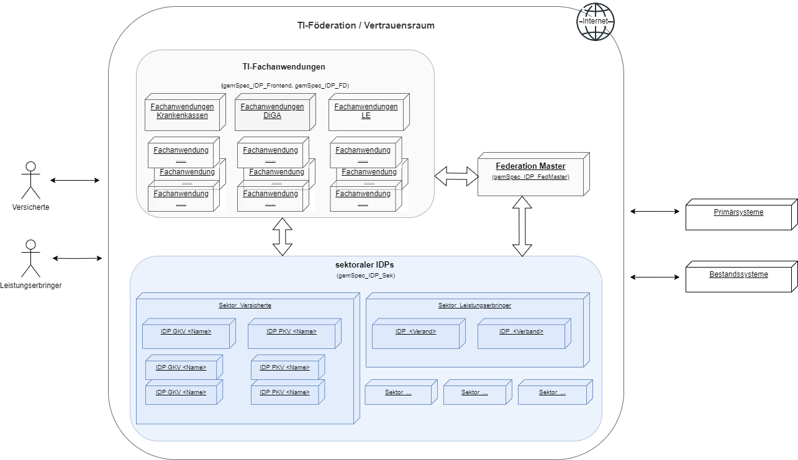
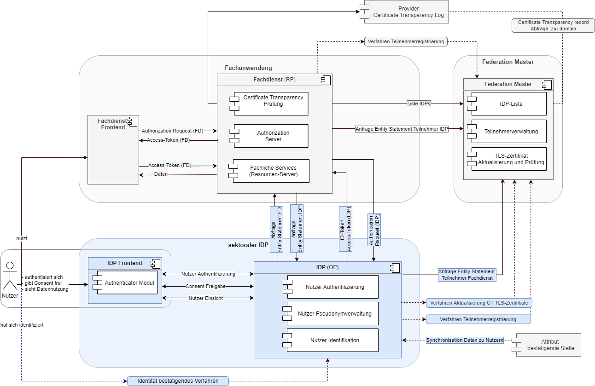
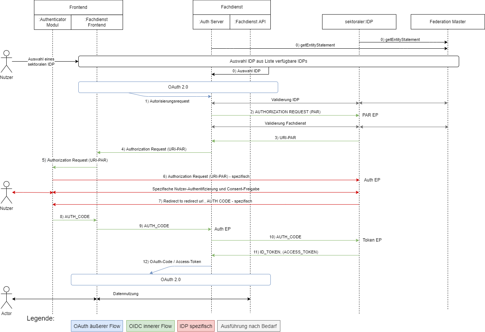
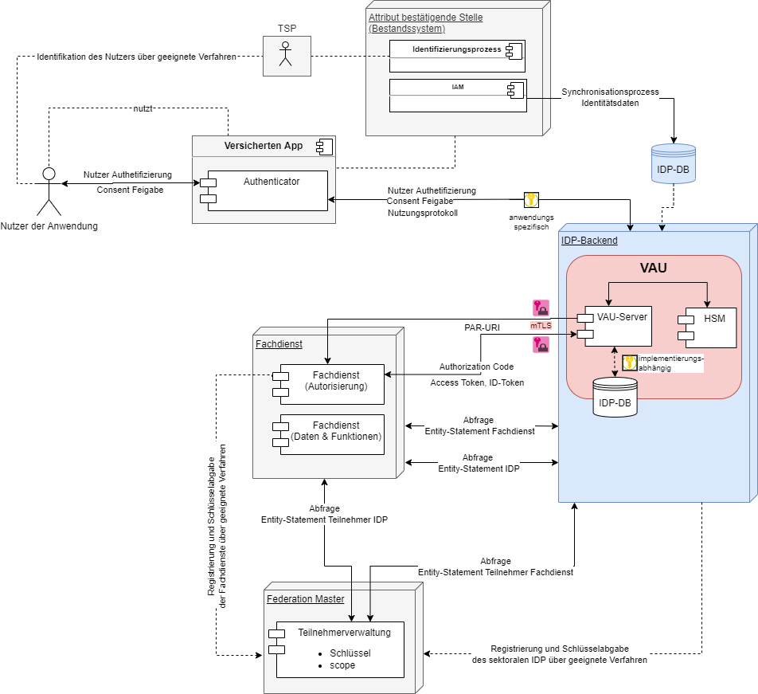
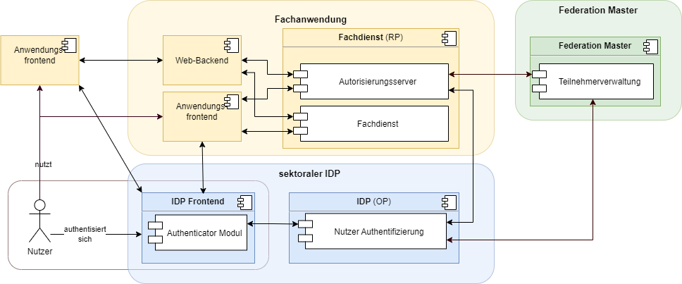
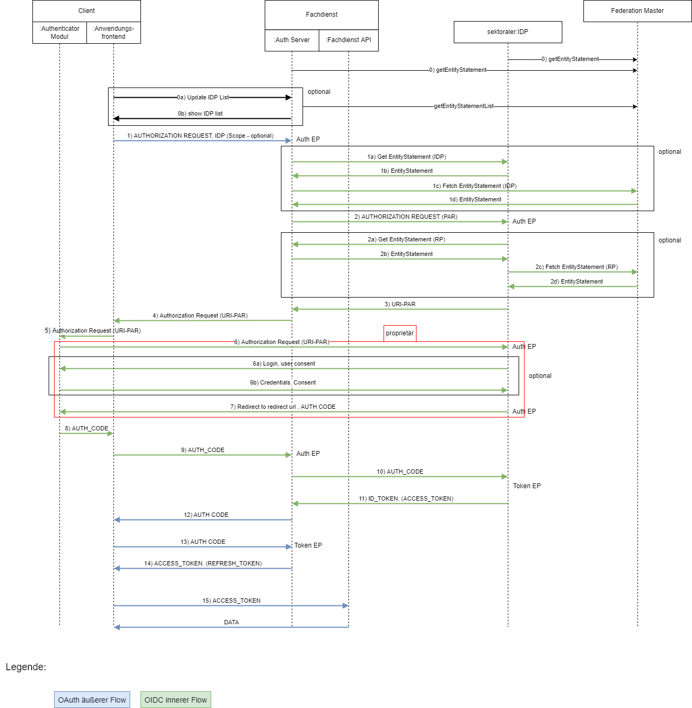
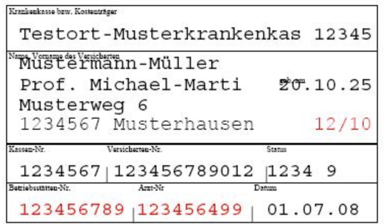
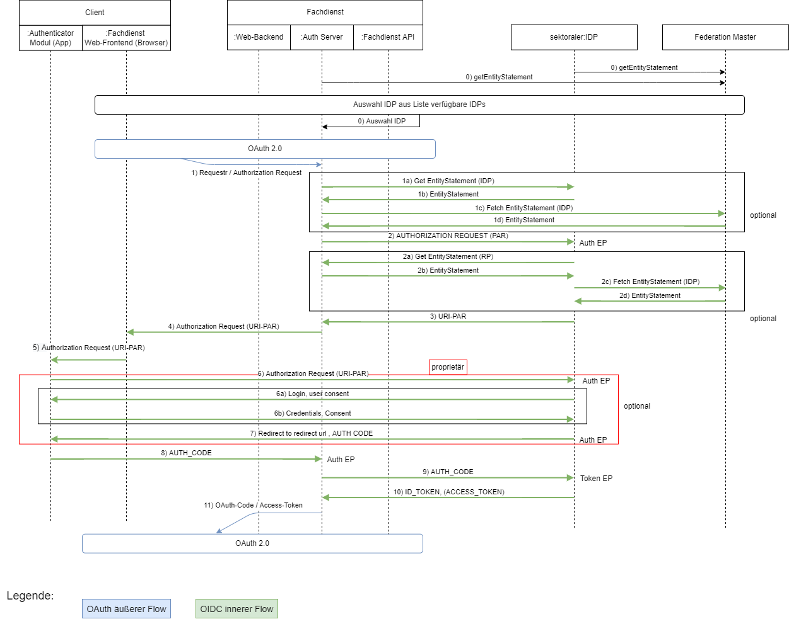
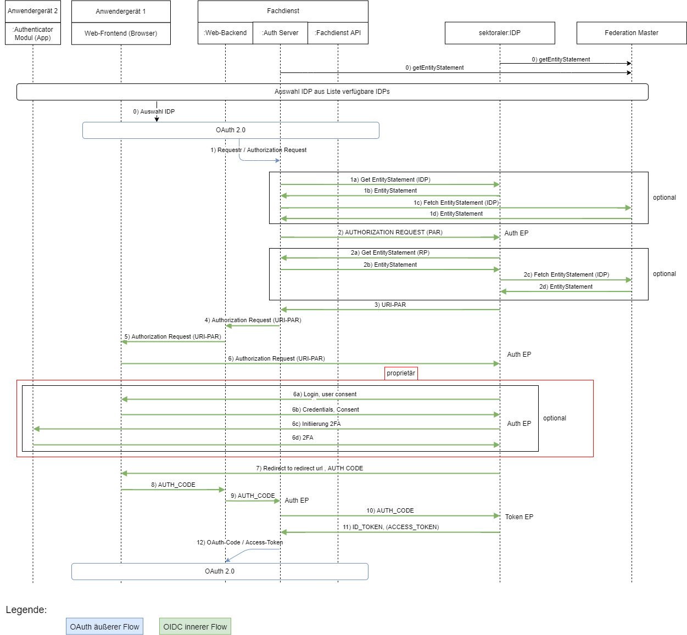
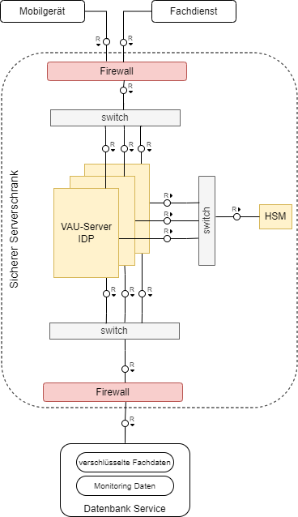

Elektronische Gesundheitskarte und Telematikinfrastruktur
Spezifikation
Sektoraler Identity Provider
| Version | 2.0.1 |
| Revision | 576508 |
| Stand | 20.02.23 |
| Status | freigegeben |
| Klassifizierung | öffentlich |
| Referenzierung | gemSpec_IDP_Sek |
Änderungen zur Vorversion
Anpassungen des vorliegenden Dokumentes im Vergleich zur Vorversion können Sie der nachfolgenden Tabelle entnehmen.
Dokumentenhistorie
| Version |
Stand |
Kap./ Seite |
Grund der Änderung, besondere Hinweise |
Bearbeitung |
|---|---|---|---|---|
| 1.0.0 | 17.12.21 | initiale Version | gematik | |
| 2.0.0 | 02.02.23 | Einarbeitung IDP_Maintenance_22.2 | gematik | |
| 2.0.1 | 20.02.23 | A_23201 und A_23411 in [gemKPT_Betr] überführt | gematik |
Die vorliegende Spezifikation definiert die Anforderungen zu Herstellung, Test und Betrieb des Produkttyps sektoraler Identity Provider (IDP). Ein sektoraler IDP basiert auf den Standards OpenID Connect (OIDC), Open Authorization 2.0 (OAuth 2) und JSON Web Token (JWT). Die hier beschriebenen Schnittstellen werden vom Authenticator-Modul und von Clients für eine Authentifikation eines Nutzers genutzt. Diese Authentifikation ist die Voraussetzung, damit ein Client Zugang zu Fachdaten und Prozessen eines Fachdienstes erlangen kann. Ein sektoraler IDP verwaltet und steuert den Authentifizierungsprozess für Anwendungen der Telematikinfrastruktur (TI).
Das Dokument richtet sich an Hersteller und Anbieter von Identity Providern, welche die Funktionen eines sektoralen IDP für die TI realisieren wollen.
Dieses Dokument enthält normative Festlegungen zur TI des deutschen Gesundheitswesens. Der Gültigkeitszeitraum der vorliegenden Version und deren Anwendung in Zulassungs- oder Abnahmeverfahren wird durch die gematik GmbH in gesonderten Dokumenten (z. B. gemPTV_ATV_Festlegungen, Produkttypsteckbrief, Leistungsbeschreibung) festgelegt und bekanntgegeben.
Schutzrechts-/Patentrechtshinweis
Die nachfolgende Spezifikation ist von der gematik allein unter technischen Gesichtspunkten erstellt worden. Im Einzelfall kann nicht ausgeschlossen werden, dass die Implementierung der Spezifikation in technische Schutzrechte Dritter eingreift. Es ist allein Sache des Anbieters oder Herstellers, durch geeignete Maßnahmen dafür Sorge zu tragen, dass von ihm aufgrund der Spezifikation angebotene Produkte und/oder Leistungen nicht gegen Schutzrechte Dritter verstoßen und sich ggf. die erforderlichen Erlaubnisse/Lizenzen von den betroffenen Schutzrechtsinhabern einzuholen. Die gematik GmbH übernimmt insofern keinerlei Gewährleistungen.
Nicht Bestandteil des vorliegenden Dokumentes ist die konkrete Umsetzung der Authentifizierung eines Nutzers durch einen sektoralem IDP.
Als Umsetzungsleitlinie ist [OpenID Connect Core 1.0] heranzuziehen sowie das Kapitel . Die TI-weit übergreifenden Festlegungen – insbesondere aus Dokumenten wie beispielsweise [gemSpec_Krypt] bezüglich Algorithmen und Schlüsselstärken sowie [gemSpec_PKI] bezüglich zu verwendender Zertifikatstypen und deren Attributausprägungen – haben Bestand, sind weiterhin bindend und werden nicht in diesem Dokument beschrieben. Die konkreten, für das Produkt relevanten Anforderungen finden sich in den entsprechenden Steckbriefen.
Anforderungen als Ausdruck normativer Festlegungen werden durch eine eindeutige ID in eckigen Klammern sowie die dem RFC 2119 [RFC2119] entsprechenden, in Großbuchstaben geschriebenen deutschen Schlüsselworte MUSS, DARF NICHT, SOLL, SOLL NICHT, KANN gekennzeichnet.
Sie werden im Dokument wie folgt dargestellt:
<AFO-ID> - <Titel der Afo>
Text / Beschreibung
[<=]
Dabei umfasst die Anforderung sämtliche zwischen Afo-ID und der Textmarke [<=] angeführten Inhalte.
Hinweis auf offene Punkte
| Offener Punkt: Das Kapitel wird in einer späteren Version des Dokumentes ergänzt. |
Zentrales Merkmal der zu entwickelnden Gesamtlösung der sektoralen IDP ist das Prinzip der Föderation. Die Funktionalität des IDP wird nicht von einem einzigen zentralen Dienst bereitgestellt, sondern „kollektiv“ durch eine Menge von sektoralen IDP, für die jeweils die entsprechenden identitätsherausgebenden Institutionen verantwortlich sind, welche auch für die jeweiligen Nutzergruppen zuständig sind.
Um eine Gesamtlösung sicherzustellen, bei der Anwendungen in möglichst einfacher Weise die verschiedenen sektoralen IDP nutzen können, sind in bestimmten Bereichen einheitliche Vorgaben für die technische und organisatorische Umsetzung zu erstellen:

Abbildung 1 : Überblick TI-Föderation
Die TI-Föderation besteht aus drei Systemen, welche untereinander über standardisierte Schnittstellen kommunizieren. Zusammen bilden die beteiligten Systeme einen Vertrauensraum.
Die TI-Föderation besteht aus mehreren Fachdiensten (Fachanwendungen). Die Fachdienste sind Apps oder Browseranwendungen. Hier werden Nutzern spezielle i.d.R. medizinische digitale Services angeboten. Die Fachdienste nutzen sektorale IDPs zur Überprüfung, ob ein Anwender zur Nutzung des Fachdienstes befugt (autorisiert) ist. Jeder Fachdienst verfügt über einen eigenen Authorization-Server, welcher basierend auf den Informationen der sektoralen Identity Provider über den jeweiligen Nutzer dessen Zugriffsrechte definiert.
Als sektoraler IDP wird ein Dienst zur Authentifizierung von Nutzern bezeichnet. Nach erfolgreichen Durchlaufen des Authentifizierungsprozesses stellt der sektorale IDP Identitätsinformationen für eine bestimmte Gruppe von Nutzern, welche einem Sektor zuzuordnen sind, innerhalb der Telematikinfrastruktur des Gesundheitswesens bereitstellt. Die Identitätsinformationen der Nutzer werden durch den anfordernden Fachdienst zur Prüfung verwendet, auf welche Fachdaten und -prozesse der Nutzer zuzugreifen darf. Insbesondere umfasst ein Sektor die Krankenkassen mit den Versicherten als Nutzer. Zukünftig werden allerdings auch andere Personengruppen wie z. B. Ärzte oder Pflegeinstitutionen über Identity Provider für Leistungserbringer (LE) und Leistungserbringer Institutionen (LEI) angebunden. Dabei ist nicht ausgeschlossen, dass ein sektoraler IDP Identitätsinformationen mehrere Nutzergruppen bedienen kann (siehe auch Parameter "user_type_supported" in Kapitel "3.2 Anwendungsfall - IDP-Liste bereitstellen" in [gemSpec_IDP_FedMaster]).
Der TI-Vertrauensraum wird durch den sogenannten Federation Master (siehe [gemSpek_IDP_FedMaster]) verwaltet. Der Federation Master ist eine zentrale Komponente für alle Teilnehmer - Fachdienste und sektoralen IDPs - in der Föderation. Beim Federation Master sind alle Teilnehmer der Föderation registriert, nur dort registrierte Teilnehmer sind berechtigt, die Dienste der Föderation in Anspruch zu nehmen.
Die Kommunikation zwischen den Systemen in der TI-Föderation basiert auf den Standards OpenID Connect (OIDC), Open Authorization 2.0 (OAuth 2) und JSON Web Token (JWT).
Neben den Systemen der TI-Föderation sind im Gesamtkontext weitere Systeme über Schnittstellen an die TI-Föderation angeschlossen (ohne selbst Bestandteil der Föderation zu sein). Das sind u.a. die Bestandsysteme, in denen aktuell die Informationen zu Nutzern gepflegt werden.
Das Konzept der sektoralen IDP sieht vor, dass diese nicht ausschließlich von Fachdiensten der TI zur Authentifizierung von Anwendern zu verwenden sind. Vielmehr können (und sollen) auch Anwendungen außerhalb der TI (z. B. Anwendungen der Krankenkassen für ihr Versicherten) den sektoralen IDP zur Nutzerauthentifizierung und Attributübertragung verwenden. Für Anwendungen, die nicht übergreifend durch mehrere IDPs unterstützt werden sollen, ist es ausreichend diese direkt bei den jeweiligen IDPs zu registrieren. Die Föderation bietet hier keinen Mehrwert da beide Kommunikationspartner sich ohnehin kennen und vertrauen. Die in den Spezifikationen der gematik festgelegten Anforderungen sind für diese Anwendungen und den Anmeldungsflow am sektoralen IDP nicht bindend. Die (z. B. kasseneigenen) Anwendungen können mit ihren Kassen-IDP weitere scopes und claims vereinbaren. Eine Registrierung am Federation Master für diese Anwendungen nicht notwendig, da sie nicht Teil der Föderation sind. Die Fachdienste müssen sich lediglich OIDC konform am sektoralen IDP (also dem OpenID Provider) registrieren. Der sektorale Identity Provider kann für diese Anwendungen auch zugleich als Authorization-Server agieren und ACCESS_TOKEN ausstellen.
Die untere Abbildung beschreibt den Systemkontext aus Sicht des sektoralen IDP. Das Anwendungsfrontend des Fachdienstes stellt die Anfrage zur Authentifizierung des Nutzers an den Authorization-Server des Fachdienstes. Dieser generiert eine CODE_CHALLENGE und stellt einen Pushed Authorization Request (PAR) an den entsprechenden sektoralen IDP. Der Fachdienst agiert diesem gegenüber als Client. Über das Authenticator-Modul des sektoralen IDP findet dann die Authentifizierung des Nutzers statt. Anschließend erhält der Authorization-Server des Fachdienstes einen AUTHORIZATION_CODE, welchen er bei Token-Endpunkt des sektoralen IDP gegen einen ID_TOKEN eintauscht. Der Authorization-Server des Fachdienstes erstellt nun ein ACCESS_TOKEN für das Anwendungsfrontend, mit welchem dieses auf die, für den Nutzer freigegebenen, Ressourcen des Fachdienstes zugreifen kann. Die Kommunikation zwischen Anwendungsfrontend und Authorization-Server des Fachdienstes kann ebenfalls über einen eigenen AUTHORIZATION_CODE abgesichert werden.
Der Fachdienst und der sektoralen IDP müssen sich zuvor beim Federation Master in Form eines organisatorischen Prozesses registriert haben.

Abbildung 2: Systemkontext
Der Produkttyp des sektoralen IDP besteht aus der zentralen Komponente IDP (OP), dem eigentlichen OpenID-Provider und einer Frontend-Komponente u. a. für die Interaktion mit dem Nutzer, dem Authenticator-Modul. Das Authenticator-Modul unterstützt die Durchführung des Authentifizierungsprozesses und übernimmt die Ausführung der Nutzerauthentisierung.
Der sektorale IDP stellt die zentralisierte Identitätsprüfung der auf die Fachdienste zugreifenden Nutzer bereit. Als weitere Teile der Gesamtlösung sind neben dem sektoraler IDP die Clients (Anwendungsfrontend) und die Fachdienste zu nennen, auf denen Fachdaten für den Zugriff durch die Nutzer (z. B. Versicherte oder Bediener eines AVS, PVS oder KVS) bereitgestellt werden. Ein sektoraler IDP bietet seine Dienste Fachdiensten an, auf welche Millionen Nutzer zeitgleich zugreifen. Auch Anwendungen außerhalb der TI-Föderation, z. B. kassenspezifische Anwendungen, werden direkt den jeweiligen sektoralen IDP nutzen (siehe auch Kapitel 2.1. letzter Absatz).
Aus der Abbildung des Systemkontextes ist ersichtlich, welche Schnittstellen der sektorale IDP zu welchen Systemen unterhält (externe Schnittstellen). Neben den notwendigen externen Schnittstellen sind spezifikationsrelevante interne Schnittstellen zwischen dem eigentlichen IDP - dem OpenID-Provider - und dem Authenticator-Modul aufgeführt. Die Tabelle "Schnittstellenübersicht" listet die für die Spezifikation des sektoralen IDP relevanten und in diesem Dokument näher beschriebenen Schnittstellen auf.
Tabelle 1 : Schnittstellenübersicht
| Schnittstelle | sektoraler IDP | Komponente/System | Typ | fachliche Schnittstellenbeschreibung |
|---|---|---|---|---|
| Authorization Request (IDP) | IDP (OP) | Fachdienst (RP) | extern | Zur Ermittlung der Informationen zum Nutzer stellt der Fachdienst einen Request an den sektoralen IDP. |
| Abfrage Entity Statement FD | IDP (OP) | Fachdienst (RP) | extern | Zur Ermittlung des Entity Statement des Fachdienstes stellt der sektorale IDP einen Request an den Fachdienst. |
| Anfrage Entity Statement IDP | IDP (OP) | Fachdienst (RP) | extern | Zur Abfrage des Entity Statement des sektorale IDP stellt der Fachdienstes einen Request an den sektorale IDP. |
| ID-Token Access-Token (IDP) | IDP (OP) | Fachdienst (RP) | extern | Im Austausch zu einem Authentication Code liefert der sektorale IDP ein ACCESS-TOKEN und ein ID-TOKEN |
| Abfrage Entity Statement Teilnehmer Fachdienst | IDP (OP) | Federation Master | extern | Zur Verifikation einen anfragenden Fachdienst stellt der sektorale IDP einen Request an den Federation Master. |
| Verfahren Aktualisierung CT TLS-Zertifikate | IDP (OP) | Federation Master | extern | organisatorische Schnittstelle zur Schlüsselregistrierung der im sektoralen IDP verwendeten TLS-Zertifikate beim Federation Master |
| Verfahren Teilnehmerregistrierung | IDP (OP) | Federation Master | extern | organisatorische Schnittstelle zur Registrierung des sektoralen IDP als Teilnehmer der TI-Föderation beim Federation Master |
| Synchronisation Daten zu Nutzern | IDP (OP) | Attribut bestätigende Stelle | extern | Die Daten über identifizierte Nutzer, welche über den sektoralen IDP authentifiziert werden können werden von der Attribut bestätigenden Stelle bereitgestellt. |
| Nutzer Authentifizierung | IDP (OP) | IDP Frontend | intern | Die Nutzerauthentifizierung durch den sektoralen IDP erfolgt über das Authenticator-Modul. |
| Consent Freigabe | IDP (OP) | IDP Frontend | intern | Die Consent Freigabe durch den Nutzer erfolgt über das Authenticator-Modul. |
| Nutzer Einsicht | IDP (OP) | IDP Frontend | intern | Die Einsichtnahme des Nutzers in Nutzung seiner Daten durch den sektoralen IDP erfolgt über das Authenticator-Modul. |
| Benutzer Aktion | IDP Frontend | Nutzer | extern | Die Interaktion des Nutzers zur Nutzerauthentifizierung, Consentfreigabe und Einsichtnahme in die Datennutzung erfolgt über das Authenticator-Modul. |
Als sektoraler IDP wird ein Dienst bezeichnet, welcher die Nutzerauthentisierung durchführt. Nach erfolgreicher Nutzerauthentisierung stellt der sektorale IDP Identitätsinformationen zum Nutzer bereit. Die Identitätsinformationen werden von den Fachdiensten zur Durchführung einer Nutzerautorisierung verwendet, also zur Feststellung, auf welche Fachdaten und -prozesse des Fachdienstes dem Nutzer Zugriff gewährt wird. Die bereitgestellten Identitätsinformationen sind spezifisch für die unterschiedlichen Gruppen von Nutzern bzw. Sektoren innerhalb der TI des Gesundheitswesens. Einen Sektor stellen insbesondere die Krankenkassen mit den Versicherten als Nutzer dar. Zukünftig werden allerdings auch andere Personengruppen wie z. B. Ärzte oder Pflegeinstitutionen über sektorale IDP angebunden.
Im Systemkontext eines sektoralen IDP interagieren verschiedene Akteure (Nutzer und aktive Komponenten) in unterschiedlichen OAuth2-Rollen gemäß [The OAuth 2.0 Authorization Framework (section-1.1) ] und OpenID-Connect-Rollen gemäß [OpenID Connect Core 1.0] und [OpenID Connect Federation 1.0 ].
Die Abläufe zur Nutzerauthentisierung für einen Fachdienst sowie der Herausgabe der Identitätsinformationen durch den sektoralen IDP sind als innere Flow und der äußere Flow in Abschnitt erläutert.
Tabelle 2 : Akteure und Rollen
| Akteur | Rolle "OAuth2" | Rolle "OIDC" |
|---|---|---|
| Nutzer (z. B. Versicherte) | Resource Owner | Resource Owner |
| Fachdienst - Authorization-Server | Authorization-Server | Teilnehmer als Relying Party (RP) der Föderation |
| Fachdienst - Fachliche Services (Fachdaten und -Prozesse) | Protected Resource | - |
| Fachdienst - App-Frontend | Client, Nutzerschnittstelle als App | - |
| Fachdienst - App-Frontend | Client, Nutzerschnittstelle als Web-Anwendung | - |
| Fachdienst - UI-Backend | Client, Services der UI-Bereitstellung für Web-Anwendung | - |
| sektoraler IDP | - | Teilnehmer als OpenID Provider (OP) der Föderation |
| Authenticator-Modul des sektoralen IDP | - | Frontend des sektoralen IDP |
| - | OpenID Provider (OP) | |
| Federation Master | - | Teilnehmer der Föderation als Vertrauensanker (Trust Anchor) für alle Teilnehmer (RP + OP) der Föderation |
| Attributbestätigende Stelle | - | kein Teilnehmer der Föderation |
| externe Anwendung | - | kein Teilnehmer der Föderation, Relying Party (RP) gegenüber eines sektoraler IDP (OP) der Föderation |
Nutzer (Rolle: Resource Owner)
Der Resource Owner ist eine natürliche Person, welcher auf die beim Fachdienst (Resource Server) für ihn bereitgestellten Daten und Prozesse (Protected Resource) zugreift.
Der Resource Owner verfügt über die folgenden Komponenten:
Fachdienst (Rolle: Authorization-Server)
Der Authorization-Server des Fachdienstes (OIDC Relying Party) stößt die Authentifizierung des Nutzers beim sektoralen IDP an und erhält als Ergebnis einen Authorization Code, den er gegen ein ID_TOKEN und ACCESS_TOKEN beim sektoralen IDP eintauschen kann. Der Authorization-Server des Fachdienstes verwendet die Informationen aus dem ID_TOKEN für die Feststellung der Zugriffsrechte des Anwendungsfrontend auf die Ressourcen des Fachdienstes. Der Authorization-Server des Fachdienstes stellt eigene ACCESS_TOKEN und REFRESH_TOKEN für das Anwendungsfrontend aus.
Fachdienst (Rolle: Resource Server)
Der Resource Server ist der Fachdienst, der dem Nutzer (Resource Owner) Zugriff auf seine Fachdaten und Prozesse (Protected Resource) gewährt. Der Fachdienst, der die geschützten Fachdaten (Protected Resources) anbietet, ist in der Lage, auf Basis von ACCESS_TOKEN Zugriff für Clients zu gewähren. Ein solches Token repräsentiert die delegierte Identifikation des Resource Owner.
Anwendungsfrontend (Rolle: Client)
Das Anwendungsfrontend (OAuth2 Client) greift auf Fachdienste (Resource Server) und ihre geschützten Fachdaten (Protected Resource) zu. Das Anwendungsfrontend kann auf einem Server als Webanwendung (Primärsystem als Terminalserver), auf einem Desktop-PC oder einem mobilen Gerät (z. B. Smartphone) oder als App auf einem mobilen Gerät ausgeführt werden. Finden für die Anwendung relevante Prozess (Businesslogik) in einem Hintergrundsystem statt, so ist die Backend-Komponente, welche die UI für die Visualisierung auf dem Gerät des Nutzers realisiert, ebenfalls Teil des Clients.
Sektoraler IDP mit dem Authenticator-Modul als Frontend (Rolle: OpenID Provider)
Der Authorization-Server des sektoralen IDP authentifiziert den Resource Owner (Nutzer) und stellt einen Authorization Code aus. Dieser Authorization Code kann später gegen ein ID_TOKEN beim sektoralen IDP eingetauscht werden. Das ID_TOKEN enthält die Informationen für den vom Resource Owner erlaubten Anwendungsbereich (scope).
Weitere Akteure im Kontext des sektoralen IDP sind:
Fachdaten und Prozesse (Rolle: Protected Resource)
Die geschützten Fachdaten und Prozesse, welche vom Fachdienst (Resource Server) angeboten werden.
Attributbestätigende Stelle
Attributbestätigende Stellen sind legitimierte Organisationen, welche die Korrektheit der Attribute verantworten, die durch sie für einen Nutzer beim sektoralen IDP bestätigt werden.
Als Teilprozess der Registrierung ist die zuverlässige und eindeutige Identifikation der Nutzer zwingend notwendig. Hierbei werden eindeutige Identifikationsmerkmale der realen Identitäten benötigt und letztlich als Identitätsinformationen dem sektoralen IDP zur Verfügung gestellt.
Die eindeutigen Identitäten von natürlichen Personen (Versicherte, Leistungserbringer) bzw. juristischen Personen (medizinische Institutionen, Gesellschafterorganisations- und Kostenträger) werden innerhalb der TI über die Krankenversichertennummer des Versicherten und die Telematik-ID eines Leistungserbringers bzw. einer medizinischen Institution oder Organisation des Gesundheitswesens repräsentiert.
Federation Master
Der Federation Master ist eine zentrale Komponente und ein eigener Produkttyp [gemSpec_IDP_FedMaster] in der TI. Der Federation Master bietet die Anwendungsfälle (siehe auch Tabelle Übersicht über die Anwendungsfälle im GesamtkontextFederation Master in [gemSpec_IDP_FedMaster]):
Alle Teilnehmer der Föderation müssen beim Federation Master registriert sein (siehe auch A_22662). Teilnehmer der Föderation sind in diesem Kontext alle Fachdienste und sektoralen IDP. Die Registrierung erfolgt durch einen organisatorischen Prozess, der vom Anbieter des Produkttyp Federation Master bereitgestellt wird. Der Federation Master verwaltet die öffentlichen Schlüssel aller Teilnehmer und zusätzlich für registrierte Fachdienste die jeweils zugelassenen scopes. Er stellt auf Anfrage Teilnehmerbestätigungen in Form von Entity Statements aus. Der Federation Master agiert als Trust Anchor im Sinne der OpenID-Connect-Federation Spezifikation. Für Fachdienst stellt der Federation Master eine Schnittstelle bereit, über die eine Liste aller in der Föderation registrierten sektoralen IDP abgerufen werden kann.
Ein sektoraler IDP bietet zahlreiche Schnittstellen gegenüber unterschiedlichen Akteuren an, weswegen es notwendig ist, die einzelnen Schnittstellen so zu beschreiben, dass andere Akteure deren Funktionsweise leichter verstehen können.
Vorbereitende Maßnahmen:

Abbildung 3 : OAuth- und OIDC-Flow
Der gesamte Authentifizierungsprozess (Abbildung: "OAuth- und OIDC-Flow") basiert aus Gründen der Entkoppelung zwischen den Authentifizierungsmethoden und Token-Formaten der sektoralen IDP und des Fachdienstes aus zwei ineinander geschachtelten OAuth2-Flows vom Typ grant_type=authorization_code.
Im äußeren Flow (Schritt 1) wendet sich das Anwendungsfrontend als Client initial an den Authorization-Server des Fachdienstes und signalisiert diesem über einen zusätzlichen Parameter idp_iss (siehe ) den zur Authentifizierung zu verwendenden sektoralen IDP. Der innere Flow beginnt mit einem Authorization Request in Schritt 2 und endet mit Schritt 11, der Herausgabe eines ID_TOKEN und ACCESS_TOKEN vom sektoralen IDP an den Authorization-Server des Fachdienstes.
Die erste Anfrage an den sektoralen IDP geht am PAR-Endpunkt [OAuth 2.0 Pushed Authorization Requests (section-2)] ein. Der Authorization-Server des Fachdienstes reicht dort am Endpunkt den Authorization Request zur Authentifizierung des Nutzers und zur Bestätigung des scope der anfragenden Anwendung sowie eine CODE_CHALLENGE ein. Der scope der angefragten Nutzdaten ist im Entity Statement des Fachdienstes hinterlegt. Dieses ist dem sektoralen IDP bekannt. Ist das nicht der Fall, so wird das Entity Statement des Fachdienstes durch den sektoralen IDP abgefragt und durch den Federation Master bestätigt. Der Authorization-Server des Fachdienstes tritt bzgl. des inneren Flow als Client auf.
Im Weiteren Ablauf wird der Nutzer wird dann aufgefordert sich, unter Nutzung des Authenticator-Moduls des sektoralen IDP, zu authentisieren. Dies erfolgt über eine Schnittstelle zwischen dem Authenticator-Modul und Authorization-Endpunkt des sektoralen IDP.
Nach erfolgreicher Authentisierung und der Consent-Freigabe durch den Nutzer erstellt der sektorale IDP den AUTHORIZATION_CODE. Dieser wird an den Authorization-Server des Fachdienstes übermittelt, welcher ihn am Token-Endpunkt [The OAuth 2.0 Authorization Framework (section-3.2) ] des sektoralen IDP einreicht. Der sektorale IDP überprüft den AUTHORIZATION_CODE und stellt bei positiver Validierung einen ID_TOKEN und ein ACCESS_TOKEN aus.
Anschließend erstellt der Authorization-Server des Fachdienstes einen AUTHORIZATION_CODE, der an das Anwendungsfrontend zurückgegeben wird. Der äußere Flow endet mit der Herausgabe eines ACCESS_TOKEN an das Anwendungsfrontend bzw. im Fall von Web-Anwendungen an das Web-Backend des Anwendungsfrontends. Der weitere fachliche Ablauf zum Einreichen der Token und zur Nutzung der Fachdaten und Prozesse ist anwendungsspezifisch.
Tabelle 3 : Schritte OAuth- und OIDC-Flow
| Schritt | Beschreibung |
|---|---|
| optional | Die Auswahl eines sektoralen IDP durch den Anwender am Anwendungsfrontend ist erforderlich, wenn der dem Fachdienst (z. B. aus früheren Sitzungen) nicht bekannt ist. |
| 1 | Das Anwendungsfrontend sendet einen Authorization Request mit dem zur Anmeldung gewünschten sektoralen IDP an den Authorization-Server des Fachdienstes. |
| optional | Falls der Authorization-Server das Entity Statement des sektoralen IDP noch nicht kennt, lädt er dies herunter. ( /.well-known/openid-federation). Der sektorale IDP sendet sein Entity Statement zurück. Der sektorale IDP wird gegen den Federation Master validiert indem der Fachdienst das Entity Statement zum sektoralen IDP beim Federation Master abruft. |
| 2 | Der Authorization-Server sendet einen Pushed Authorization Request (PAR) inkl. Code-Challenge und benötigter scopes an den sektoralen IDP und authentisiert sich als Client innerhalb der mTLS Verbindung. Die Erzeugung der Code-Challenge erfolgt durch den Authorization-Server entsprechende der Spezifikation [RFC7636 - Proof Key for Code Exchange by OAuth Public Clients] (PKCE) über die Generierung eines Zufallswertes (Codeverifier) und die Erzeugung eines Hashwert für den Codeverifier. Die Code-Challenge ist dann der base64-codierte Hashwert des Codeverifier. |
| optional | Falls der sektorale IDP das Entity Statement des Authorization-Servers noch nicht kennt, lädt er dies herunter. ( /.well-known/openid-federation). Der Authorization-Server sendet sein Entity Statement zurück und der sektorale IDP registriert ihn als Client. Der Fachdienst wird gegen den Federation Master validiert indem der sektorale IDP das Entity Statement zum Fachdienst/Authorization-Server beim Federation Master abruft. |
| 3 | Der sektorale IDP sendet eine Request-URI (mit Bezug zum vorherigen AUTHORIZATION_REQUEST) an den Authorization-Server. |
| 4 | Der Authorization-Server sendet die Request-URI und Client ID an das Anwendungsfrontend zur Weiterleitung an die Adresse des Authenticator des sektoralen IDP. |
| 5 | Anwendungsfrontend öffnet den Authenticator für die eigentliche Authentifizierung des Anwenders (Deep-Link/Universal-Link). |
| 6 | Das Authenticator-Modul leitet den Authentication Request an den sektoralen IDP weiter. |
| spezifisch | Der Ablauf der Authentifizierung des Nutzers ist IDP spezifisch. |
| 7 | Der Authorization-Endpunkt des sektoralen IDP antwortet dem Authenticator-Modul mit dem AUTHORIZATION_CODE und einem Redirect zum Fachdienst. |
| 8 | Das Authenticator-Modul des sektoralen IDP ruft über einen App-Link bzw. Universal-Link entsprechend der Redirect-URL das Anwendungsfrontend auf (eigentlich ein Redirect zum Fachdienst aber das Frontend ist auf die Adresse registriert) und übergibt den AUTHORIZATION_CODE |
| 9 | Die Anwendungsfrontend leitet den AUTHORIZATION_CODE (IDP) an den Authorization-Server. |
| 10 | Der Authorization-Server reicht den AUTHORIZATION_CODE (IDP) und den CODE_VERIFIER beim Token-Endpunkt des sektoralen IDP ein und authentisiert sich als Client innerhalb der mTLS Verbindung. |
| 11 | Der Authorization-Server erhält vom Token-Endpunkt des sektoralen IDP einen ID_TOKEN und ACCESS_TOKEN mit den gewünschten claims, der mit dem öffentlichen Schlüssel aus der Registrierung verschlüsselt ist. |
| Der weitere Ablauf entspricht dem OAuth-Flow und unterscheidet sich in Details je nach Ausprägung des Anwendungsfrontend als App oder Web-Anwendung. |
Die Abläufe für App-App Kommunikation, Web-App Kommunikation und Kommunikation unter Beteiligung von zwei Geräten sind im Anhang B detailliert beschrieben.
Über den aktuellen Stand dieser Spezifikation hinaus werden verschiedene Erweiterungen der Funktionalitäten der sektoralen Identity Provider diskutiert, auf welche dieses Kapitel bereits einen Ausblick geben soll. Diese Aspekte benötigen jedoch zuvor eine angepasste Gesetzeslage, um in den Funktionsumfang des Identity Provider aufgenommen zu werden.
Möglichkeit der Einwilligung zur Nutzung von niederschwelligen Authentisierungsverfahren:
Die gematik plant, für die Versicherten neben den Authentifizierungsverfahren auf einem hohen Sicherheitsniveau zusätzlich auch komfortablere Verfahren auf einem niedrigeren Sicherheitsniveau zu erlauben, sofern die Versicherten nach sachgerechter Aufklärung über bestehende Risiken in diese Verfahren explizit einwilligen und die Einwilligung freiwillig erfolgt (d. h. Verfahren auf dem Niveau "hoch" auch tatsächlich parallel zur Verfügung stehen). Dabei ist sichergestellt, dass die Versicherten nur Risiken für sich selbst, niemals aber für Dritte eingehen können. Diese Einwilligungsmöglichkeit wird zudem bewusst nur für Versicherte, nicht aber für Leistungserbringende vorgesehen, da letztere auch Zugriff auf andere Patientendaten haben und deshalb durch die Einwilligung ein Risiko zulasten Dritter eingehen könnten.
Die einmalige Identifizierung (in Abgrenzung zur Authentifizierung) bleibt in jedem Fall auf dem Niveau "hoch", sodass zum einen eine lückenlose Identifizierung und Authentifizierung auf dem Niveau "hoch" ermöglicht wird und zum anderen, im Falle einer Einwilligung in ein niederschwelliges Authentifizierungsverfahren, die korrekte Identität des oder der Einwilligenden zweifelsfrei sichergestellt ist. Ziel ist es, die Nutzerakzeptanz zu verbessern, indem diese - im Sinne der informationellen Selbstbestimmung - selbst entscheiden können, wie komplex sie den Zugang zu ihren Anwendungen absichern wollen.
Biometrie:
Vorgaben zur Biometrie sind in der aktuellen Spezifikation noch nicht vorhanden sind, da nach Aussage des BSI kein ausreichendes Schutzniveau erreicht werden kann. Diese Features werden spezifiziert, sobald sie ein ausreichendes Schutzniveau erreichen können.
Die Verwendung von biometrischen Faktoren wird in die Spezifikation mit aufgenommen, sobald Einigung zu klaren technischen Vorgaben und Prozessen besteht, nach denen transparent für den Nutzer entschieden wird, ob die biometrischen Sensoren eines Endgerätes für den Einsatz als Authentisierungsfaktor verwendet werden können. Ebenso ist es Voraussetzung, dass die Umsetzung der Vorgaben auf Entwicklungsebene praktikabel mit Systemmitteln zu realisieren ist, ohne die Verwaltung der Schlüssel und biometrischen Sensoren in der Software der Authenticator Module realisieren zu müssen.
Single Sign-On:
Vorgaben zum Single-Sign-On sind in der aktuellen Spezifikation noch nicht vorhanden sind, da nach Aussage des BSI kein ausreichendes Schutzniveau erreicht werden kann. Diese Features werden spezifiziert, sobald sie ein ausreichendes Schutzniveau erreichen können oder der Nutzer auf ein niedrigeres Niveau einwilligen kann, mit dem ein Single-Sign-On BSI konform umsetzbar ist.
Sobald erste Anwendungen ausgerollt sind und die IDPs breiter genutzt werden, oder wenn Anwendungsfälle konkret werden, welche die Interaktion mit verschiedenen Fachdiensten der TI innerhalb einer Anwendung vereinen (für Anwendungen der Kassen, welche direkt am IDP registriert werden, ist dies bereits jetzt möglich) sollen Mechanismen etabliert werden, mit denen es ermöglicht wird, mit einer einzelnen Authentisierung für einen begrenzten Zeitraum ID_TOKEN für verschiedene Fachdienste zu erzeugen und damit dem Nutzer die Notwendigkeit zu ersparen, sich für jeden Fachdienst einzeln anzumelden. Gerade innerhalb einer Anwendung oder eines anwendungsübergreifenden Anwendungsfalls ist Single Sign-On essentiell.
Unterstützung von sektoralen Identity Provider für Leistungserbringer:
Es werden die Vorgaben definiert, nach denen einer oder auch mehrere Identity Provider elektronische Identitäten für Leistungserbringer verwalten. Dies geschieht mit Fokus auf mobile Anwendungsszenarien. Mit entsprechenden Bedarfen soll es jedoch weitergehend auch auf Authentisierungen im Praxisumfeld erweitert werden. Die Institutionszugehörigkeit dabei als Attribut zu betrachten, welches durch benannte Vertreter der jeweiligen Institution verwaltet werden kann, wird in diesem Zusammenhang ebenfalls diskutiert.
Der sektorale IDP muss die folgenden übergreifenden Anforderungen erfüllen.
A_22838
Der Anbieter des sektoralen IDP MUSS Sperrmeldungen von Sperrberechtigten, zu von ihm verantworteten Authentisierungsmitteln, jederzeit entgegennehmen und das betroffene Authentisierungsmittel oder auch den gesamten Zugang des Nutzers daraufhin unverzüglich sperren. <=
Hinweis: Dies bezieht sich nicht auf für eine Authentisierung verwendete eGK oder den elektronischen Identitätsnachweis (online-Ausweisfunktion).
Hinweis: Grundsätzlich sollte eine effektive Sperrung so schnell wie möglich erfolgen (siehe auch TR 03107-1 Kap. 3.4.1).
A_22690
Der Hersteller des sektoralen IDP MUSS für sein Produkt im dazugehörigen Betriebshandbuch leicht ersichtlich darstellen, welche Voraussetzungen vom Betreiber und der Betriebsumgebung erfüllt werden müssen, damit ein sicherer Betrieb des Produktes gewährleistet werden kann. <=
A_22691
Der Anbieter eines sektoralen IDP MUSS die im Betriebshandbuch des eingesetzten sektoralen IDP beschriebenen Voraussetzungen für den sicheren Betrieb des Produktes gewährleisten. <=
A_23337
Ein sektoraler IDP als Teilnehmer der TI-Föderation MUSS bei dem eingesetzten Schlüsselmaterial (Signatur, Authorisierungstoken, Entity Statement, etc.), folgende Vorgaben umsetzen:
A_23044
Der Anbieter des sektoralen IDP KANN die Anmeldung an weiteren Diensten außerhalb der Föderation unterstützen und diesen die Authentisierung von Nutzern auf Basis der bestehenden digitalen Identitäten anbieten. <=
A_22239
Der Anbieter eines sektoralen Identity Provider MUSS die folgenden kryptographischen Objekte als schützenswerte Objekte in seinem Sicherheitskonzept berücksichtigen: (a) Private Schlüssel, (b) Öffentlicher Schlüssel, (c) Öffentliche Schlüssel von registrierten Clients, (d) Datensätze zu den einzelnen Nutzern, (e) Authentisierungsinformationen von Sperrberechtigten, (f) Dokumentation über beauftragte und durchgeführte Sperrungen, (g) Statusinformationen, (h) Authentisierungsinformationen zur Authentisierung von internen Akteuren bzw. Rollen, (i) Protokolldaten, (j) Konfigurationsdaten. <=
A_22240
Der Anbieter des sektoralen Identity Provider MUSS Maßnahmen zum Schutz vor den zum Zulassungszeitpunkt aktuellen OWASP-Top-10-Risiken umsetzen und dokumentieren, wie es vorgesehen ist, ebenfalls auf die nach dem Zulassungszeitpunkt aktuellen OWASP-Top-10-Risiken zu reagieren. <=
Hinweis: Die Nichtanwendbarkeit eines OWASP-Top-10-Risikos ist zu begründen. Für Informationen zum Umgang mit den OWASP-Top-10-Risiken wird auf den aktuellen [OWASP Top 10 Report] und die darin enthaltenen Vorgehensweisen für z. B. Entwickler und Tester verwiesen.
A_22241
Der Anbieter eines sektoralen Identity Provider MUSS beim internen Datenaustausch die Integrität, Authentizität und Vertraulichkeit der Daten sichern. <=
A_22242-01
Der Anbieter eines sektoralen Identity Provider MUSS für den Datenaustausch mit anderen Rollen und Diensten Mechanismen zur Sicherung der Datenintegrität, der Authentizität und der Vertraulichkeit der Daten zur Verfügung stellen. Hierzu gehören z. B. die Schnittstellen vom Anbieter eines sektoralen Identity Provider zur Attributbestätigenden Stelle für die Übermittlung der Attribute bei der Einrichtung eines Nutzers sowie von Supportfälle.
<=
Hinweis: Eine Übersicht zu den externen Schnittstellen findet sich in der Tabelle "Schnittstellenübersicht".
Hinweis: Die Attributbestätigende Stelle (z. B. der Kostenträger für Versicherte) verantwortet die Korrektheit dieser Daten.
A_22243-02
Der Anbieter des sektorale Identity Provider SOLL für die Registrierung der Endanwender die bestehenden Datensätze der Endanwender (Versicherte) beim Kostenträger verwenden, so wie sie für eine Identifikation nach [GKV-SV Richtlinie "Kontakt mit Versicherten] beschrieben wurden. <=
A_22244
Der Anbieter eines sektoralen Identity Provider MUSS sicherstellen, dass das Testsystem von dem Produktivsystem technisch, organisatorisch und betrieblich so getrennt wird, dass keine gegenseitige Beeinflussung und keine Verwechslung möglich sind. <=
A_22245
Der Anbieter eines sektoralen Identity Provider MUSS die Einrichtungs- und Sperrprozesse datenschutzgerecht ausgestalten, d.h. insbesondere sind für die Verarbeitung der Antrags- und Sperrauftragsdaten die Datenschutzgrundsätze gemäß Art. 5 DSGVO zu berücksichtigen, sowie die technischen und organisatorischen Maßnahmen nach Art. 25 und Art. 32 DSGVO zu treffen. <=
A_22246
Der Anbieter eines sektoralen Identity Provider MUSS die Attributsdaten und Sperraufträge zu einem Nutzer unverzüglich löschen, sobald die gesetzlichen oder vertraglichen Aufbewahrungsfristen erreicht sind. <=
A_22839
Falls der Anbieter eines sektoralen IDP eine Protokollierung zum Zwecke der Fehler- bzw. Störungsbehebung durchführen muss, MÜSSEN die Protokolldaten entsprechend dem Datenschutzgrundsatz der Datenminimierung (gemäß Art. 5 Abs. 1 Satz 1 lit.c DSGVO unter Berücksichtigung der Art. 25, 32 DSGVO) derart gestaltet sein, dass nur personenbezogene Daten in der Art und dem Umfang enthalten sind, wie sie zur Behebung erforderlich sind. Insbesondere MUSS der Anbieter eines sektoralen IDP sicherstellen, dass ein Bezug zwischen Nutzer und Fachdienst aus den Protokollen nicht ersichtlich sein. <=
Hinweis: Eine Protokollierungspflicht besteht nicht.
Hinweis: Sollte es zur Störungsbehebung notwendig sein, eine Fachdienstanfrage und Nutzerauthentisierung zu korrelieren, kann der sektorale IDP zu diesem Zweck die durch den Fachdienst für diesen Fall auf organisatorischem Weg zu liefernde "nonce" der Anfrage nutzen.
A_23021
Wenn der Anbieter eines sektoralen Identity Providers die Anmeldung an weiteren Dienste außerhalb der Föderation unterstützt MUSS sichergestellt sein, dass die Anforderungen an Verfügbarkeit, Performance und Sicherheit der Schnittstellen für Fachdienste der Föderation erfüllt werden. <=
A_23023
Der sektorale IDP MUSS sicherstellen, dass alle Eingabewerte, welche vom sektoralen IDP über externe Schnittstellen (siehe Tabelle "Schnittstellenübersicht") entgegengenommen und verarbeitet werden, auf schadhafte Werte geprüft werden.
<=
Hinweis: Eine Prüfung der Eingabewerte muss produktseitig bereitgestellt werden und sollte mindestens Prüfungen auf Länge, Character Set, Schlüsselwörter und Steuerzeichen enthalten. Ein Fuzzing im Rahmen des Produkttests bzw. der Inbetriebnahme ist durchzuführen.
A_23022
Werden Daten der Authentisierungsprozesse im sektoralen IDP geändert oder gelöscht, ohne dass der Nutzer direkt involviert ist, so MUSS der Anbieter des sektoralen IDP sicherstellen, dass die operativen Prozesse dazu ausschließlich im 4-Augen-Prinzip ausgeführt werden. Der Nutzer ist über die Änderungen zu informieren und die Änderung MUSS erkennbar sein. <=
Hinweis: Serviceprozesse welche der Nutzer über den Support in Anspruch nimmt (z. B. Passwort ändern/rücksetzen) sind von dieser Anforderung nicht betroffen.
A_23499
Werden personenbezogene Daten im sektoralen IDP geändert oder gelöscht, ohne dass der Betroffene direkt involviert ist, so MUSS der Anbieter des sektoralen IDP sicherstellen, dass die operativen Prozesse dazu ausschließlich im 4-Augen-Prinzip ausgeführt werden. Der Nutzer ist über die Änderungen zu informieren. Personenbezogene Daten, die über den Synchronisationsprozess mit den Kassensystemen geändert oder gelöscht werden, sind von diesem operativen Prozess nicht betroffen. <=
Hinweis: Im Regelfall erfolgen solche Datenänderungen in den Bestandsystemen der Krankenkassen, die über Synchronisationsprozesse den Datenbestand des sektoralen IDP aktualisieren. Hier erfolgt die Information an die Versicherten allein über die kassenüblichen Prozesse.
A_22824
Der Anbieter eines sektoralen Identity Provider MUSS den Dienst so konfigurieren, dass bei Vollauslastung der Systemressourcen im sektoralen Identity Provider keine weiteren Verbindungen angenommen werden und dieser stattdessen mit dem HTTP-Statuscode "429 - Too Many Requests" antwortet. <=
Hinweis: Durch die Zurückweisung von Verbindungen wird sichergestellt, dass Clients einen Verbindungsaufbau mit einer anderen Instanz des Dienstes versuchen, bei der die erforderlichen Systemressourcen zur Verfügung stehen.
A_22692
Der Anbieter des sektoralen IDP MUSS nachweisen, dass er die aktuellen Empfehlungen des BSI bei der Standortwahl seiner Rechenzentren vollumfänglich umsetzt. Der Anbieter des sektoralen IDP MUSS Unterschreitungen der Empfehlungen des BSI begründen und die Abmilderung der Risiken begründet nachweisen. Der Anbieter des sektoralen IDP MUSS einen Prozess für die Umsetzung zukünftige Empfehlungen des BSI bei der Standortwahl seiner Rechenzentren nachweisen. <=
Hinweis: Weitere Informationen finden Sie unter: https://www.bsi.bund.de/SharedDocs/Downloads/DE/BSI/RZ-Sicherheit/Standort-Kriterien_Rechenzentren.pdf
A_22250
Der Anbieter eines sektoralen Identity Provider MUSS sicherstellen, dass die Schnittstellen des sektoralen Identity Provider nur über eine gegen Abhören, Manipulation und Replay-Angriffe geschützte Verbindung genutzt werden können. <=
Hinweis: Eine Übersicht zu den Schnittstellen findet sich in der Tabelle "Schnittstellenübersicht".
A_22512
Der Anbieter eines sektoralen IDP MUSS sicherstellen, dass seine Schnittstellen ins Internet an allen Standorten durch einen DDoS-mitigierenden Dienstleister geschützt werden. <=
Hinweis: Die Informationen zu den Empfehlungen des BSI sind zu berücksichtigen:
https://www.bsi.bund.de/SharedDocs/Downloads/DE/BSI/Cyber-Sicherheit/Themen/Dienstleister-DDos-Mitigation.html
https://www.bsi.bund.de/SharedDocs/Downloads/DE/BSI/Cyber-Sicherheit/Themen/Dienstleister-DDos-Mitigation-Liste.pdf;
A_23099
Der Anbieter eines sektoralen IDP MUSS im Sinne der vollständigen DSGVO-Konformität sicherstellen, dass die Datenverarbeitung innerhalb der Europäischen Union erfolgt und dieses auch nachweisen. <=
A_22694
Der Anbieter des sektoralen Identity Provider MUSS diesen an mindestens zwei Standorten betreiben.
Jeder Standort MUSS dabei die Performancevorgaben allein erfüllen.
Eine getrennte Adressierung durch zugreifende Anwendungsfrontends und Fachdiensten MUSS hierdurch möglich sein - alternativ ist diese Adressierung auch durch den DDoS-mitigierenden Dienstleister erlaubt.
<=
Hinweis: Ein Aktiv-Aktiv Betrieb der beiden Standorte ist nicht gefordert, entscheidend ist die Sicherstellung der Verfügbarkeit.
A_22695
Ab dem 31.12.2023 MUSS der Anbieter des sektoralen Identity Provider seinen Dienst an zwei Standorten gemäß A_22692 betreiben, wobei eine Unterschreitung des Abstandes von 100 km gemäß A_22692 nicht zulässig ist. <=
A_22506-01
Der Anbieter des sektoralen Identity Provider MUSS pro Standort ein unabhängiges Bedienpersonal vorhalten, um die Risiken der Standortvorgaben des BSI tragen zu können. <=
A_22508
Der sektorale Identity Provider MUSS von ihm nicht erlaubte Authenticator-Module (anhand der Versionsnummern) ablehnen, von einer Kommunikation mit dem sektoralen Identity Provider ausschließen und diesen Verbindungsversuch mit dem Status-Code 79105 in den Rohdaten protokollieren. <=
A_22509
Der sektorale Identity Provider MUSS Authenticator-Module mit fehlenden Versionsnummern ablehnen, von einer Kommunikation mit dem sektoralen Identity Provider ausschließen und diesen Verbindungsversuch in den Rohdaten mit dem Error-Code 403 protokollieren. <=
A_22931
Das Authenticator-Modul MUSS in Requests an den IDP seine Produktversion übermitteln. <=
A_22253
Der sektorale Identity Provider MUSS die vom Authenticator-Modul mitgeteilte Versionsnummer erkennen und festgelegte Versionsnummern über eine blockinglist von einer Kommunikation ausschließen können. <=
A_22254-01
Der sektorale Identity Provider MUSS auf Anweisung der gematik Authenticator-Module mit bestimmten Versionsnummern von einer Kommunikation mit dem sektoralen Identity Provider ausschließen und diesen Verbindungsversuch in den Rohdaten protokollieren. <=
Hinweis: Im Regelprozess sichert der Betreiber in Eigenverantwortung zu, dass nur unterstützte und sichere Versionen des Authenticator-Moduls mit den Serverkomponenten des Sektoralen IDP kommunizieren dürfen.
Bei dieser Anforderung handelt es sich um eine betriebliche Eskalation im Notfall und nicht um einen Regelprozess.
A_23192
Der Anbieter des sektoralen Identity Provider MUSS Schlüsselpaare welche zur Signatur von Entity Statements bzw. ID_TOKEN oder zur TLS-Authentisierung verwendet werden, nach maximal 398 Tagen austauschen. <=
Hinweis: Für TLS Schlüssel ist dies konsistent zu den aktuellen Vorgaben des CAB-Forum.
In diesem Abschnitt werden die Anforderungen an den sektoralen IDP zur Umsetzung einer Vertrauenswürdigen Ausführungsumgebung (VAU) dargestellt. Die VAU dient der datenschutzrechtlich zulässigen und sicheren Verarbeitung von schützenswerten Klartextdaten innerhalb des sektoralen IDP sowie dem technischen Ausschluss einer Profilbildung durch den Anbieter bzw. Betreiber. Sie verhindert ein Eingreifen des Anbieters in den sicheren Betrieb und die Manipulation von Daten. Die VAU stellt dazu Verarbeitungskontexte (d. h. Instanzen der VAU) bereit, in denen die Verarbeitung sensibler Daten im Klartext erfolgen kann. Diese Verarbeitungskontexte sind entsprechend zu schützen. Durch diese Ausgrenzung des Betreibers von kritischen Operationen ist es nicht mehr Notwendig Einschränkungen für den Umfang der weiteren durch den Anbieter bzw. Betreiber bereitgestellten Dienste umzusetzen, um möglichen Interessenkonflikten zu begegnen. Im Anhang C ist u.a. ein beschrieben.

Abbildung 4: Schnittstellen der in der VAU laufenden Komponente des sektoralen IDP
Tabelle 4: Vorgaben für die im sektoralen IDP befindlichen Endpunkte zur Ausführung in einer VAU
| Schnittstelle | Gegenstelle | Beschreibung | VAU Ausführung |
|---|---|---|---|
| Pushed Authorization Request (PAR) | Fachdienst Authorization-Server | Der Pushed Authorization Request enthält Informationen zum anfragenden Fachdienst und zum scope der angeforderten Daten des Nutzers. |
zwingend |
| Einlösen des Authorization Code | Fachdienst Authorization-Server | Der Token-Request zum Einlösen des Authorization Code enthält Informationen zum Fachdienst. Der Response auf den Request enthält Informationen zum Nutzer. | zwingend |
| Abruf selbstsigniertes Entity Statement | Fachdienst Authorization-Server | Der Fachdienst bezieht die Konfigurationsparameter, Adressen und Schlüssel des sektoralen IDP | optional |
| Abruf Entity Statement zur Teilnehmerauskunft | Federation Master | Der Schlüssel des Federation Master zum Verifizieren der von diesem signierten Entity Statements wird sicher verwahrt. |
optional |
| Authentifizierung | Authenticator-Modul auf Endgerät des Nutzers | Die Ausprägung der Schnittstelle kann anwendungsspezifisch gestaltet werden. | optional |
| Consent-Freigabe und Initialer Authorization Request |
Authenticator-Modul auf Endgerät des Nutzers | Es muss nachprüfbar gewährleistet sein, dass der Betreiber des sektoralen IDP keinen Zugriff auf die über die Schnittstelle transportierten Inhalte bezüglich des Anfragenden Dienstes erlangen kann. | zwingend |
| Aktualisierung der Identitätsdaten im sektoralen IDP | Anwendungssystem, welchen die Identitäten der Versicherten verwaltet (Attributbestätigende Stelle) | Die Aktualisierung des Datenbestandes des sektoralen IDP erfolgt durch das Bestandssystem der jeweiligen attributbestätigenden Stelle. | optional |
| Ablage und Abfrage der vom sektoralen IDP verwalteten schützenswerten Prozessdaten der Nutzerauthentifizierung. | Datenbank für Prozessdaten der VAU | Die vom sektoralen IDP verwalteten schützenswerten Daten liegen verschlüsselt in einer Datenbank auf welche nur aus einer VAU zugegriffen werden kann. Die Datenbank kann innerhalb oder außerhalb der VAU betrieben werden. Bei einem Betrieb außerhalb der VAU muss gewährleistet sein, dass der Betreiber des sektoralen IDP keinen Zugriff auf die über die Schnittstelle transportierten Inhalte hat. Hinweis: Schützenswerte Daten im Kontext der sektoralen IDP sind die Daten, welche innerhalb der VAU zum laufenden Authentifizierungsprozess erzeugt bzw. gespeichert werden (client_id, state, redirect_uri, code_challenge, AUTHORIZATION_CODE, ID-TOKEN), sowie die Daten für das Nutzerprotokoll. |
optional |
Die Gesamtheit aus der für eine Klartextverarbeitung erforderlichen Software, dem für eine Klartextverarbeitung genutzten physikalischen System sowie den für die Integrität einer Klartextverarbeitung erforderlichen organisatorischen und physischen Rahmenbedingungen bildet den Verarbeitungskontext der Vertrauenswürdigen Ausführungsumgebung (VAU). Zur Vertrauenswürdigen Ausführungsumgebung gehören neben den Verarbeitungskontexten alle für ihre Erreichbarkeit und betriebliche Steuerung erforderlichen Komponenten. Der Verarbeitungskontext grenzt sich von allen weiteren, im betrieblichen Kontext beim Anbieter des sektoralen IDP vorhandenen Systemen und Prozessen dadurch ab, dass die sensiblen Klartextdaten von Komponenten innerhalb des Verarbeitungskontextes aus erreichbar sind oder sein können, während sie dies von außerhalb des Verarbeitungskontextes nicht sind. Sensible Daten verlassen den Verarbeitungskontext ausschließlich gemäß wohldefinierten (Zugriffs-)Regeln und in verschlüsselter Form.
Umsetzungsempfehlungen für die Realisierung einer Vertrauenswürdigen Ausführungsumgebung finden sich im Anhang C.
| Offener Punkt: Die Prüfung der Anforderung an den Betrieb VAU und Umsetzungsvorschläge bzw. -hinweise in cloud-Infrastrukturen sind derzeit in Arbeit. Details dazu werden diesem Kapitel später hinzugefügt. |
A_22864
Der sektorale IDP MUSS die Verarbeitung aller Operationen welche die Ziele gemäß A_23018, A_23019 und A_22959 gewährleisten in einer Vertrauenswürdigen Ausführungsumgebung umsetzen. Die HTTP-Verbindungen zwischen Fachdiensten und sektoralem IDP MÜSSEN als mTLS-Verbindungen ausgelegt werden, welche innerhalb der VAU terminieren. <=
A_23002
Der Anbieter des sektoralen IDP MUSS sicherstellen, dass alle Operationen, welche die Ziele gemäß A_23018, A_23019 und A_22959 gewährleisten, in einer vertrauenswürdigen Ausführungsumgebung umgesetzt werden. <=
A_23018
A_23019
Hinweis 1: Siehe in diesem Zusammenhang auch A_23031 - TLS-Verbindung Authenticator-Modul - Vertrauenswürdige Ausführungsumgebung.
Hinweis 2: Ein Logging zur Betriebsüberwachung und Fehleranalyse ist zulässig, darf jedoch keine Identifikation des genutzten Fachdienstes zulassen.
A_22959
Der Anbieter des sektoralen IDP MUSS dafür sorgen, dass der Prozess zur Freigabe des Consent durch den Nutzer verschlüsselt und nicht einsehbar für Dritte oder den Betreiber selbst erfolgt. <=
Der Schutzbedarf der in der VAU verarbeiteten Klartextdaten erfordert den technischen Ausschluss von Zugriffen des Anbieters. Dies umfasst insbesondere Zugriffe durch Personen aus dem betrieblichen Umfeld des Anbieters.
A_22829
Der Anbieter des sektoralen IDP MUSS das private Schlüsselmaterial für kryptografische Verfahren in einem HSM speichern, dessen Eignung durch eine erfolgreiche Evaluierung nachgewiesen wurde. Als Evaluierungsschemata kommen dabei Common Criteria oder Federal Information Processing Standard (FIPS) in Frage.
Die Prüftiefe MUSS mindestens:
A_23205
Der Anbieter des sektoralen IDP MUSS Prozesse für die Verwaltung der Systeme der VAU etablieren, welche die Authentizität und Integrität der Verarbeitungskontexte systematisch von einem kryptographischen Root-of-Trust ableiten, der in einem HSM gemäß A_22829 verwaltet wird.
Der Anbieter des sektoralen IDP MUSS bei der Ableitung ein Vertrauensniveau erreichen, welches für den Schutzbedarf der in der VAU verarbeiteten Daten angemessenen ist und das auf Attestation der genutzten Systeme sowie ggf. auf der Prüfung von Signaturen der geladenen Software inklusive ihrer Konfiguration basiert.
Der Anbieter des sektoralen IDP MUSS für die Verwaltung des Root-of-Trust ein Mehraugenprinzip umsetzen und - soweit für systematischen Ausschluss einseitig durch den Anbieter durchführbarer Manipulationen erforderlich - eine Einbeziehung der gematik vorsehen.
Der Anbieter des sektoralen IDP MUSS der gematik dabei eine Remote-Teilnahme an den erforderlichen Zeremonien ermöglichen. <=
A_22830
Der Verarbeitungskontext des sektoralen IDP MUSS sämtliche physikalischen Systemkomponenten sowie sämtliche Softwarekomponenten umfassen, deren Sicherheitseigenschaften sich auf den Schutz der personenbezogenen Daten vor Zugriff durch Unbefugte bei ihrer Verarbeitung im Klartext auswirken können. <=
A_22840
Der Verarbeitungskontext des sektoralen IDP MUSS sicherstellen, dass sämtliche schützenswerten Daten vor einer Speicherung außerhalb der VAU verschlüsselt werden. Dies betrifft auch Daten zu Logging und Protokollierung. <=
Hinweis: Schützenswerten Daten im Kontext der sektoralen IDP sind die Daten, welche innerhalb der VAU zum laufenden Authentifizierungsprozess erzeugt bzw. gespeichert werden (client_id, state, redirect_uri, code_challenge, AUTHORIZATION_CODE, ID-TOKEN), sowie die Daten für das Nutzerprotokoll.
A_22841
Schlüsselmaterial, dass zur Verschlüsselung von außerhalb des Verarbeitungskontextes der VAU gespeicherten Daten genutzt wird, MUSS entweder durch ein HSM geschützt in den Verarbeitungskontext der VAU eingebracht werden, oder in einem HSM verbleiben. <=
A_22842
Das HSM der VAU des sektoralen IDP MUSS eine Schnittstelle zum Abruf symmetrischer Persistenzschlüssel bereitstellen. Erzeugte Schlüssel für die Persistierung der Daten MÜSSEN eineindeutig einem Nutzer zugeordnet sein. <=
A_22843
Der Verarbeitungskontext des sektoralen IDP MUSS sicherstellen, dass sämtliche schützenswerten Daten ausschließlich über TLS-gesicherte Verbindungen weitergegeben werden. <=
Hinweis: Schützenswerten Daten im Kontext der sektoralen IDP sind die Daten, welche innerhalb der VAU zum laufenden Authentifizierungsprozess erzeugt bzw. gespeichert werden (client_id, state, redirect_uri, code_challenge, AUTHORIZATION_CODE, ID-TOKEN), sowie die Daten für das Nutzerprotokoll.
A_22844
Der Verarbeitungskontext des sektoralen IDP MUSS sicherstellen, dass er nur mTLS-gesichert mit Fachdiensten kommuniziert. <=
A_22847
Der Verarbeitungskontext des sektoralen IDP MUSS sich gegenüber Clients, welche mit ihm kommunizieren, mit einem TLS-Zertifikat ausweisen, auf dessen privaten Schlüssel der Betreiber des sektoralen IDP keinen Zugriff hat. <=
A_23006
Der Verarbeitungskontext des sektoralen IDP MUSS diese Endpunkte anbieten:
Hinweis: Die Erstellung einer eigenen Subdomäne für die VAU eines sektoralen IDP ist notwendig um die Certificate Transparency TLS-Zertifikate im Federation Master effektiv prüfen zu können.
A_22943
Der Anbieter des sektoralen IDP MUSS dafür sorgen, dass der Verarbeitungskontext des sektoralen IDP sich beim TLS-Verbindungsaufbau über das Transportnetz gegenüber dem Client mit einem TLS-Zertifikat eines Herausgebers gemäß [CAB-Forum] authentisiert. Der Anbieter MUSS dafür sorgen, dass Clientsysteme beim TLS-Verbindungsaufbau eine vereinfachte Zertifikatsprüfung mit TLS-Standardbibliotheken durchführen können. <=
A_22980
Der Anbieter des sektoralen IDP MUSS die TLS-Zertifikate, welche in seinem Verarbeitungskontext terminieren, aus einer CA beziehen, welche Certificate Transparency gemäß RFC 6962 / RFC 9162 unterstützt und täglich prüfen und sicherstellen, dass für die zur Verbindungen in den Verarbeitungskontext der VAU vorgesehen Domänen keine unbekannten Zertifikate im Certificate Transparency Log gelistet werden. Im Fehlerfall MUSS ein "Security Incident" (gemäß 3.4 gemRL_Betr_TI) erstellt werden. <=
A_22981
Der Anbieter des sektoralen IDP MUSS für die TLS-Zertifikate welche in seinem Verarbeitungskontext terminieren Certification Authority Authorization (CAA) DNS Resource Records nach RFC 6844 bereitstellen, welche die Validität der ausstellenden CA verifizieren. <=
A_22982
Der Anbieter des sektoralen IDP MUSS die öffentlichen Schlüssel der TLS-Zertifikate, welche in seinem Verarbeitungskontext terminieren, dem Federation Master bereitstellen. Der organisatorische Prozess zur Schlüsselübergabe ist in [] beschrieben. <=
Hinweis: Auf diesem Weg kann der Federation Master verifizieren, dass keine TLS-Zertifikate für diese Adressen erstellt werden deren privater Schlüssel nicht nachgewiesenermaßen im Verarbeitungskontext der VAU liegt. Der Federation Master bietet hierzu einen organisatorischen Prozess an.
A_22848
Die VAU des sektoralen IDP MUSS die in ihr ablaufenden Verarbeitungen für die Daten eines Verarbeitungskontextes von den Verarbeitungen für die Daten anderer Verarbeitungskontexte in solcher Weise trennen, dass mit technischen Mitteln ausgeschlossen wird, dass die Verarbeitungen eines Verarbeitungskontextes schadhaft auf die Verarbeitung eines anderen Verarbeitungskontextes einwirken können. Die VAU des sektoralen IDP MUSS dabei insbesondere verhindern, dass die Verarbeitungen von Daten innerhalb eines Verarbeitungskontextes zur fehlerhaften Ausstellungen von Identitätsbestätigungen bei einem Authentifizierungsvorgang in einem anderen Verarbeitungskontext führen könnte. <=
Hinweis: Da der Verarbeitungskontext der VAU des sektoralen IDP für jede fachliche Operation neu aufgebaut werden muss, ist ein Low-Level-Mechanismus zur Kontextseparation aus Gründen der Performance bzw. Skalierung nicht zwingend vorgeschrieben. Der hier geforderte Separationsmechanismus kann daher auch als Server-Thread, Worker, o. Ä. ausgeführt sein, solange für den dadurch gebildeten Verarbeitungskontext die geforderte Separation nachgewiesen werden kann. Dies setzt voraus, dass die Umsetzung der Verarbeitungskontexte und der in ihnen ablaufenden Verarbeitungsvorgänge technisch möglichst einfach und nachvollziehbar gestaltet ist.
A_22849
Die VAU des sektoralen IDP MUSS die in ihren Verarbeitungskontexten ablaufenden Datenverarbeitungsprozesse von allen sonstigen Datenverarbeitungsprozessen des Anbieters trennen und damit gewährleisten, dass sowohl Dritte als auch der Betreiber des sektoralen IDP selbst vom Zugriff auf die in der VAU verarbeiteten schützenswerten Daten ausgeschlossen ist.
<=
Hinweis: Schützenswerten Daten im Kontext der sektoralen IDP sind die Daten, welche innerhalb der VAU zum laufenden Authentifizierungsprozess erzeugt bzw. gespeichert werden (client_id, state, redirect_uri, code_challenge, AUTHORIZATION_CODE, ID-Token), sowie die Daten für das Nutzerprotokoll.
Hinweis: Für die Separation zwischen Verarbeitungskontexten und Verarbeitungsprozessen des Anbieters, die der betrieblichen Steuerung des Systems dienen, ist eine Low-Level Separation anzustreben, da - im Unterschied zur Separation zwischen Verarbeitungskontexten - hier technisch sehr verschiedene Aspekte getrennt werden müssen.
A_22850
Die VAU des sektoralen IDP MUSS eine Manipulation der eingesetzten Software erkennen und eine Ausführung der manipulierten Software verhindern. <=
A_22851
Die VAU des sektoralen IDP MUSS die Integrität der eingesetzten Hardware schützen und damit insbesondere Manipulationen an der Hardware sowohl durch Dritte als auch der Betreiber des sektoralen IDP ausschließen. <=
A_22852
Die VAU des sektoralen IDP MUSS den Ausschluss von Manipulationen an der Hardware und der Software sowohl durch Dritte als auch der Betreiber des sektoralen IDP mit Mitteln umsetzen, deren dauerhafte und kontinuierliche Wirksamkeit gewährleistet werden kann. <=
A_22853
Die VAU des sektoralen IDP MUSS mit technischen und/oder organisatorischen Mitteln ausschließen, dass ein Angreifer aus dem betrieblichen Umfeld des IDP physische Angriffsmittel zur Kompromittierung der VAU zum Einsatz bringen kann. <=
A_22854
Die VAU des sektoralen IDP MUSS mit technischen und/oder organisatorischen Mitteln sicherstellen, dass physischer Zugang zu Hardware-Komponenten der Verarbeitungskontexte nur erfolgen kann, nachdem gewährleistet ist, dass aus ihnen keine Nutzdaten extrahiert werden können. <=
A_22868
Der sektorale IDP MUSS folgende private Schlüssel in einem Hardware Security Module (HSM) erzeugen und anwenden:
A_22855
Die VAU des sektoralen IDP MUSS mit technischen Mitteln die Manipulationen sowohl durch Dritte als auch den Betreiber des sektoralen IDP ausschließen und gewährleisten, dass nur Instanzen der VAU Zugriff auf die Kryptographieschnittstelle des HSM zur Nutzung des privaten Schlüsselmaterials für ihre TLS-Zertifikate und die Signaturschlüssel für die Token und Entity Statements erhalten können. <=
Hinweis: Falls die Verarbeitungskontexte als Threads, Workers, o. ä. umgesetzt sind und daher gemeinsam in einem übergreifenden Anwendungsprozess ausgeführt werden, kann dieser Anwendungsprozess eine authentisierte Verbindung zur Kryptographieschnittstelle des HSM herstellen und aufrechterhalten, um darüber die Kryptographieschnittstelle des HSM den Verarbeitungskontexten (und nur diesen) lokal zur Verfügung zu stellen. Das bedeutet auch, dass die Hardware für mehrere Mandanten nutzbar ist. Dabei muss allerdings sichergestellt werden, dass der Schlüsselzugriff nur im Verarbeitungskontext des jeweiligen Mandanten möglich ist.
A_22856
Die VAU des sektoralen IDP MUSS sicherstellen, dass ein konsistenter Zustand des Verarbeitungskontextes auch bei Bedienfehlern oder technischen Problemen immer erhalten bleibt bzw. wiederhergestellt werden kann. <=
Hinweis: Eine Möglichkeit zur Wiederherstellung der Konsistenz kann im Roll-Back des Verarbeitungskontexts auf den letzten konsistenten Zustand vor dem Auftreten des Fehlers bestehen. Das Ziel der Anforderung ist in jedem Fall sicherzustellen, dass der besonders geschützte Verarbeitungskontext nicht durch eine Fehlersituation in einen nicht zu korrigierenden, nicht nutzbaren Zustand gelangen kann, der weitere Zugriffe des Nutzers unmöglich machen könnte.
Zur Überprüfung der Erreichbarkeit des sektoralen IDP werden durch die gematik regelmäßig invalide Requests an diese Schnittstellen gemäß Entity Statement (siehe Tabelle: "Body Entity Statement des sektoralen IDP") gestellt.:
Als Ergebnis der Request wird ein Fehlercode gemäß [OpenID Connect Federation 1.0#rfc.section.7.5] erwartet. Testidentitäten müssen demnach in der produktiven Umgebung nicht bereitgestellt werden.
A_22567
Der Anbieter des sektoralen IDP MUSS der gematik initial zur Zulassung und danach jeweils bei Änderungen tagesaktuell die Liste der Mandanten (Versicherungen) mitteilen, für deren Versicherte er den Dienst anbietet.
Dabei MUSS der Anbieter des sektoralen IDP die IK-Nummer der Kasse und die Telematik-ID der Kasse aus dem "Verfahren zur Herausgabe der SMC-B für Kostenträger" nennen, in welchem der GKV-SV die Echtheit der Kasse bereits bestätigt hat.
Der Meldung ist die Beauftragung durch die Kasse als Erklärung schriftlich beizufügen. <=
Hinweis: Die Benachrichtigung an die gematik kann per E-Mail (S/MIME) an transition@gematik.de erfolgen.
Föderiertes Identitätsmanagement stellt einen der ersten Schritte auf dem Weg von der bestehenden TI 1.0 mit ihren drei getrennten Umgebungen hin zu einer cloudbasierten TI 2.0, in der die Dienste über das Internet erreichbar sind, dar. Daher müssen die sektoralen IDPs einerseits mit bestehenden Strukturen und Konzepten verträglich sein, andererseits zukünftige Entwicklungen unterstützen. Dieser Konflikt zeigt sich deutlich in den testseitigen Anforderungen an den Anbieter und das Produkt. Übergreifende Anforderungen aus [gemKPT_Test] passten inhaltlich nicht mehr vollständig und neue Anforderungen werden notwendig.
Damit die gematik Zulassungstests durchführen kann und andere Hersteller frühzeitig mit den sektoralen IDP integrieren können, werden neben der produktiven Instanz auch Testinstanzen benötigt. Auch wenn diese eigentlich nicht mehr Teil der geschlossenen Netze RU und TU der TI 1.0 sind, werden sie zur besseren Verständlichkeit mit den bestehenden Strukturen in Verbindung gebracht. Daher bezeichnen wir die Instanz für entwicklungsbegleitende Integrationstest im Folgenden als RU-Instanz und die sehr produktionsnahe Instanz für Abnahmen und Zulassungstests im Folgenden als TU-Instanz.
A_23053
Der Anbieter des sektoralen IDPs MUSS nach der Zulassung neben der produktiven Instanz weitere Testinstanzen des sektoralen IDPs bereitstellen. Das sind zunächst eine RU-Instanz und eine TU-Instanz. <=
A_23054
Der Anbieter des sektoralen IDPs MUSS zusätzliche Testinstanzen über einen Business-Service Katalog anbieten. Diese KÖNNEN unterschiedliche Performance und Lastanforderungen ausweisen. <=
A_23055
Der Hersteller des sektoralen IDPs MUSS die RU-Instanz iterativ aufbauen und der gematik frühzeitig einen Zugriff auf Zwischenstände ermöglichen. <=
A_23056
Der Hersteller des sektoralen IDPs MUSS die TU-Instanz zur Zulassung bereitstellen. <=
A_23057
Der Anbieter des sektoralen IDP SOLL dafür sorgen, dass die Version der TU-Instanz - außer für die Abnahme einer neuen Version - der der produktiven Instanz entspricht. <=
A_23058
Der Hersteller des sektoralen IDPs KANN die Version der RU-Instanz während der Entwicklung nach Absprache mit der gematik ohne Change-Prozess ändern. Downtimes MÜSSEN dabei der gematik ankündigt werden. Dadurch sollen schnelle Feedbackschleifen während der Entwicklung ermöglicht werden. <=
A_23163
Möchte ein Hersteller oder Anbieter des sektoralen IDP seine RU-Instanz anpassen, so MUSS dies in Abstimmung mit dem Testmanager der gematik geschehen. <=
A_23060
Der Anbieter des sektoralen IDPs MUSS eine Testversion seines Authenticator-Moduls in einer App bereitstellen, die mit allen Testinstanzen des sektoralen IDPs genutzt werden kann. Das können verschiedene Apps oder eine konfigurierbare sein. Die Testversion MUSS kurzfristig und auf Anfrage an die gematik, aber auch an Dritte - z. B. DIGA-Hersteller - bereitgestellt werden. <=
A_23061
Der Anbieter des sektoralen IDPs MUSS eine Testversion seines Authenticator-Moduls in einer App für alle von ihm produktiv unterstützten Betriebssysteme bereitstellen. <=
A_23062
Der Anbieter des sektoralen IDPs MUSS eine Testversion des Authenticator-Moduls bereitstellen, die funktional der Produktivversion entspricht. <=
Um eine Nutzung der Testinstanzen eines sektoralen IDPs in produktübergreifenden Integrationstests anderer Hersteller und bei Zulassungstests durch die gematik zu ermöglichen, werden Testidentitäten benötigt. Abhängig von der genauen Verwendung ergeben sich unterschiedliche Anforderungen an diese Testidentitäten. Im Folgenden werden wir zwischen "einfachen" und "komplexen" Testidentitäten unterscheiden. "Einfache" Testidentitäten sollen z. B. in automatisierten e2e-Tests, in Zulassungstests des sektoralen IDPs oder zum Nachweis der Interoperabilität mit dem Authenticator-Modul verwendet werden. Sie müssen nicht den gesamten Life Cycle einer Identität abbilden. Im Gegensatz dazu sind "komplexe" Testidentitäten für den Einsatz in komplexen e2e-Tests und in speziellen Tests zur Authentisierung und zum Life Cycle vorgesehen. Dafür benötigen sie einen Bezug zu den Bestandssystemen der Kassen und müssen sich auch sonst wie die produktiven Identitäten verhalten.
A_23063
Der Anbieter des sektoralen IDPs MUSS einfache Testidentitäten für alle seine Testinstanzen bereitstellen. Diese MÜSSEN mindestens ein Authentisierungsverfahren anbieten, so dass sie in Tests verwendet werden können.
Der Anbieter des sektoralen IDPs MUSS zunächst 50 einfache Testidentitäten je Testinstanz bereitstellen. Auf Anfrage der gematik MÜSSEN bei Bedarf weitere einfache Testidentitäten angelegt werden. <=
A_23300
Mindestens eines der Authentisierungsverfahren der vom Anbieter des sektoralen IDP bereitgestellten Testidentitäten SOLL automatisierbar sein. <=
A_23065
Der Anbieter des sektoralen IDPs KANN zusätzlich zu einem automatisierbaren Authentisierungsverfahren auch die produktiv verwendeten Authentisierungsverfahren für die Testidentitäten im Zusammenspiel mit seinem Authenticator-Modul bereitstellen. <=
A_23154
Der Anbieter des sektoralen IDPs MUSS die KVNRs für seine einfachen Testidentitäten nach Absprache mit der gematik wählen, damit Kollisionen vermieden werden. <=
A_23155
Der Anbieter des sektoralen IDPs MUSS bei der Bereitstellung komplexer Testidentitäten für alle seinen Testinstanzen unterstützen. Diese Unterstützung kann z. B. in der Einbindung kartenbasierter Testidentitäten einer Kasse oder der gematik oder Test-nPAs bestehen. <=
A_23156
Der Anbieter des sektoralen IDPs MUSS die produktiv verwendeten Authentisierungsverfahren für die komplexen Testidentitäten im Zusammenspiel mit seinem Authenticator-Modul bereitstellen. <=
Das Entity Statement enthält die Metadaten und Adressen des sektoralen IDP, sowie seine verwendeten kryptographischen Identitäten.
A_23413
Der sektorale IDP MUSS zur Teilnehmerbestätigung anfragender Fachdienste deren Entity Statements vom Federation Master entsprechend [gemSpec_IDP_FedMaster]#AF_10101 einholen. <=
A_22662
Der Anbieter des sektoralen IDP MUSS seine öffentlichen Schlüssel für die Signatur des selbst signierten Entity Statement über einen vom Federation Master angebotenen organisatorischen Prozess bei diesem bekannt machen. <=
Hinweis: Die öffentlichen Schlüssel für Signatur von Entity Statement müssen nicht in der VAU liegen. Hier kann der Anbieter einen nicht weiter vorgegebenen Prozess etablieren.
Hinweis: Der organisatorische Prozess zur Teilnehmerregistrierung wird vom Anbieter des Federation Master [gemSpec_IDP_FedMaster] bereitgestellt.
A_22643
Der sektorale IDP MUSS ein selbst signiertes Entity Statement gemäß [OpenID Connect Federation 1.0#entity-statement] bereitstellen und im Internet verfügbar machen. Mindestens die in den Tabellen Header Entity Statement des sektoralen IDP und Body Entity Statement des sektoralen IDP in genannten Daten und Werte MÜSSEN im Entity Statement enthalten sein.
<=A_22710
Der Anbieter des sektoralen IDP MUSS Signaturschlüssel im Rahmen eines geplanten Schlüsselwechsels mindestens 24 Stunden vor Verwendung in seinem jwks-Schlüsselsatz veröffentlichen und beim Federation Master über einen organisatorischen Prozess hinterlegen. <=
Hinweis: Nicht betroffen von dieser Anforderung sind kurzfristig notwendige Schlüsselwechsel, z. B. aufgrund von Sicherheitsvorfällen. Diese Maßnahmen sind beispielsweise über security incidents abzuwickeln. Die Bearbeitung solcher kurzfristigen Schlüsselwechsel muss die Aktualisierung beim Federation Master mitberücksichtigen, da es ansonsten zu Verarbeitungsfehlern wegen ungültiger Schlüssel kommen kann.
A_22711
Das Entity Statement des sektoralen IDP MUSS täglich neu ausgestellt werden. <=
A_23010
Die maximale Gültigkeitsdauer eines Entity Statement des sektoralen IDP (Attributwerte iat und exp im Entity Statement) DARF 24 Stunden NICHT überschreiten. <=
A_22644
Der sektorale IDP MUSS alle von ihm im Entity Statement angebotenen URLs stündlich auf bloße Erreichbarkeit prüfen. <=
A_23132
Der sektorale Identity Provider SOLL die Entity Statements für bekannte Fachdienste nach 2 Stunden erneut herunterladen. <=
Hinweis: Die Anforderung gilt sowohl für die Entity Statements der Fachdienste als auch für die Entity Statements des Federation Master über diese Fachdienste. Ist der Federation Master oder der Fachdienst ggf. temporär nicht erreichbar, so sollte das Herunterladen der Entity Statements über die Fachdienste weiter (z.B. stündlich) versucht werden.
A_23133
Der sektorale Identity Provider MUSS die Entity Statements für bekannte Fachdienste nach maximal 24 Stunden verwerfen. <=
Hinweis: Das Verwerfen des Entity Statements eines bekannten Fachdienstes dient der Aktualisierung des Status des Fachdienstes und bedeutet nicht eine automatische Deregistrierung des Dienstes beim IDP.
A_22649
Der Produkttyp sektoraler IDP MUSS Pushed Authorization Request von Clients mit dem http-Statuscode 401 (Unauthorized) ablehnen, wenn diese nicht in der Föderation oder direkt beim sektoralen IDP registriert sind. Ist der Fachdienst dem sektorale IDP nicht bekannt, so stößt dieser intern die automatische Registrierung (https://openid.net/specs/openid-connect-federation-1_0.html#section-10.1.1.1.1) an damit nachfolgende Anfragen angenommen werden können. <=
A_22922
Der Produkttyp sektoraler IDP MUSS Authorization Request von veralteten Authenticator Versionen ablehnen, wenn diese aus Kompatibilitätsgründen durch die gematik gesperrt wurden. <=
A_22650
Der sektorale IDP MUSS eine automatische Registrierung eines Fachdienstes bei Übermittlung eines Authorization Request mit self_signed_tls_client_auth gemäß [OpenID Connect Federation 1.0 (section-10.1)] durchführen, sofern dieser Dienst nicht bereits am IDP registriert wurde. Nach Abruf des Entity Statement des Fachdienstes beim Fachdienst selbst MUSS der sektorale IDP beim Federation Master dessen Entity Statement zum Fachdienst gemäß [OpenID Connect Federation 1.0 (section-7.1)] abrufen und so dessen Zugehörigkeit zur Föderation bestätigen zu lassen. Anschließend registriert der sektorale IDP den Fachdienst und importiert dessen Schlüssel für die Authentisierung und Verschlüsselung von Token. <=
Hinweis: Wenn eine signed_jwks_uri im Entity Statement des Fachdienstes angegeben ist, müssen auch diese Schlüssel importiert werden. Sowohl dies als auch die Nutzung eines jwks im Statement selbst muss unterstützt werden.
Am PAR-Endpunkt des sektoralen IDP werden Anfragen der Authorization-Servern eines Fachdienstes eingereicht und verifiziert. Inhalt der Anfrage ist unter anderem:
Der PAR-Endpunkt des sektoralen IDP nimmt den Pushed Authorization Request [OAuth 2.0 Pushed Authorization Requests] des Authorization-Server eines Fachdienstes entgegen. Der am PAR-Endpunkt des sektoralen IDP eingehende Request wird validiert, um frühzeitig unautorisierte Abfragen zu verhindern.
Ist der Pushed Authorization Request geprüft und valide, erstellt der PAR-Endpunkt des sektoralen IDP eine Request-URI. Diese wird im weiten Ablauf für die Nutzerauthentifizierung benötigt. Die Request-URI und deren Gültigkeitsdauer sind Parameter der Antwort des sektorale IDP auf den eingegangenen Request.
A_22651
Der sektorale IDP MUSS die Annahme von Pushed Authorization Request gemäß [OAuth 2.0 Pushed Authorization Requests#section-2] unterstützen und den Endpoint für Pushed Authorization Request im Entity Statement des sektoralen IDP pushed_authorization_request_endpoint bekanntgeben.
Der sektorale IDP MUSS mindestens die in der Tabelle Parameter Pushed Authorization Request dargestellten Parameter im Pushed Authorization Request des Authorization-Server eines Fachdienstes annehmen.
<=
A_22966
Der sektorale IDP MUSS die eingehende Pushed Authorization Request validieren und invalide Request gemäß [OAuth 2.0 Pushed Authorization Requests#section-2.3 ] mit einer Fehlernmeldung quittieren. Die Validierung des eingegangenen Pushed Authorization Request schließt die Prüfung der im Request enthaltenen Werte für redirect_uri und scope gegen die für den Fachdienst zulässigen (d.h. bei der Registrierung gemeldeten) Werte ein.
<=
Hinweis: Nach [OpenID Connect Core 1.0# AuthRequest] ist es zulässig, dass ein Client mehrere redirect_uri bei der Registrierung hinterlegt. Der sektorale IDP muss laut der OIDC-Spezifikation prüfen, ob die im Request gelieferte redirect_uri mit exakt einer der hinterlegten redirect_uri übereinstimmt. Die Prüfung muss über eine 'Simple String Comparison' nach [Uniform Resource Identifier (URI)#section-6.2.1] erfolgen.
A_22991
Der PAR-Endpunkt des sektoralen IDP MUSS das im Rahmen der self_signed_tls_client_auth übertragene Zertifikat des Fachdienstes wie folgt überprüfen:
Hinweis: Der Fachdienst gegen dessen Entity Statement geprüft werden muss wird durch die client-id im Request identifiziert.
A_22992
Der sektorale IDP MUSS auf einen validen Pushed Authorization Request mit einem http-Statuscode 201 gemäß OAuth 2.0 Pushed Authorization Requests (section-2.2) antworten. <=
A_22993
Die Gültigkeit der vom sektoralen IDP erstellten Request-URI DARF NICHT 90 Sekunden überschreiten. <=
Am Authorization-Endpunkt des sektoralen IDP wird in Kommunikation mit dem Authenticator-Modul die Authentisierung des Nutzers durchgeführt.
A_22312-01
Der sektorale Identity Provider MUSS die Schnittstelle Authorization-Endpunkt gemäß [RFC6749 - The OAuth 2.0 Authorization Framework (section-3.1)], [RFC8252 - OAuth 2.0 for Native Apps] und [RFC9126 - OAuth 2.0 Pushed Authorization Requests (section-4) ] sowie weitere darin festgelegte Standards implementieren. Hierbei MÜSSEN nur im Rahmen der gemSpec_IDP_Sek relevante Aspekte (Authorization Code Flow ohne User Info Endpoint) berücksichtigt werden.
<=
Sind alle im scope geforderten Attribute vorhanden und die Gültigkeit der Attribute geprüft sowie eine erfolgreiche Authentifizierung des Nutzers erfolgt, erstellt der Authorization-Endpunkt des sektoralen IDP einen AUTHORIZATION_CODE und sendet diesen an das Authorization-Server eines Fachdienstes.
A_22324
Der Authorization-Endpunkt des sektoralen Identity Provider MUSS den state-Parameter [RFC6749 # section-10.12] der Anfrage in allen darauf basierenden Responses verwenden. <=
A_22325-01
Der sektorale Identity Provider MUSS den AUTHORIZATION_CODE und den state auf demselben Kanal beantworten, auf dem er den Authorization Request empfangen hat.
<=
Hinweis: Im Fall des App-App-Flow () und des Web-App-Flow () wird der Request durch das Authenticator-Modul angenommen und an den sektoralen IDP gestellt. Im Fall des Zwei-Geräte-Flow () wird der Request direkt über den Browser gestellt und damit auch an diesen zurückgeliefert.
Der Token-Endpunkt des sektoralen IDP nimmt die Anfrage des Authorization-Server eines Fachdienstes entgegen und prüft neben deren Integrität, ob der eingereichte CODE_VERIFIER bei Nutzung des Hash-Verfahrens S256 (nach [Proof Key for Code Exchange by OAuth Public Clients (section-4.2)]) zum bitgleichen Hash-Wert führt. Stimmt der Hash-Wert aus dem initialen Aufruf über das Authenticator-Modul - die Code-Challenge - mit dem gebildeten Hash-Wert überein, ist sichergestellt, dass Aufrufer und Initiator identisch sind. Der Token-Endpunkt gibt daraufhin das ID_TOKEN an den Authorization-Server des Fachdienstes heraus.
A_22653
Der Token-Endpunkt des sektoralen IDP MUSS die vom Authorization-Server eines Fachdienstes übertragenen AUTHORIZATION_CODE und CODE_VERIFIER annehmen. <=
A_23007
Die Gültigkeitsdauer eines AUTHORIZATION_CODE DARF 90 Sekunden NICHT überschreiten. <=
A_23162
Der AUTHORIZATION_CODE MUSS nach einmaliger Verwendung invalidiert werden. <=
A_22321
Der Token-Endpunkt des sektoralen Identity Provider MUSS die Überprüfung des CODE_VERIFIER gegen die CODE_CHALLENGE mit S256 (Algorithmus nach [RFC7636 # section-4.2]) durchführen. <=
A_22654
Der Token-Endpunkt des sektoralen IDP MUSS das im Rahmen der self_signed_tls_client_auth übertragene Zertifikat des Fachdienstes wie folgt überprüfen:
Hinweis: Der Fachdienst gegen dessen Entity Statement geprüft werden muss wird durch die client-id im Request identifiziert.
A_22323
Der Token-Endpunkt des sektoralen Identity Provider MUSS im Positivfall die Herausgabe der Token und im Negativfall die Token-Anfrage protokollieren. <=
Das Protokoll wird intern und ggf. für Audits verwendet.
A_22316
Der sektorale Identity Provider DARF ID_TOKEN mit einer Gültigkeitsdauer von mehr als 300 Sekunden (5 Minuten) NICHT ausstellen. <=
A_22706
Der sektorale IDP MUSS nach erfolgreicher Prüfung des erhaltenen AUTHORIZATION_CODE dem aufrufenden Authorization-Server des Fachdienstes ein ID_TOKEN gemäß OIDC Standard OpenID Connect Core 1.0 (section-2) mit den angefragten scopes zurückgeben. <=
Hinweis: Für nicht vorhandene scopes und für scopes, deren Weitergabe der Nutzer nicht zugestimmt hat, wird im ID_TOKEN für den Inhalt ein Leerstring gesetzt.
A_22983
Das für die Signatur der ID_TOKEN zu verwendende Verfahren MUSS ECDSA auf Basis der NIST-Kurve P-256 sein. (vergleiche JSON Web Signature (section-3)). <=
A_22655
Der sektorale IDP MUSS die ID_TOKEN unter Verwendung eines privaten Schlüssels der in seinem Entity Statement unter signed_jwks_uri referenzierten öffentlichen Schlüssel signieren [OpenID Connect Federation 1.0 (section-4.2)]. <=
A_23193
Der sektorale IDP MUSS einen Verschlüsselungsschlüssel des Fachdienstes über den use Parameter ("use = enc") aus dessen jwks wählen und mit diesem das ID_TOKEN verschlüsseln. Im JWE-Header des Token referenziert der sektorale IDP über den Parameter kid einen Hinweis auf den verwendeten Verschlüsselungsschlüssel. Als Verschlüsselungsverfahren MUSS hierbei ECDH-ES+A256KW verwendet werden. <=
A_22989
Ein sektoraler IDP, welcher den Identitäten für Versicherte verwaltet MUSS mindestens die folgenden scopes und claims unterstützen:
Tabelle 5: scopes und claims
| Scope | Claim | Wert | Beschreibung |
|---|---|---|---|
| urn:telematik:geburtsdatum | birthdate | string | Die Angaben des Geburtsdatums des Nutzers erfolgt im Format ISO 8601:2004 [ISO8601‑2004] YYYY-MM-DD. Ist das Geburtsdatum nicht bekannt, so wird es (analog einer Festlegung für diesen Fall bei Ausstellung einer eGK) durch folgende Regeln definiert. (dabei wird davon ausgegangen, dass das Geburtsjahr immer vorhanden ist):
|
| urn:telematik:alter | urn:telematik:claims:alter | string | Alter der Person in Jahren zum Zeitpunkt der Erstellung des Tokens |
| urn:telematik:display_name | urn:telematik:claims:display_name | string | Analog zu name gemäß [OpenID Connect Core 1.0] Vollständiger Name des Versicherten in anzeigbarer Form inklusive aller Namensbestandteile und ggf. vorhandener Titel oder Namenszusätze. |
| urn:telematik:given_name | urn:telematik:claims:given_name | string | Nur der Vorname des Versicherten - unter Berücksichtigung der [DiGA-Kriterien] |
| urn:telematik:geschlecht | urn:telematik:claims:geschlecht | string | Geschlecht des Nutzers. Kodierung analog VSDM M =männlich, W = weiblich, X = unbestimmt, D = divers |
| urn:telematik:email | urn:telematik:claims:email | string | E-Mail Addresse des Versicherten, wenn bekannt |
| urn:telematik:versicherter |
urn:telematik:claims:profession | string | Für Versicherte 1.2.276.0.76.4.49 |
| urn:telematik:claims:id | string | Für Versicherte der unveränderliche Anteil der KVNR | |
| urn:telematik:claims:organization | string | ID oder Name der attributsbestätigenden Stelle (IK-Nummer der Kasse) |
Hinweis: Die angefragten scopes werden so mit Werten belegt, wie sie zum Abfragezeitpunkt beim sektoralen IDP (bzw. dessen Quellsystem) vorliegen.
Hinweise: Die Regel zur Festlegung des Geburtsdatums bei unbekanntem Tag bzw. Monat basiert auf den Gemeinsamen Grundsätzen für die Datenerfassung und Datenübermittlung (DEÜV) (https://www.gkv-datenaustausch.de/media/dokumente/arbeitgeber/deuev/rundschreiben_anlagen/04_Gem_RS_Anlage_9.4_Vers_8.00.pdf)
Hinweis: Die über den scope urn:telematik:email angefragte Adresse ist vor der Verwendung durch den Fachdienst zu verifizieren. Eine Verifikation durch den IDP ist nicht vorgesehen, da diese ohnehin nur eine begrenzte zeitliche Gültigkeit haben kann.
A_23197
Der sektorale IDP MUSS das Attribut "sub" gemäß [OpenID Connect Core 1.0 (sektion-8.1) ] als pairwise Subject Identifiers bilden. Dieses wird als pseudonyme ID des Versicherten verwendet:
A_22990
Ein sektoraler IDP MUSS, wenn ihm der Wert eines claims nicht vorliegt und es keine Regel für eine Alternativbelegung gibt (siehe z. B. Belegungsregel "birthday" in A_22989) oder ein scope vom Nutzer verwehrt wurde, diesen claim im ID_TOKEN mit einem Leerstring belegen. <=
Die Durchführungsverordnung (EU) 2015/1502 [eIDAS 2015/1502] gemäß Artikel 8 Absatz 3 der Verordnung (EU) Nr. 910/2014 [eIDAS 910/2014] legt die Mindestanforderungen an technische Spezifikationen und Verfahren für Vertrauensniveaus elektronischer Identifizierungsmittel fest.
Die Identifikation des Nutzers muss immer Angreifern mit hohem Angriffspotential standhalten.
Im Rahmen der Anbieterzulassung prüft der unabhängige Sicherheitsgutachter, dass die vom Anbieter verwendeten Mechanismen die Mindestanforderungen A_23024 bzw. A_23025 des jeweiligen Vertrauensniveaus erfüllen.
A_23024
Der Anbieter des sektoralen IDP MUSS gematik-ehealth-loa-substantial wie folgt interpretieren:
Der Wert gematik-ehealth-loa-substantial entspricht der Widerstandsfähigkeit des Authentisierungsmittels und Protokolls gegen das Angriffspotential "moderate" nach [ISO18045].
Zertifizierungen, Notifizierung oder Bestätigungen von Prozessen oder Prozessbestandteilen vergleichbarer Normen und Richtlinien, z. B. nach Verordnung (EU) Nr. 910/2014 in Verbindung mit (EU) 2015/1502 an elektronische Identifizierungsmittel, BSI TR-03107-1 oder vergleichbar, können nachgenutzt werden. <=
Hinweis: Beim Vorliegen von Zertifizierungen, welche kein Vertrauensniveau ausweisen oder keine unterschiedlichen Angriffspotentiale berücksichtigen, ist eine Nachnutzung möglich, soweit eine Eignung zum Widerstand gegen das Angriffspotential im Sicherheitsgutachten nachgewiesen wird.
A_23025
Der Anbieter des sektoralen IDP MUSS gematik-ehealth-loa-high wie folgt interpretieren:
Der Wert gematik-ehealth-loa-high entspricht der Widerstandsfähigkeit des Authentisierungsmittels und Protokolls gegen das Angriffspotential "high" nach [ISO18045].
Zertifizierungen, Notifizierung oder Bestätigungen von Prozessen oder Prozessbestandteilen vergleichbarer Normen und Richtlinien, z. B. nach Verordnung (EU) Nr. 910/2014 in Verbindung mit (EU) 2015/1502 an elektronische Identifizierungsmittel, BSI TR-03107-1 oder vergleichbar, können nachgenutzt werden. <=
Hinweis: Beim Vorliegen von Zertifizierungen, welche kein Vertrauensniveau ausweisen oder keine unterschiedlichen Angriffspotentiale berücksichtigen, ist eine Nachnutzung möglich, soweit eine Eignung zum Widerstand gegen das Angriffspotential im Sicherheitsgutachten nachgewiesen wird.
Hinweis: Im Folgenden wird an den relevanten Stellen ausschließlich gematik-ehealth-loa-high oder/und gematik-ehealth-loa-substantial verwendet.
A_22987
Der Anbieter des sektoralen IDP MUSS sicherstellen das der claim acr nur auf den Wert gematik-ehealth-loa-substantial gesetzt wird wenn der Nutzer mindestens auf dem Niveau "substanziell" authentisiert wurde (siehe A_23024 - Definition "gematik-ehealth-loa-substantial"). <=
A_22988
Der Anbieter des sektoralen IDP MUSS sicherstellen das der claim acr nur auf den Wert gematik-ehealth-loa-high gesetzt wird wenn der Nutzer auf dem Niveau "hoch" authentisiert wurde (siehe A_23025 - Definition "gematik-ehealth-loa-high"). <=
Hinweis: weitere Werte des claim acr sind zulässig aber werden nicht spezifiziert und auch nicht im Rahmen von Anwendungen der Telematikinfrastruktur genutzt.
Im Rahmen von Anwendungen der TI kommt aktuell nur das Niveau gematik-ehealth-loa-high zum Einsatz.
Eine Notifizierung des elektronischen Identifizierungssystems, welches die elektronischen Identifizierungsmittel ausstellt, ist nicht gefordert. Ebenso ist nicht gefordert, dass der Anbieter ein qualifizierter oder nicht-qualifizierter Vertrauensdiensteanbieter gemäß Verordnung (EU) Nr. 910/2014 ist.
A_22865
Der Anbieter des sektoralen IDP MUSS einen Prozess zur Identifikation von Nutzern mit mindestens diesen Identifikationsverfahren zur Nutzeridentifikation anbieten:
Hinweis: Ist bei einer Identifikation des Nutzers mittels online Ausweisfunktion keine eindeutige Zuordnung zu einer natürlichen Person im Bestandssystem (z. B. auf Basis der dort für eine Identifikation nach [GKV-SV Richtlinie "Kontakt mit Versicherten] hinterlegten Daten) möglich, so kann die Aufklärung der Diskrepanzen bis zum Erreichen einer klaren Zuordnung, außerhalb des Kontextes des sektoralen IDP erfolgen.
A_22334-01
Der Anbieter des sektoralen IDP MUSS sicherstellen, dass der Zuordnungsprozess zwischen einer natürlichen Person und den Daten der Attributbestätigenden Stelle eindeutig ist.
<=
A_23102
Alle Verfahren zur Identifikation des Nutzers müssen dem Angriffspotential high nach ISO 18045 standhalten. Die Bewertung der Zulässigkeit der Identifikationsverfahren erfolgt in Einzelprüfung durch die gematik. <=
Hinweis: Zertifizierungen, Notifizierung oder Bestätigungen von Prozessen oder Prozessbestandteilen vergleichbarer Normen und Richtlinien, z. B. nach Verordnung (EU) Nr. 910/2014 in Verbindung mit (EU) 2015/1502 an elektronische Identifizierungsmittel, BSI TR-03107-1 oder vergleichbar, können nachgenutzt werden.
Hinweis: Die Einzelfallprüfung erfolgt durch die gematik in Abstimmung mit dem BSI.
Nach [TR-03107-1] "Elektronische Identitäten und Vertrauensdienste im E-Government Teil 1#Tabelle 2: Grundlegende Kriterien für die Vertrauensniveaus" werden je nach Vertrauensniveau unterschiedliche Anforderungen an die Authentisierung von Nutzern gestellt. Diese bilden für die gematik die Grundlage für die folgenden Anforderungen.
A_22712
Der Hersteller eines sektoralen IDP MUSS ein Authentifizierungsverfahren über NFC mittels eGK und PIN unterstützen. <=
A_22713
Der Hersteller eines sektoralen IDP MUSS ein Authentifizierungsverfahren mittels elektronischem Identitätsnachweis (online-Ausweisfunktion) unterstützen. <=
A_23026
Der Anbieter eines sektoralen IDP MUSS sicherstellen, dass Authentifikationsverfahren entfernt/ausgeschlossen werden, wenn sie das entsprechende Sicherheitsniveau gematik-ehealth-loa-high bzw. gematik-ehealth-loa-substantial nicht mehr erfüllen. <=
A_23129
Der sektorale Identity Provider MUSS den claim amr im ID_TOKEN entsprechend dem durchgeführten Authentisierungsverfahren nach folgender Tabelle belegen.
Tabelle 6 Codierung der Authentisierungsverfahren
| Authentifizierungsverfahren | Wert des amr Claim | zulässiges Niveau (acr) |
|---|---|---|
| Authentifizierung mittels eGK und PIN | urn:telematik:auth:eGK | gematik-ehealth-loa-high |
| Authentifizierung mittel elektronischem Identitätsnachweis (online-Ausweisfunktion) | urn:telematik:auth:eID | gematik-ehealth-loa-high |
| Anderes Authentisierungsverfahren | urn:telematik:auth:other | gematik-ehealth-loa-high und gematik-ehealth-loa-substantial |
A_22744
Der Hersteller eines sektoralen IDP MUSS ein technisches Verfahren für den Fall etablieren, dass ein Nutzer das Authenticator-Modul auf einem anderen Gerät betreibt als die Frontend Komponente des Fachdienstes, welcher eine Authentifizierung beim sektoralen IDP angefragt hat. In diesem Fall MUSS der sektorale IDP für den Auth-Endpunkt ein WebFrontend bieten, welches die weitere Authentisierung über einen Authenticator auf einem anderen Gerät ermöglicht. <=
Hinweis: Für das Veranlassen zum Öffnen des Authenticator-Moduls durch den Nutzer gibt es unterschiedliche technische Möglichkeiten (z. B. scannen QR-Code von Web-Seite und Codeeingabe im Authenticator, 1-Faktor Login auf Web-Seite und push an Authenticator, u. a.). Diesbezüglich werden keine Anforderungen formuliert, es können auch mehrere Verfahren angeboten werden.
A_22306
Der Anbieter des sektoralen Identity Provider MUSS auf der unter redirect_uri des Authenticator-Moduls erreichbaren Webseite darstellen, aus welcher Quelle das jeweilige Authenticator-Modul des sektoralen Identity Provider zu beziehen ist, auf welchen Geräten/Plattformen es installiert werden kann und welche Voraussetzungen für die Verwendung zur Authentifizierung zu erfüllen sind (z. B. erforderliche Registrierungsprozeduren beim Anbieter des sektoralen Identity Provider). <=
A_22257
Der sektorale Identity Provider MUSS sicherstellen, dass Authorization Request nur nach vorheriger erfolgreicher Authentifikation des Nutzers mit einem AUTHORIZATION_CODE beantwortet werden. <=
A_22235
Der Anbieter des sektoralen Identity Provider MUSS den Versicherten über Änderungen an Authentifizierungsfaktoren informieren.
Die Information des Versicherten kann dabei auch über die Attributbestätigende Stelle erfolgen, welche den Anbieter des sektoralen Identity Provider mit der Erstellung des elektronischen Identifizierungsmittels beauftragt hat. <=
Hinweis: Dies könnten z. B. Änderungen von E-Mail-Adressen, Mobilfunknummern, registrierten Geräten oder Kennwörtern sein. Die Informationen sollen über entsprechende Anzeige im Authenticator-Modul erfolgen.
A_22236
Der Anbieter des sektoralen Identity Provider MUSS dem Versicherten auf dessen Verlangen Auskunft geben über
Hinweis: Die Minimalinformationen bestehen aus Datum/Uhrzeit des Zugriffs, Authentisierungsmittel, Gerät. Weitere Informationen, die für die Nutzer sinnvoll sind optional.
Hinweis: Die Auskunft könnte z. B. über eine Protokollfunktion im Authenticator-Modul erfolgen. Die Auskunft des Versicherten kann auch über die Attributbestätigende Stelle erfolgen, der den Anbieter des sektoralen IDP mit der Erstellung des elektronischen Identifizierungsmittels beauftragt hat.
Die unterschiedliche Ausstattung der mobilen Geräte erfordert unterschiedliche Anforderung hinsichtlich der Authentifizierungsverfahren. Unterschieden werden:
Das Vorhandensein eines Hardware Keystore wird hierbei wie folgt definiert:
A_22750
Abhängig von der Geräteausstattung des Nutzers ist eine Gerätebindung für einen festgelegten Zeitraum ohne Erneuerung gültig. Der Anbieter des sektoralen IDP MUSS, wenn er eine Gerätebindung im Rahmen eines Authentisierungsverfahren nutzt, die Zeitrahmen der Gültigkeit für die Gerätebindung gemäß Tabelle "Übersicht Gerätebindung" berücksichtigen. Die Gerätebindung MUSS durch den Nutzer nach Ablauf dieser Frist dementsprechend erneuert werden.
Der Anbieter des sektoralen IDP MUSS, mit den zur Verfügung stehende Plattformmechanismen, einen kryptographischen Nachweis der Gerätebindung auf dem Endgerät erzeugen und auf Serverseite prüfen (z.B. Android: Key & ID Attestation; iOS: DCAppAttestService).
Das Vertrauensniveau einer Gerätebindung als Authentisierungsfaktor entspricht dem für die Einrichtung verwendeten Verfahren.
Tabelle 7: Übersicht Gerätebindung für gematik-ehealth-loa-high
| Gerätenutzung | Authentisierung |
|---|---|
| ohne Hardware Keystore | Die Gerätebindung kann
a) durch Identifikation, welche dem Niveau "gematik-ehealth-loa-high" entspricht
oder
b) mit einer 2FA, welche dem Niveau "gematik-ehealth-loa-high" entspricht,
angelegt werden.Die Gerätebindung kann für 24 Stunden zusammen mit einem Faktor aus den Bereichen Wissen oder Inhärenz auf dem Niveau "gematik-ehealth-loa-high" genutzt werden. |
| mit Hardware Keystore | Die Gerätebindung kann
a) durch Identifikation, welche dem Niveau "gematik-ehealth-loa-high" entspricht
oder
b) mit einer 2FA, welche dem Niveau "gematik-ehealth-loa-high" entspricht,
angelegt werden.Die Gerätebindung kann für 6 Monate zusammen mit einem Faktor aus den Bereichen Wissen oder Inhärenz auf dem Niveau "gematik-ehealth-loa-high" genutzt werden. |
| mit zertifiziertem Secure Element | Die Gerätebindung kann
a) durch Identifikation, welche dem Niveau "gematik-ehealth-loa-high" entspricht
oder
b) mit einer 2FA, welche dem Niveau "gematik-ehealth-loa-high" entspricht,
angelegt werden.Die Gerätebindung kann unbegrenzt zusammen mit einem Faktor aus den Bereichen Wissen oder Inhärenz auf dem Niveau "gematik-ehealth-loa-high" genutzt werden. |
Hinweis: Die Überprüfung, zu welcher der in der Tabelle aufgeführten Kategorien das Gerät mit dem Authenticator-Modul gehört, kann im Authenticator-Modul selbst erfolgen oder alternativ beim sektoralen IDP durch Übermittlung der notwendigen Informationen vom Authenticator-Modul an den sektoralen IDP. Die Überprüfung der in der Tabelle je Kategorie genannten Gültigkeitszeiträume für eine Gerätebindung erfolgt beim sektoralen IDP.
Hinweis: In der Praxis erlaubt dieses Vorgehen primär die Nutzung von nicht zertifizierten Hardware Keystores für eine Authentisierung auf dem formalen Sicherheitsniveau "gematik-ehealth-loa-high".
Hinweis: Die Tabelle "Übersicht Gerätebindung für gematik-ehealth-loa-high" weicht ab von der Anforderung A_23025. Die Kriterien für die in der Tabelle angegebene Gerätebindung genügen der Verwendung als Authentisierungsfaktor für "gematik-ehealth-loa-high" und der in A_23025 geforderten Angriffswiderstand muss nicht nachgewiesen werden.
Schnittstellen des Authenticator-Moduls sind diejenigen, an welchen es Anfragen durch das Anwendungsfrontend oder Web-Frontend empfängt und jene, welche das Authenticator-Modul selbst verwendet, um mit dem Authorization-Endpunkt des sektoralen IDPs in Kontakt zu treten.
Das Authenticator-Modul nimmt die Authentifizierungs-Anfrage des Anwendungsfrontend entgegen und nutzt den Authorization-Endpunkt des sektoralen IDPs, um die Anfrage einzureichen. Der Authorization-Endpunkt des sektoralen IDPs antwortet – nach positiver Validierung der Anfrage und Authentisierung des Nutzers am Authenticator-Modul – mit einem AUTHORIZATION_CODE. Das Authenticator-Modul empfängt den AUTHORIZATION_CODE und leitet diesen an das Anwendungsfrontend weiter. Nachfolgende Abbildung skizziert die Schnittstellen des Authenticator-Moduls und weiterer relevanter Komponenten. Siehe auch Abbildung App-App-Flow.

Abbildung 5: Systemkontext Authenticator-Modul
Die folgende Beschreibung in diesem Kapitel gilt für Authenticator-Module sektoraler Identity Provider im Rahmen der Föderation. Entsprechende Vorgaben für die Authenticator-Modul des IDP-Dienstes finden sich in [gemSpec_IDP_Dienst].
Das Authenticator-Modul ist ein Modul, welches in einer Applikation für mobile Endgeräte wie Smartphones bereitgestellt wird. Bei Nutzung eines Primärsystems wird die Funktionalität des Authenticator-Moduls vom Primärsystem selbst realisiert.
Die Bereitstellung des Authenticator-Moduls erfolgt über die dem jeweiligen Betriebssystem üblicherweise zur Verfügung stehenden Portale in einer sicheren, für den Nutzer kostenfreien Form.
Aufgabe des Authenticator-Moduls ist die Nutzerauthentifizierung gegenüber dem sektoralen IDP, bei welchem der Nutzer als Identität hinterlegt ist. Eine weitere Aufgabe ist das Einholen der Zustimmung des Nutzers (Resource Owner) für den Zugriff durch Fachdienste auf Ressourcen des Nutzers (Consent-Freigabe).
Es können je sektoralem IDP ein oder mehrere Authenticator-Module existieren, welche die Authentisierung des Benutzers durchführen. Über die generellen Vorgaben zum Authentifizierungsverfahren hinaus werden hier keine funktionalen Vorgaben gemacht.
Der Anbieter des sektoralen IDP ist für seine Authenticator-Module zuständig. Eine organisatorische Zuständigkeitstrennung zwischen Authenticator-Modulen und Anbietern sektoraler IDPs ist möglich. Ansprechpartner und verantwortlich bleibt in jedem Fall der Anbieter des sektoralen IDP - auch für Produkte von anderen Herstellern.
Aufgabe des Authenticator-Moduls ist, den zum Abruf der ID_TOKEN und ACCESS_TOKEN benötigten AUTHORIZATION_CODE, mit Zustimmung des Nutzers (Resource Owner) und nach eingehender Überprüfung dessen Identität, zu beantragen. Dazu nimmt das Authenticator-Modul die Authentifizierungs-Anfrage des Anwendungsfrontend entgegen und reicht diese am Authorization-Endpunkt des sektoralen IDPs ein. Der Authorization-Endpunkt des sektoralen IDPs antwortet – nach positiver Validierung der Anfrage – mit einem AUTHORIZATION_CODE. Das Authenticator-Modul nimmt den AUTHORIZATION_CODE und leitet diesen an den Authorization-Server bzw. an das Anwendungsfrontend weiter. Durch Übergabe des AUTHORIZATION_CODE erhält der Authorization-Server bzw. Anwendungsfrontend am Token-Endpunkt das ID_TOKEN und ACCESS_TOKEN (siehe auch ).
Schnittstellen des Authenticator-Moduls sind diejenigen, an welchen es Anfragen durch das Anwendungsfrontend oder Web-Frontend empfängt und jene, welche das Authenticator-Modul selbst verwendet, um mit dem Authorization-Endpunkt des sektoralen IDPs in Kontakt zu treten.
Abbildung 6 Systemkontext Authenticator-Modul
A_22939
Authenticator-Module des sektoralen IDP MÜSSEN dem Nutzer die Möglichkeit geben einem Dienst einzelne scopes nicht zu übermitteln. Auch auf das Risiko hin das dieser Dienst dann nicht verwendet werden kann. <=
A_22832
Authenticator-Module des sektoralen IDP MUSS die Willenserklärung des Nutzers zur Übermittlung seiner in den claims angeforderten Daten zum anfragenden Fachdienst über ein für den Betreiber des sektoralen IDP nicht einsehbares Verfahren einholen. <=
Hinweis: Die erfolgte Zustimmung des Nutzers darf gespeichert werden und weitere Abfragen können entfallen.
Hinweis: Stellt der Anbieter des sektoralen Identity Provider das Authenticator-Modul nicht als eigene Anwendung, sondern z. B. über ein SDK für die Integration in andere Anwendungen zur Verfügung, so muss er lediglich die Schnittstellen zur Anzeige des "user_consent" bereitstellen.
A_23051
Der Anbieter des sektoralen Identity Provider MUSS den Nutzern Authenticator-Module für Android (im Google Play Store) und iOS (im App Store) bereitstellen. Weitere Verbreitungswege sind zulässig aber nicht verpflichtend. <=
A_22277-01
Der Anbieter des sektoralen Identity Provider MUSS dafür Sorge tragen, dass die in App Stores veröffentlichten Authenticator-Module schnellstmöglich aktualisiert und die Nutzer über Updates informiert werden. <=
Hinweis: Stellt der Anbieter des sektoralen IDP das Authenticator-Modul als SDK zur Verfügung (z.B. für die Integration in die kasseneigenen Apps) so sind A_23051 und A_22277-01 unwirksam. Das sollte dann in der Anbietererklärung zum Ausdruck kommen. Eine Notwendigkeit zur Prüfung der integrierenden Apps ist nicht gegeben.
A_23389
Das Authenticator-Modul des sektoralen IDP MUSS
Hinweis: Die Anforderung orientiert sich an Prüfaspekt 11 (Resilienz) der TR-03161 des BSI.
A_22659
Im Kontext von Android-Anwendungen MÜSSEN Authenticator-Module zu sektoralen IDP für die wechselseitige Verlinkung den unter [ANDROIDAPPLINKS] beschriebenen App-Link-Mechanismus verwenden und damit Aufrufe an die Adresse des Authorization-EP ermöglichen. <=
A_22660
Im Kontext von iOS-Anwendungen MÜSSEN Authenticator-Module zu sektoralen IDP für die wechselseitige Verlinkung den unter [APPLEUNIVERSAL] beschriebenen Universal-Link-Mechanismus verwenden und damit Aufrufe an die Adresse des Authorization-EP ermöglichen. <=
A_22661
Anbieter von sektoralen IDP MÜSSEN sicherstellen, dass die durch das Betriebssystem notwendigen Voraussetzungen für die Funktionsfähigkeit ihres Authenticator-Moduls erfüllt sind (z. B. Registrierung der Anwendung zur App2App-Kommunikation entsprechend der Mechanismen unter [ANDROIDAPPLINKS] bzw. [APPLEUNIVERSAL] zur Verknüpfung der Anwendung mit einer Webseite). <=
A_23203
Der Anbieter des sektoralen Identity Provider MUSS dafür Sorge tragen, dass seine Authenticator-Module jederzeit:
Hinweise: Der Anbieter des IDP kann bei Sicherheitsbedenken von A_23203 abweichend Betriebssystemversionen ausschließen.
A_22308-01
Das Authenticator-Modul beim Aufruf durch das Anwendungsfrontend DARF NICHT weitere/andere Funktionalitäten anbieten als solche, die direkt oder indirekt zur Authentifizierung des Nutzers dienen (z. B. Einrichtung, Registrierung, dafür relevante Informationen). Insbesondere Werbung für andere Leistungen oder Funktionen DARF NICHT angezeigt werden. <=
A_22311
Authenticator-Module von sektoralen Identity Provider MÜSSEN die bei der Übergabe des Authorization Request erhaltene redirect_uri für die Übergabe des AUTHORIZATION_CODE verwenden. Außer für diesen Aufruf DARF er NICHT an andere Anwendungen übergeben werden. <=
A_22978
Authenticator-Module von sektoralen IDP SOLLEN Informationen zum verwendeten Endgerät des Nutzers erheben können welche die Inhalte des Datentyps "Device_Type" abbilden.
Um die Authentizität des Datensatzes zu gewährleisten, muss die Vertrauenswürdigkeit zum Zeitpunkt der Erhebung des Datensatzes geprüft und nachgewiesen werden.
Hierfür müssen geeignete und zur Verfügung stehende Plattformmechanismen genutzt werden (z. B. Android: SafetyNet Attestation / Integrity API, Key & ID Attestation; iOS: DCAppAttestService). <=
Der Datentyp "Device_Type" wird perspektivisch zur Übertragung von Informationen über einen Gerätetyp vom Authenticator-Modul zum sektoralen IDP verwendet. Der Datensatz wird vom Authenticator-Modul produziert und soll dem sektoralen IDP dazu dienen, TI-Weite Vorgaben zur Zulässigkeit von mobilen Endgeräten bei der Authentisierung umzusetzen. Der Datentyp umfasst die Elemente des folgenden Schemas:
Tabelle 8 : Schema Datentyp "Device_Type"
| Name | Type | Hinweise |
|---|---|---|
| device_type_data_version | JSON/String, konstant "1.1" | - |
| manufacturer | JSON/String | Name des Herstellers eines Geräts |
| product | JSON/String | Produktname des Geräts gegenüber dem Endkunden |
| model | JSON/String | Name des Modells |
| keystore | JSON/Boolean | Ist ein Hardware Keystore vorhanden? |
| os | JSON/String | Betriebssystem |
| os_version | JSON/String | Version des Betriebssystems |
| security_patchlevel | JSON/String | Format "YYYY-MM-DD" |
Hinweis: Die in Tabelle Schema Datentyp "Device_Type" aufgeführten Parameter sind nach aktuellem Kenntnisstand für eine Geräteprüfung notwendig. Die Tabelleninhalte können sich in späteren Releases aufgrund neuer Erkenntnisse oder geänderter sicherheitstechnischer Anforderungen ändern.
A_23031
Das Authenticator-Modul MUSS mittels App2App-Kommunikation übertragene Anfragen entsprechend [OAuth 2.0 Pushed Authorization Requests (section-4)] annehmen und gewährleisten, dass der Request TLS-gesichert in die vertrauenswürdige Ausführungsumgebung des sektoralen IDP übermittelt wird. <=
| Kürzel |
Erläuterung |
|---|---|
| AVS | Apothekenverwaltungssystem (ein Primärsystem) |
| IDP | Identity Provider |
| JWT | JSON Web Token |
| KVS | Krankenhausverwaltungssystem (ein Primärsystem) |
| OAuth 2 | Open Authorization 2.0 |
| OIDC | OpenID Connect |
| PAR | Pushed Authorization Request |
| PVS | Praxisverwaltungssystem (ein Primärsystem) |
| SGB | Sozialgesetzbuch |
| TI | Telematikinfrastruktur |
| VAU | Vertrauenswürdige Ausführungsumgebung |
| Begriff |
Erläuterung |
|---|---|
| ACCESS_TOKEN | Ein ACCESS_TOKEN (nach [The OAuth 2.0 Authorization Framework (section-1.4)]) wird vom Client (Anwendungsfrontend) benötigt, um auf geschützte Daten eines Resource Servers zuzugreifen. Die Repräsentation kann als JSON Web Token erfolgen. |
| Anwendungsfrontend | Die Applikation durch welche ein Nutzer die Dienste einer Anwendung der TI wie etwa das E-Rezept nutzt. |
| App2App-Kommunikation | Eine direkte Nachrichtenübertragung zwischen zwei Anwendungen auf einem Endgerät, welche durch Mechanismen des Betriebssystems ermöglicht wird. |
| Authenticator-Modul | Komponente, durch welche der Nutzer die Authentifizierung gegenüber dem IDP vornimmt. |
| Authentifizierung des Nutzers am Gerät oder lokale Authentifizierung | Authentifizierungsmittel des Nutzers zur Nutzung eines Kontos auf einem Mobilgerät. |
| Authorization-Endpunkt | Der Authorization-Endpunkt führt nach der initialen Anfrage die Authentifizierung des Nutzers durch und stellt einen AUTHORIZATION_CODE aus, welcher zum Abrufen der eigentlichen Token verwendet wird. |
| Authorization Request | Der Client fordert die Autorisierung vom Ressourceneigentümer durch einen Authorization Request an. Der Authorization Request kann direkt an den Ressourcenbesitzer oder indirekt über die Autorisierung Server als Vermittler gestellt werden (siehe [The OAuth 2.0 Authorization Framework (section-4.1.1)]). |
| Authorization-Server | OAuth2-Rolle (siehe [The OAuth 2.0 Authorization Framework (section-1.1)]): Der Authorization-Server ist Teil des sektoralen IDP. Der Server authentifiziert den Resource Owner (Nutzer) und stellt Access Token für den vom Resource Owner erlaubten Anwendungsbereich (scope) für einen Resource Server bzw. eine auf einem Resource Server existierende Protected Resource aus. |
| Autorisierte Anwendung eines Schlüssels | Anwendung eines kryptographischen Schlüssels auf Daten durch einen berechtigten Nutzer. |
| Betriebssystem (oder Plattform) | Der Name des Betriebssystems eines Geräts. |
| Besitz (eines Geräts) | Verwendungshoheit eines Nutzers über ein Mobilgerät. |
| claim | Ein Key/Value-Paar im Payload eines JSON Web Token. |
| Client | OAuth2-Rolle (siehe [The OAuth 2.0 Authorization Framework (section-1.1)]): Eine Anwendung (Relying Party), die auf geschützte Ressourcen des Resource Owner zugreifen möchte, die vom Resource Server bereitgestellt werden. Der Client kann auf einem Server (Webanwendung), Desktop-PC, mobilen Gerät etc. ausgeführt werden. Im Fokus der aktuellen Spezifikationen liegt jedoch allein die Kommunikation mit dem E-Rezept-FdV. |
| Consent | Zustimmung des Nutzers zur Verarbeitung der angezeigten Daten. Der Consent umfasst die Attribute, welche vom sektoralen IDP bezogen auf die im claim des jeweiligen Fachdienstes eingeforderten Attribute zusammenfasst. Es besteht Einigkeit zwischen dem, was gefordert wird, und welche Attribute im Token bestätigt werden. |
| Entity Statement | Ein Entity Statement wird von einer Entity ausgegeben, die sich auf eine Intermediate Entity und Leaf Entity bezieht. Ein Entity Statement ist immer ein signiertes JWT. Hinweis: Definition Entity Statement, Entity, Intermediate Entity, Leaf Entity siehe [OpenID Connect Federation 1.0 (section-1.2)] |
| Federation Master | Der Federation Master basiert auf den Standards OpenID Connect (OIDC), Open Authorization 2.0 (OAuth 2) und JSON Web Token (JWT). Der Federation Master ist einerseits der Trust Anchor des Vertrauensbereichs der Föderation. Andererseits stellt der Federation Master Schnittstellen bereit, welche Auskunft über die in der Föderation registrierten sektoralen IDP gibt. |
| Funktionsmerkmal | Der Begriff beschreibt eine Funktion oder auch einzelne, eine logische Einheit bildende Teilfunktionen der TI im Rahmen der funktionalen Zerlegung des Systems. |
| Gerät | Alle Arten von mobilen oder stationären Endgeräten. |
| ID_TOKEN | Ein auf JSON basiertes und nach [JSON Web Token (JWT)] genormtes Identitäts-Token, mit dem ein Client (Anwendungsfrontend) die Identität eines Nutzers überprüfen kann. |
| JSON Web Token | Ein auf JSON basiertes und nach [JSON Web Token (JWT)] genormtes ACCESS_TOKEN. Das JWT ermöglicht den Austausch von verifizierbaren claims innerhalb seines Payloads. |
| Löschung | Unter Löschung eines Schlüssels sollen pauschal alle Operationen verstanden werden, die einer Anwendung einen kryptographischen Schlüssel dauerhaft entziehen. |
| Name (eines Geräts) | Ein vom Nutzer vergebener Name eines Geräts. |
| Open Authorization 2.0 | Ein Protokoll zur Autorisierung für Web-, Desktop und Mobile Anwendungen. Dabei wird es einem Endbenutzer (Resource Owner) ermöglicht, einer Anwendung (Client) den Zugriff auf Daten oder Dienste (Resources) zu ermöglichen, die von einem Dritten (Resource Server) bereitgestellt werden. |
| OpenID Connect | OpenID Connect (OIDC) ist eine Authentifizierungsschicht, die auf dem Autorisierungsframework OAuth 2.0 basiert. Es ermöglicht Clients, die Identität des Nutzers anhand der Authentifizierung durch einen Authorization-Server zu überprüfen (siehe [OpenID Connect Core 1.0]). |
| Pushed Authorization Request (PAR) | Der Pushed Authorization Request (PAR) ermöglicht es Clients, eine OAuth 2.0-Autorisierungsanforderung direkte an den Authorization-Server des sektoralen IDP zu senden. Die übergeben redirect-URI ist Autorisierungsendpunkt und wird im weiteren Flow verwendet. https://datatracker.ietf.org/doc/html/rfc9126 |
| Resource Owner | OAuth2-Rolle (siehe [The OAuth 2.0 Authorization Framework (section-1.1)]): Eine Entität (Nutzer), die einem Dritten den Zugriff auf ihre geschützten Ressourcen gewähren kann. Diese Ressourcen werden durch den Resource Server bereitgestellt. Ist der Resource Owner eine Person, wird dieser als Nutzer bezeichnet. |
| Resource Server | OAuth2 Rolle (siehe [The OAuth 2.0 Authorization Framework (section-1.1)]): Der Server (Dienst), auf dem die geschützten Ressourcen (Protected Resources) liegen. Er ist in der Lage, auf Basis von Access Tokens darauf Zugriff zu gewähren. Ein solcher Token repräsentiert die delegierte Autorisierung des Resource Owner. |
| sektoraler Identity Provider (IDP) | Als sektoraler Identity Provider wird ein Dienst bezeichnet, welcher nach vorheriger Authentifizierung Identitätsinformationen für eine bestimmte Gruppe von Nutzern innerhalb der TI des Gesundheitswesens bereitstellt, welche anschließend verwendet werden, um auf verschiedene Fachdienste und deren Fachdaten und -prozesse zuzugreifen. |
| Token-Endpunkt | Ein Endpunkt des Authorization-Servers, welcher für die Ausstellung von Token (ID_TOKEN und ACCESS_TOKEN) zuständig ist. |
| Verarbeitungskontext | Die Gesamtheit aus der für eine Klartextverarbeitung erforderlichen Software, dem für eine Klartextverarbeitung genutzten physikalischen System sowie den für die Integrität einer Klartextverarbeitung erforderlichen organisatorischen und physischen Rahmenbedingungen bildet den Verarbeitungskontext der Vertrauenswürdigen Ausführungsumgebung (VAU). |
Das Glossar wird als eigenständiges Dokument (vgl. [gemGlossar]) zur Verfügung gestellt.
Die nachfolgende Tabelle enthält die Bezeichnung der in dem vorliegenden Dokument referenzierten Dokumente der gematik zur TI.
| [Quelle] |
Herausgeber: Titel |
|---|---|
| [gemGlossar] | Elektronische Gesundheitskarte und Telematikinfrastruktur - Glossar der Telematikinfrastruktur |
| [gemSpec_Krypt] | Elektronische Gesundheitskarte und Telematikinfrastruktur - Übergreifende Spezifikation Verwendung kryptographischer Algorithmen in der Telematikinfrastruktur |
| [gemSpec_PKI] | Elektronische Gesundheitskarte und Telematikinfrastruktur - Übergreifende Spezifikation PKI |
| [gemSpec_IDP_FedMaster] | Elektronische Gesundheitskarte und Telematikinfrastruktur - Spezifikation Federation Master |
| [gemSpec_IDP_Dienst] | Elektronische Gesundheitskarte und Telematikinfrastruktur - Spezifikation Identity Provider-Dienst |
| [gemSpec_IDP_FD] | Elektronische Gesundheitskarte und Telematikinfrastruktur - Spezifikation Identity Provider – Nutzungsspezifikation für Fachdienste |
| [gemSpec_IDP_Frontend] | Elektronische Gesundheitskarte und Telematikinfrastruktur - Spezifikation Identity Provider - Frontend |
| [gemSpec_OM] | Elektronische Gesundheitskarte und Telematikinfrastruktur - Übergreifende Spezifikation Operations und Maintenance |
| [gemSpec_SST_LD_BD] | Elektronische Gesundheitskarte und Telematikinfrastruktur - Spezifikation Logdaten- und Betriebsdatenerfassung |
| [gemKPT_Test] | Elektronische Gesundheitskarte und Telematikinfrastruktur - Testkonzept der TI |
| [Quelle] |
Herausgeber (Erscheinungsdatum): Titel |
|---|---|
| [ANDROIDAPPLINKS] | https://developer.android.com/studio/write/app-link-indexing |
| [APPLEUNIVERSAL] | https://developer.apple.com/ios/universal-links/ |
| Verordnung (EU) Nr. 910/2014 auch eIDAS Verordnung genannt |
VERORDNUNG (EU) Nr. 910/2014 DES EUROPÄISCHEN PARLAMENTS UND DES RATES vom 23. Juli 2014 über elektronische Identifizierung und Vertrauensdienste für elektronische Transaktionen im Binnenmarkt und zur Aufhebung der Richtlinie 1999/93/EG |
| Durchführungsverordnung (EU) 2015/1502 | DURCHFÜHRUNGSVERORDNUNG (EU) 2015/1502 DER KOMMISSION vom 8. September 2015 zur Festlegung von Mindestanforderungen an technische Spezifikationen und Verfahren für Sicherheitsniveaus elektronischer Identifizierungsmittel gemäß Artikel 8 Absatz 3 der Verordnung (EU) Nr. 910/2014 des Europäischen Parlaments und des Rates über elektronische Identifizierung und Vertrauensdienste für elektronische Transaktionen im Binnenmarkt |
| [GKV-SV Richtlinie "Kontakt mit Versicherten"] | Richtlinie des GKV-Spitzenverbandes zu Maßnahmen zum Schutz von Sozialdaten der Versicherten vor unbefugter Kenntnisnahme nach § 217f Absatz 4b SGB V (GKV-SV Richtlinie Kontakt mit Versicherten) vom 14.12.2018 |
| [Uniform Resource Identifier (URI)] [RFC3986] |
Uniform Resource Identifier (URI): Generic Syntax (Januar 2005) https://datatracker.ietf.org/doc/html/rfc3986 |
| [The OAuth 2.0 Authorization Framework] [RFC6749] |
The OAuth 2.0 Authorization Framework (Oktober 2012) https://datatracker.ietf.org/doc/html/rfc6749 |
| [Hypertext Transfer Protocol (HTTP/1.1)] [RFC7231] |
Hypertext Transfer Protocol (HTTP/1.1): Semantics and Content (Juni 2014) https://datatracker.ietf.org/doc/html/rfc7231 |
| [JSON Web Key (JWK)] [RFC7517] |
JSON Web Key (JWK) (Mai 2015) https://www.rfc-editor.org/rfc/rfc7517 |
| [JSON Web Token (JWT)] [RFC7519] |
JSON Web Token (JWT) (Mai 2015) https://datatracker.ietf.org/doc/html/rfc7519 |
| [Proof Key for Code Exchange by OAuth Public Clients] [RFC7636] |
Proof Key for Code Exchange by OAuth Public Clients (September 2015) https://datatracker.ietf.org/doc/html/rfc7636 |
| [OAuth 2.0 for Native Apps] [RFC8252] |
Auth 2.0 for Native Apps (Oktober 2017) https://datatracker.ietf.org/doc/html/rfc8252 |
| [OpenID Connect Core 1.0] | OpenID Connect Core 1.0 (incorporating errata set 1, November 2014) https://openid.net/specs/openid-connect-core-1_0.html |
| [OpenID Connect Federation 1.0] | OpenID Connect Federation1.0 (Draft 21, 2022) https://openid.net/specs/openid-connect-federation-1_0-21.html |
| [OAuth 2.0 Pushed Authorization Requests] [RFC9126] |
OAuth 2.0 Pushed Authorization Requests (September 2021) https://datatracker.ietf.org/doc/html/rfc9126 |
| [ISO18045] | Publicly Available Standards (iso.org) |
| [TR-03107-1] | Technische Richtlinie TR-03107-1 Version 1.1.1, 07.05.2019 https://www.bsi.bund.de/SharedDocs/Downloads/DE/BSI/Publikationen/TechnischeRichtlinien/TR03107/TR-03107-1.pdf;jsessionid=FFBC05B6EE23EE8461127AC755D621FC.internet461?__blob=publicationFile&v=1 |
| [KeyInfo#getSecurityLevel()] | https://developer.android.com/reference/android/security/keystore/KeyInfo#getSecurityLevel() |
| [KeyInfo#isInsideSecureHardware()] | https://developer.android.com/reference/android/security/keystore/KeyInfo#isInsideSecureHardware() |
| [support.apple.com/guide/security] | https://support.apple.com/de-de/guide/security/sec59b0b31ff/web |
| [DiGA-Kriterien] | Datenschutzkriterien nach § 139e Absatz 11 SGB V und § 78a Absatz 8 SGB XI https://www.bfarm.de/DE/Medizinprodukte/Aufgaben/DiGA-und-DiPA/Datenschutzkriterien/_node.html |
Der App-App-Flow beschreibt die Einzelschritte für die Authentifizierung eines Nutzers im Rahmen eines Fachdienstes wobei der Fachdienst eine App ist, welche auf demselben Gerät wie die Authenticator-App installiert ist.

Abbildung 7 : App-App-Flow
Tabelle 9 : Ablaufbeschreibung App-App-Flow
| Schritt | Teilschritt | Beschreibung | Standard |
|---|---|---|---|
| 0 | Bezug des Entity Statement des Federation Master unter Nutzung des bekannten Signaturschlüssels. (Folgeschlüssel können über das signierte Entity Statement transportiert werden) Hintergrund: Das Entity Statement wird von einer Entität eines IDP (im föd. Verbund) ausgestellt und betrifft eine Subjekt-Entität und Blatt-Entitäten in einer Föderation. Ein Entity Statement ist immer ein signiertes JSON Web Token (JWT). |
|
|
| 0-a | Bei Bedarf ruft das Anwendungsfrontend beim Authorization-Server die Liste aller IDPs ab. Die Ermittlung der registrierten IDPs erfolgt über den Federation Master. Beim Federation Master sind die Entity Statements aller registrierten IDP hinterlegt. Die Bereitstellung der Liste kann über zwei Wege erfolgen:
a) Der Fachdienst verwendet das OIDC Federation API . Der Fachdienst muss dann aus dem Response die für eine Auswahl notwendigen Informationen extrahieren und seinen Anwendungsfrontends zur Verfügung stellen.
b) Der Federation Master stellt ein zusätzliches API neben dem Standard-API bereit und liefert hier nur die für eine Auswahl notwendigen Informationen (Name der Organisation/Kasse, Icon, weitere Informationen für Folge-Request zur Ermittlung des vollständigen Entity Statement). Die Adresse des API ist als custom-metadata im Entity Statement des Federation Master hinterlegt. |
|
|
| 0-b |
|
||
| 1 | Das Anwendungsfrontend sendet dem Authorization-Server einen AUTHORIZATION_REQUEST und eine Code-Challenge sowie den zur Anmeldung gewünschten IDP. (Wenn die Wahl des IDP nicht im Anwendungsfrontend getroffen wurde (0-a) kann der Authorization-Server in diesem Schritt einen Auswahldialog anzeigen lassen.) |
|
|
| 1-a | Falls der Authorization-Server das Entity Statement des IDP noch nicht kennt, lädt er dies herunter. ( /.well-known/openid-federation) | Federation Entity Configuration Request → OpenID Connect Federation 1.0 (section-6.1) | |
| 1-b | Der IDP sendet sein Entity Statement zurück. |
|
|
| 1-c | Der Authorization-Server fragt das Entity Statement des Federation Master über den IDP an. | Entity Statement-Request → OpenID Connect Federation 1.0 (section-7.1.1) | |
| 1-d | Der Federation Master sendet sein Entity Statement über den IDP zurück. |
|
|
| 2 | Der Authorization-Server sendet einen Pushed Authorization Request (PAR) inkl. Code-Challenge / PKCE, und benötigter scopes an den IDP. |
|
|
| 2-a | Falls der IDP das Entity Statement des Authorization-Servers noch nicht kennt, lädt er dies herunter. ( /.well-known/openid-federation). | Federation Entity Configuration Request → OpenID Connect Federation 1.0 (section-6.1) | |
| 2-b | Der Authorization-Server sendet sein Entity Statement zurück und der IDP registriert ihn als Client. |
|
|
| 2-c | Abruf des Entity Statement zum Fachdienst/Authorization-Server beim Federation Master. | Entity Statement-Request → OpenID Connect Federation 1.0 (section-7.1.1) | |
| 2-d | Der Federation Master sendet sein Entity Statement über den Fachdienst/Authorization-Server zurück. |
|
|
| 3 | Der IDP sendet eine Request-URI (mit Bezug zum vorherigen AUTHORIZATION_REQUEST) an den Authorization-Server. | Request-URI → OAuth 2.0 Pushed Authorization Requests (section-2.2) | |
| 4 | Der Authorization-Server sendet die Request-URI und Client ID an das Anwendungsfrontend zur Weiterleitung an die Adresse des Authenticator des IDP. | ||
| 5 | Anwendungsfrontend öffnet den Authenticator für die eigentliche Authentifizierung des Anwenders (Deep-Link/Universal-Link). | ||
| 6 | Das Authenticator-Modul leitet den Authentication Request an den IDP weiter (proprietär). | ||
| 6-a |
|
||
| 6-b |
|
||
| 7 | Der Authorization-Endpunkt des IDP antwortet dem Authenticator-Modul mit dem AUTHORIZATION_CODE und einem Redirect zum Fachdienst (proprietär). | ||
| 8 | Das Authenticator-Modul des IDP ruft über einen App-Link bzw. Universal-Link entsprechend der Redirect-URL das Anwendungsfrontend auf (eigentlich ein Redirect zum Fachdienst aber das Frontend ist auf die Adresse registriert) und übergibt den AUTHORIZATION_CODE. | ||
| 9 | Die Anwendungsfrontend leitet den AUTHORIZATION_CODE(IDP) an den Authorization-Server. | ||
| 10 | Der Authorization-Server reicht den AUTHORIZATION_CODE(IDP) und den CODE_VERIFIER beim Token-Endpunkt des IDP ein. |
|
|
| 11 |
|
||
| 12 | Zum weiteren Zugriff erstellt der Authorization-Server ein AUTHORIZATION_CODE(AS) und sendet diese an das Anwendungsfrontend. | ||
| 13 | Anwendungsfrontend übergibt dem Authorization-Server den AUTHORIZATION_CODE(AS) sowie den CODE_VERIFIER. | ||
| 14 | Anwendungsfrontend erhält ACCESS_TOKEN und REFRESH_TOKEN mit den notwendigen Daten vom Authorization-Server. | ||
| 15 |
|
Abruf der Schlüssel des Federation Master
Dazu wird das selbst signierte Entity Statement des Federation Master abgerufen und gegen den vorher bekanntgemachten Signaturschlüssel des Federation Master geprüft.
Response auf GET an die Adresse "http://master0815.de/.well-known/openid-federation"
HTTP 200 mit Content-Type: application/entity-statement+jwt
Folgende Werte müssen im Header des selbst signierten Entity Statement des Federation Master auftauchen:
Tabelle 10 : Header Entity Statement des Federation Master
| Name | Werte | Beispiel | Anmerkungen |
|---|---|---|---|
| alg | ES256 | - | |
| kid | wie aus jwks im Body des Dokumentes | "master0815-1" | Identifier des verwendeten Schlüssels aus dem jwks im Body des Statement |
| typ | entity-statement+jwt | - |
Folgende Werte müssen im Body des selbst signierten Entity Statement des Federation Master enthalten sein:
Tabelle 11 : Body Entity Statement des Federation Master
| iss | URL | "http://master0815.de" | iss anstelle issuer ist hier Spec konform = URL des Federation Master (wird definiert) |
| sub | URL | "http://master0815.de" | URL des Federation Master (wird definiert) = iss |
| iat | Alle time Werte in Sekunden seit 1970, RFC 7519 Sect.2 | 1645398001 | 2022-02-21 00:00:01 |
| exp | Alle time Werte in Sekunden seit 1970, RFC 7519 Sect.2 | 1646002800 | Beispielhafte Gültigkeit von 7 Tagen |
| jwks | JWKS Objekt | unter anderem "master0815-1" | Schlüssel für die Signatur des Entity Statement. Gemäß OpenID Connect Federation 1.0 (section-9.2) werden hier auch Schlüssel für einen Key-Rollover transportiert. |
| metadata { | |||
| federation_entity { | |||
| federation_fetch_endpoint | URL | "http://master0815.de/federation_fetch_endpoint" | Adresse des Endpunktes zum Abrufen einzelner oder aller Statements des Masters über IDPs und Fachdienste |
| federation_list_endpoint | URL | Adresse des Endpunktes zum Abrufen der Liste aller bekannten Entity Identifier | "http://master0815.de/federation_list" |
| idp_list_endpoint | URL | "http://master0815.de/idp_list.jws" | non Standard claim - ggf. auch als reine Konfiguration machbar z. B. /.well-known/entity_listing |
| }} |
IDP-Liste
Es wird vom Nutzer einer Anwendung der Telematikinfrastruktur erwartet, dass dieser die Institution kennt, welche seine Identität herausgibt (bei einem Versicherten wäre dies z. B. seine Krankenkasse).
Tabelle 12 : Beispiel vorliegender Identitätsdaten
| Begriff | Erläuterung | Beispiel |
|---|---|---|
| Identität | Von Institution gemanagte ID |  |
Jede Kasse wird als eigener IDP mit eigenen Endpunkten und Entity Statements geführt. Ein Dienstleister kann dahinter aber denselben Dienst stehen haben und die Kassen als Mandanten pflegen. Damit bleibt es auch möglich für die Kasse bei fehlender Installation auf einer eigenen Infoseite zu ihren Apps zu verweisen. Kassen geben die Freigabe für ihren Eintrag in der Föderation frei.
Die Liste der Kassen wird aus der Föderation generiert und am Federation Master zum Abruf bereitgestellt. Die Integrität der Liste wird mittels Signatur über einen Schlüssel aus dessen Keyset sichergestellt.
(0-a) Anwendungsfrontend fragt die Liste aller IDPs ab
Das Anwendungsfrontend fragt die Liste aller IDPs ab, oder der Authorization-Server lässt diese Liste selbst im Frontend anzeigen (Webview). Die Kommunikation zwischen Anwendungsfrontend und Fachdienst ist anwendungsspezifisch und wird hier nicht weiter spezifiziert.
(0-b) Authorization-Server antwortet dem Anwendungsfrontend mit der Liste aller IDPs
Der Authorization-Server antwortet dem Anwendungsfrontend mit der Liste aller IDPs oder der Authorization-Server lässt diese Liste selbst im Frontend anzeigen. Diese Liste wird als JWS formatiert und mittels eines Schlüssels des Federation Master signiert. Das Frontend lässt den Nutzer die Wahl seines IDP (seiner Kasse) treffen oder diese Auswahl erfolgt über eine Webseite des Fachdienstes. Die notwendigen Informationen können aus den Entity Statements gelesen werden. Das signierte JWS der IDP-Liste hat folgende Inhalte:
Tabelle 13 : Attribute der IDP-Liste
| Name | Werte | Beispiel | Anmerkungen |
|---|---|---|---|
| iss | URL | "http://master0815.de" | iss anstelle issuer ist hier Spec konform = URL des Federation Master (wird definiert) |
| iat | Alle time Werte in Sekunden seit 1970, RFC 7519 Sect.2 | 1645398001 | 2022-02-21 00:00:01 |
| exp | Alle time Werte in Sekunden seit 1970, RFC 7519 Sect.2 | 1646002800 | Beispielhafte Gültigkeit von 7 Tagen |
| idp_entity { | |||
| organization_name | String (max. 128 Zeichen | "IDP 4711" | Der Name des IDP zur Anzeige für den Benutzer ist die Definition von organization_name im Entity Statement des IDP |
| iss | URI | "https://idp4711.de" | issuer Wert des jeweiligen sektoralen Identity Provider (URL) - sollte nach Vorgaben der Föderation der Adresse für die Authentisierung entsprechen |
| logo_uri | URI | „https://idp4711.de/logo.png“ | Parameter logo_uri aus dem Entity Statement des IDP |
| user_type_supported | [ HCI = Health Care Institution, HP = Health Professional, IP = Insured Person] | "IP" | Parameter user_type_supported aus dem Entity Statement des IDP |
| } |
Folgende Werte müssen im Header der vom Federation Master signierten IDP-Liste auftauchen:
| Name | Werte | Beispiel | Anmerkungen |
|---|---|---|---|
| alg | ES256 | - | |
| kid | wie aus jwks im Body des Entity Statement | "master0815-1" | Identifier des verwendeten Schlüssels aus dem jwks im Body des Statement |
| typ | idp-list+jwt | - |
(1) Authorization Request von Anwendungsfrontend zum Authentication-Endpunkt (Auth EP) des Authorization-Servers des Fachdienstes
Das Anwendungsfrontend sendet ein HTTP-GET an den Authorization-Server des Fachdienstes. Die folgenden GET-Parameter werden im query string verwendet:
Tabelle 14: Authorization Request von Anwendungsfrontend zum Authorization-Server
| Name | Werte | Beispiel | Anmerkungen |
|---|---|---|---|
| client_id | VSCHAR (max. 32 Zeichen) | "eRezeptApp" | kein ";" und kein "┼" (definiert gem. Unicode U+253C (9532)), kein Leerzeichen |
| state | VSCHAR (max. 255 Zeichen) | af0ifjsldkj | |
| redirect_uri | URL | "https://Fachdienst007.de" | Adresse des Fachdienstes weil da soll der ACCESS_TOKEN am Ende landen. |
| code_challenge | Hash über CODE_VERIFIER | K2-ltc83acc4h0c9w6ESC_rEMTJ3bww-uCHaoeK1t8U | |
| code_challenge_method | S256 | - | |
| response_type | code | - | |
| scope | String | "e-rezept" | Anwendungsspezifisch zu definieren, kein openid |
| idp_iss | URL | "https://idp4711.de" |
|
(1-a) Falls der Authorization-Server des Fachdienstes das Entity Statement des IDP noch nicht kennt, lädt er dies herunter
Request:
HTTP-GET
Adresse: "https://idp4711.de/.well-known/openid-federation"
(1-b) Der IDP sendet sein Entity Statement zurück
Der Authorization-Server verifiziert die Signatur des Entity Statement gegen einen Schlüssel aus dem Entity Statement des Federation Master über diesen issuer (OpenID Connect Federation 1.0 (section-8.2) ).
Response:
HTTP 200 mit Content-Type: application/entity-statement+jwt
Folgende Werte müssen im Header des selbst signierten Entity Statement des sektoralen IDP auftauchen:
Tabelle 15 : Header Entity Statement des sektoralen IDP
| Name | Werte | Beispiel | Anmerkungen |
|---|---|---|---|
| alg | ES256 | - | |
| kid | wie aus jwks im Body des Dokumentes | "idp4711-3" | Identifier des verwendeten Schlüssels aus dem jwks im Body des Entity Statement |
| typ | entity-statement+jwt | - |
Folgende Werte müssen im Body selbst signierten Entity Statement des sektoralen IDPs enthalten sein:
Tabelle 16 : Body Entity Statement des sektoralen IDP
| Name | Werte | Beispiel | Anmerkungen |
|---|---|---|---|
| iss | URL | "https://idp4711.de" | iss anstelle issuer ist hier Spec konform = URL des IDP (variabel je Mandant/Kasse) |
| sub | URL | "https://idp4711.de" | URL des IDP (variabel je Mandant/Kasse) = iss |
| iat | Alle time Werte in Sekunden seit 1970, RFC 7519 Sect.2 | 1645484401 | 2022-02-22 00:00:01 |
| exp | Alle time Werte in Sekunden seit 1970, RFC 7519 Sect.2 | 1645570800 | Gültigkeit von 24 Stunden |
| jwks | JWKS Objekt | unter anderem "idp4711-3" | Schlüssel für die Signatur des Entity Statement |
| authority_hints | [string] | "http://master0815.de" | iss Bezeichnung des Federation Master |
| metadata { | |||
| openid_provider { | |||
| issuer | URL | "https://idp4711.de" | URL des IDP (variabel je Mandant/Kasse) |
| signed_jwks_uri | URL | "https://idp4711.de/jws.json" | Ablageort für weitere Schlüssel des IDP etwa die zur Signatur seiner Token Wenn eine signed_jwks_uri im Entity Statement angegeben ist müssen diese Schlüssel importiert werden. |
| organization_name | Name des IDP - wird genutzt in der Auswahlliste für den Benutzer (Alternativ name im Feld federation_entity nutzen) | ||
| logo_uri | URL | „https://idp4711.de/logo.png“ | Attribut ist nicht im Standard, ist nach OpenID Connect Discovery 1.0 - aber in Federation Spec auch für ein OP gelistet |
| authorization_endpoint | URL | „https://idp4711.de/Auth“ | Adresse des IDP-Endpunkt (im Internet) |
| token_endpoint | URL | „https://idp4711.de/Token“ | Adresse des IDP-Endpunkt (im Internet) |
| pushed_authorization_request_endpoint | URL | „https://idp4711.de/PAR_Auth“ | Adresse des IDP-Endpunkt (im Internet) nach OAuth 2.0 Pushed Authorization Requests (section-5) |
| client_registration_types_supported | [automatic] | - | gemäß OpenID Connect Federation 1.0 (section-4.2) |
| subject_types_supported | [pairwise] | - | |
| response_types_supported | [code] | Weitere Werte sind möglich. | |
| scopes_supported | [openid urn:telematik:geburtsdatum urn:telematik:alter urn:telematik:display_name urn:telematik:given_name urn:telematik:geschlecht urn:telematik:email urn:telematik:versicherter ] |
Weitere Werte sind möglich -The OAuth 2.0 Authorization Framework (section-3.3) |
|
| response_modes_supported | [query] | ||
| grant_types_supported | [authorization_code] | ||
| require_pushed_authorization_requests | true | OAuth 2.0 Pushed Authorization Requests (section-5) | |
| token_endpoint_auth_methods_supported | [self_signed_tls_client_auth] | Weitere Werte sind möglich. | |
| request_authentication_methods_supported | { "ar": ["none"], "par": ["self_signed_tls_client_auth"] } | - | |
| id_token_signing_alg_values_supported | [ES256] | - | Weitere Werte sind möglich. |
| id_token_encryption_alg_values_supported | [ECDH-ES] | ||
| id_token_encryption_enc_values_supported | |||
| user_type_supported | [IP = Insured Person] | "IP" | Bei sektoralen IDP für Versicherte muss der Wert immer "IP" sein. |
| } | |||
| federation_entity { | |||
| name | String | "IDP 4711" | Name des IDP - wird genutzt in der Auswahlliste für den Benutzer (alternativ organization_name aus Metadata nutzen) |
| contacts | [string] | "support@idp4711.de" | optional |
| homepage_uri | URL | "https://idp4711.de" | optional |
| }} |
signed_jwks_uri
Ablageort für weitere Schlüssel des IDP etwa die zur Signatur seiner Token. Wenn eine signed_jwks_uri im Entity Statement angegeben ist, müssen auch diese Schlüssel importiert werden.
Folgende Werte müssen im Header des selbst signierten KeySet des sektoralen IDP auftauchen:
Tabelle 17 : Header des KeySet des sektoralen IDP
| Name | Werte | Beispiel | Anmerkungen |
|---|---|---|---|
| alg | ES256 | ||
| kid | wie aus jwks im Body des Entity Statement | Identifier des verwendeten Schlüssels aus dem jwks im Body des Entity Statement | |
| typ | JWT | jwk-set+json | Belegung gemäß [RFC7517] |
Folgende Werte müssen im Body enthalten sein:
Tabelle 18 : Body des KeySet des sektoralen IDP
| Name | Werte | Beispiel | Anmerkungen |
|---|---|---|---|
| keys { | |||
| kty | EC | ||
| kid | idp4711-3 | ||
| crv | P-256 | ||
| x | qAOdPQROkHfZY1daGofOmSNQWpYK8c9G2m2Rbkpbd4c | ||
| y | G_7fF-T8n2vONKM15Mzj4KR_shvHBxKGjMosF6FdoPY | ||
| use | sig | nach JSON Web Key (section-4.2) | |
| } | |||
| iss | URL | "https://idp4711.de" | URL des IDP (variabel je Mandant/Kasse) |
| iat | Alle time Werte in Sekunden seit 1970, RFC 7519 Sect.2 | 1645484401 | 2022-02-22 00:00:01 |
(1-c) Der Authorization-Server des Fachdienstes ruft das Entity Statement zum IDP beim Federation Master ab
Request:
HTTP-GET
Adresse: "http://master0815.de/federation_fetch_endpoint"
HTTPS GET Request an den federation_fetch_endpoint aus dem Entity Statement des Federation Master mit dem folgenden Parameter:
Tabelle 19 : Parameter HTTPS GET Request an den Federation Master API
| Name | Werte | Beispiel | Anmerkungen |
|---|---|---|---|
| iss | URL | "http://master0815.de" | issuer des Federation Master - verpflichtender Parameter für unser Szenario aber ohne Relevanz |
| sub | URL | "https://idp4711.de" | issuer des angefragten sektoralen IDP |
(1-d) Der Federation Master sendet sein Entity Statement über den angefragten sektoralen IDP zurück
Response:
HTTP 200 mit Content-Type: application/entity-statement+jwt
Folgende Werte müssen im Header des Entity Statement des Federation Master über den sektoralen IDP enthalten sein:
Tabelle 20 : Header HTTP-Response zum Entity Statement des Fachdienstes
| Name | Werte | Beispiel | Anmerkungen |
|---|---|---|---|
| alg | ES256 | ||
| kid | wie aus jwks im Body des Dokumentes | "master0815-1" | Identifier des verwendeten Schlüssels aus dem jwks im Body des Statement |
| typ | entity-statement+jwt |
Folgende Werte müssen im Body des Entity Statement des Federation Master über den sektoralen IDP enthalten sein:
Tabelle 21 : Body HTTP-Response zum Entity Statement des Fachdienstes
| Name | Werte | Beispiel | Anmerkungen |
|---|---|---|---|
| iss | URL | "http://master0815.de" | URL des Federation Master |
| sub | URL | "https://idp4711.de" | URL des angefragten IDP (variabel je Mandant/Kasse) |
| iat | Alle time Werte in Sekunden seit 1970, RFC 7519 Sect.2 | 1645398001 | 2022-02-21 00:00:01 |
| exp | Alle time Werte in Sekunden seit 1970, RFC 7519 Sect.2 | 1645480801 | Beispielhafte Gültigkeit von 1 Tag um schneller Sperrungen durchzuführen |
| jwks | JWKS Objekt | unter anderem "idp4711-3" | Schlüssel für die Signatur des Entity Statement des IDP |
Als Ergebnis des Schritts (d2-d) kennt der Authorization-Server des Fachdienstes kennt die öffentlichen Schlüssel für Signaturen des IDP.
(2) Der Authorization-Server des Fachdienstes sendet einen Pushed Authorization Request (PAR) an den Authentication-Endpunkt (Auth EP) des sektoralen IDP
Der innere Flow startet mit dem Pushed Authorization Request (rfc9126) des Fachdienstes an den sektoralen IDP. Als client_assertion wird self_signed_tls_client_auth verwendet (siehe OIDC Standard OpenID Connect Core 1.0 (section-9)).
Anmerkung: Dies passiert als Folge des Authorization Request des Anwendungsfrontends.
HTTP-POST
Der Authorization Request des Fachdienstes zum sektoralen IDP enthält die folgenden Parameter:
Tabelle 22 : Parameter Pushed Authorization Request
| Name | Werte | Beispiel | Anmerkungen |
|---|---|---|---|
| client_id | URL | "https://Fachdienst007.de" | kein ";" und kein "┼" (definiert gem. Unicode U+253C (9532)), kein Leerzeichen |
| state | VSCHAR (max. 512 Zeichen) | bg1jgktmelk | Generierter Wert, ist ein anderer state als in dem OAUTH Request des Frontend an den Fachdienst |
| redirect_uri | URL |
https://Fachdienst007.de/AS | Adresse des Fachdienstes Authorization-Server |
| code_challenge | Hash über CODE_VERIFIER des Fachdienstes | K2-mvd94bdd5i1d0x7FTD_sFNRK4cxx-vDIbpfL2u9W | CODE_VERIFIER ist ein beliebiger Wert, über den der Hash gebildet wird. |
| code_challenge_method | S256 | - | |
| response_type |
code |
- | |
| nonce | (max. 512 Zeichen) | 274312:dj83hs9s | Beliebig generierter Wert, hier wird auch die nonce genutzt, die mit dem ID_TOKEN abgeglichen wird. |
| scope | [string] | "openid urn:telematik:display_name urn:telematik:versicherter" |
The OAuth 2.0 Authorization Framework (section-3.3) |
| acr_values | "gematik-ehealth-loa-high" oder "gematik-ehealth-loa-substantial" |
"gematik-ehealth-loa-high" |
Zu den scopes und claims bzgl. der Identitäten für Versicherte siehe Kapitel 4.2.3.2.
(2-a) Falls der IDP das Entity Statement des Authorization-Servers des Fachdienstes noch nicht kennt, lädt er dies herunter
Request:
HTTP-GET
Adresse: "https://Fachdienst007.de/.well-known/openid-federation"
(2-b) Der Authorization-Server des Fachdienstes sendet sein Entity Statement zurück und der IDP registriert ihn als Client (Automatic Registration)
Der IDP verifiziert die Signatur des Entity Statement über einen Dienst gegen einen Schlüssel aus dem Entity Statement des Federation Master gemäß den Standards:
Response:
HTTP 200 mit Content-Type: application/entity-statement+jwt
Folgende claims müssen im Header des selbst signierten Entity Statement des Fachdienstes auftauchen:
Tabelle 23 : Header des Entity Statement des Fachdienstes
| Name | Werte | Beispiel | Anmerkungen |
|---|---|---|---|
| alg | ES256 | - | |
| kid | wie aus jwks im Body des Dokumentes | "Fachdienst007-42" | Identifier des verwendeten Schlüssels aus dem jwks im Body des Statement |
| typ | entity-statement+jwt | - |
Folgende Body-claims müssen im selbst signierten Entity Statement des Fachdienstes enthalten sein:
Tabelle 24 : Body des Entity Statement des Fachdienstes
| Name | Werte | Beispiel | Anmerkungen |
|---|---|---|---|
| iss | URL | "https://Fachdienst007.de" | iss anstelle issuer ist hier Spec konform = URL des Fachdienstes |
| sub | URL | "https://Fachdienst007.de" | URL des Fachdienstes (variabel je Mandant/Kasse) = iss |
| iat | Alle time Werte in Sekunden seit 1970, RFC 7519 Sect.2, | 1645484401 | 2022-02-22 00:00:01 |
| exp | Alle time Werte in Sekunden seit 1970, RFC 7519 Sect.2, | 1645570800 | //Gültigkeit von 24 Stunden |
| jwks | JWKS Objekt | unter anderem "Fachdienst007-42" | Schlüssel für die Signatur des Entity Statement |
| authority_hints | [ string ] | "http://master0815.de" | iss Bezeichnung des Federation Master |
| metadata { | |||
| openid_relying_party { | |||
| signed_jwks_uri | URL | https://Fachdienst007.de/jws.json | enthält Schlüssel für die Signatur des Entity Statement, die TLS Client Schlüssel und Zertifikate (x5c, use = sig) und für die Verschlüsselung der ID_TOKEN (use = enc) Wenn eine signed_jwks_uri im Entity Statement angegeben ist müssen auch diese Schlüssel importiert werden |
| jwks | Liste von JWKS Objekten | unter anderem "Fachdienst007-69", wenn nicht im signed_jwks_uri transportiert | Optional - gemäß https://openid.net/specs/openid-connect-federation-1_0.html#name-openid-connect-and-oauth2-m für den Fall das ein Fachdienst signed_jwks_uri nicht anbieten kann. |
| organization_name | String | 007 GmbH | Optional: Name der Organisation die hinter dem Fachdienst steht |
| client_name | String | Fachdienst007 | Name des Fachdienstes (redundant zum name in den "Federation Entity" claims) |
| logo_uri | URL | https://Fachdienst007.de/logo.jpg | Optional: Wenn vorhanden zur Darstellung der Anfrage durch den Authenticator/IDP zu verwendet |
| redirect_uris | [ URLs ] | https://Fachdienst007.de/client | One of these registered Redirection URI values MUST exactly match the redirect_uri parameter value used in each Authorization Request |
| response_types | [ code ] | - | |
| client_registration_types | [automatic] | - | gemäß OpenID Connect Federation 1.0 (section-4.1) |
| grant_types | [ authorization_code ] | - | OpenID Connect Dynamic Client Registration 1.0 (section-2) |
| require_pushed_authorization_requests | true |
- | OAuth 2.0 Pushed Authorization Requests (section-6) |
| token_endpoint_auth_method | self_signed_tls_client_auth | - | |
| default_acr_values | "gematik-ehealth-loa-high" oder "gematik-ehealth-loa-substantial" |
"gematik-ehealth-loa-high" | |
| id_token_signed_response_alg | ES256 | - | Weitere Werte sind möglich. |
| id_token_encrypted_response_alg | ECDH-ES | - | Weitere Werte sind möglich. |
| id_token_encrypted_response_enc | A256GCM | - | Weitere Werte sind möglich. |
| scope | [ string ] | [openid urn:telematik:display_name urn:telematik:versicherter] |
String mit space-delimited scope values |
| } | |||
| federation_entity { | |||
| name | string | "Fachdienst007" | Optional: Name des Fachdienstes - wird z. B., genutzt in der Consent-Freigabe des Benutzers (redundant zum client_name) |
| contacts | strings | "Support@Fachdienst007.de " | Optional |
| homepage_uri | URL | "https://Fachdienst007.de" | Optional |
| }} |
Weitere Informationen zu den Inhalten zur Client-Registrierung finden sich in den Spezifikationen zum OIDC Standard:
signed_jwks_uri
Ablageort für weitere Schlüssel des Fachdienstes etwa die zur TLS Client Schlüssel und Zertifikate (x5c, use = sig) oder für die Verschlüsselung der ID_Token (use = "enc").
Wenn eine signed_jwks_uri im Entity Statement angegeben ist müssen auch diese Schlüssel importiert werden.
Folgende Werte müssen im Header des selbst signierten KeySet des Fachdienstes auftauchen:
Tabelle 25 : Header des KeySet des Fachdienstes
| Name | Werte | Beispiel | Anmerkungen |
|---|---|---|---|
| alg | ES256 | - | |
| kid | wie aus jwks im Body des Dokumentes | "Fachdienst007-42" | Identifier des verwendeten Schlüssels aus dem jwks im Body des Entity Statement |
| typ | JWT | jwk-set+json | Belegung gemäß [RFC7517] |
Folgende Werte müssen im Body enthalten sein:
Tabelle 26 : Body des KeySet des Fachdienstes
| Name | Werte | Beispiel | Anmerkungen |
|---|---|---|---|
| keys { | |||
| kty | EC | ||
| kid | Fachdienst007-42 / Fachdienst007-69 | ||
| crv | P-256 / P-256 | ||
| x | qAOdPQROkHfZY1daGofOmSNQWpYK8c9G2m2Rbkpbd4c / .... |
||
| y | G_7fF-T8n2vONKM15Mzj4KR_shvHBxKGjMosF6FdoPY / ... |
||
| use | sig / enc | nach JSON Web Key (section-4.2) Der Fachdienst listet sowohl sig als auch enc Schlüssel |
|
| x5c | MIIDQjCCAiqgAwIBAgIGATz/FuLiMA0GCSqGSIb3DQEBBQUAMGIxCzAJBgNVBAYTAlVTMQswCQYDVQQIEwJDTzEPMA0GA1UEBxMGRGVudmVyMRwwGgYDVQQKExNQaW5nI... | Zertifikat für die TLS Client Authentisierung des Fachdienst gegenüber dem IDP | |
| } | |||
| iss | URL | "https://Fachdienst007.de" | URL des IDP (variabel je Mandant/Kasse) |
| iat | Alle time Werte in Sekunden seit 1970, RFC 7519 Sect.2, | 1645484401 |
(2-c) Abruf des Entity Statement zum Fachdienst beim Federation Master
Request:
HTTP-GET
Adresse: "http://master0815.de/federation_fetch_endpoint"
HTTPS GET Request an den federation_fetch_endpoint aus dem Entity Statement des Federation Master mit dem folgenden Parameter:
Tabelle 27 : Parameter HTTPS GET Request an Federation Master API
| Name | Werte | Beispiel | Anmerkungen |
|---|---|---|---|
| iss | URL | "http://master0815.de" | issuer des Federation Master - Verpflichtender Parameter für unser Szenario aber ohne Relevanz |
| sub |
URL | "https://Fachdienst007.de" | issuer des angefragten Fachdienst |
(2-d) Der Federation Master sendet sein Entity Statement über den Fachdienst zurück
Response:
HTTP 200 mit Content-Type: application/entity-statement+jwt
Folgende Werte müssen im Header zum Entity Statement des Federation Master über den Fachdienst enthalten sein:
Tabelle 28 : Header zum Entity Statement des Federation Master über den Fachdienst
| Name | Werte | Beispiel | Anmerkungen |
|---|---|---|---|
| alg | ES256 | - | |
| kid | wie aus jwks im Body des Dokumentes | "master0815-1" | Identifier des verwendeten Schlüssels aus dem jwks im Body des Statement |
| typ | entity-statement+jwt | - |
Folgende Werte müssen im Body des Entity Statement des Federation Master über den Fachdienst enthalten sein:
Tabelle 29 : Body zum Entity Statement des Federation Master über den Fachdienst
| Name | Werte | Beispiel | Anmerkungen |
|---|---|---|---|
| iss | URL | "http://master0815.de" | URL des Federation Master |
| sub | URL | "https://Fachdienst007.de" | URL des angefragten Fachdienstes |
| iat | Alle time Werte in Sekunden seit 1970, RFC 7519 Sect.2, | 1645398001 | 2022-02-21 00:00:01 |
| exp | Alle time Werte in Sekunden seit 1970, RFC 7519 Sect.2, | 1645480801 | Beispielhafte Gültigkeit von 1 Tag für Möglichkeit der Sperrung |
| jwks |
JWKS Objekt | unter anderem "Fachdienst007-42" | Schlüssel für die Signatur des EntityStatement |
Als Ergebnis des Schritts (2-d) kennt der IDP die öffentlichen Keys des Fachdienstes für Verschlüsselung und Authentisierung.
(3) Der Authentication-Endpunkt (Auth EP) des sektoralen IDP antwortet dem AS des Fachdienstes mit einer Request URI
Zuvor verifiziert der IDP das TLS CLientzertifkat gegen einen Schlüssel aus dem Entity Statement des Fachdienstes.
Response:
HTTP 201 mit Content-Type: application/json
Tabelle 30 : Parameter der HTTP-Response
| Name | Werte | Beispiel | Anmerkungen |
|---|---|---|---|
| request_uri | URI | urn:Fachdienst007:bwc4JK-ESC0w8acc191e-Y1LTC2 |
URI zur späteren Identifikation des Request |
| expires_in | Gültigkeitsdauer der URI | 90 |
nach RFC 6749 - max. 90 Sekunden scheint praktikabel |
Diese URI wird als redirect an das Anwendungsfrontend gesendet um über das Authenticator-Modul den IDP zu erreichen.
(4) Der Authorization-Server des Fachdienstes antwortet dem Frontend mit einem redirect und seiner Request URI
HTTP-302,
Mit mindestens den folgenden HTTP-Header Elementen:
Die Location setzt sich zusammen aus:
<target_url><authorization request IDP Dienst zu sektoralem IDP>
Die target_url entspricht dabei der Adresse des Authorization-Endpunktes des sektoralen IDP entsprechend dem Entity Statement, welche auf dem Gerät auf das Authenticator-Modul weitergeleitet wird.
Der Request des Fachdienstes AS zum sektoralen IDP enthält dabei die folgenden Parameter:
Tabelle 31 : Request Parameter des Fachdienstes zum sektoralen IDP
| Name | Werte | Beispiel | Anmerkungen |
|---|---|---|---|
| client_id | VSCHAR (max. 32 Zeichen) | "https://Fachdienst007.de" | Hier muss die URL des Fachdienstes eingetragen werden = seine client_id in der Föderation |
| request_uri | URI | urn:Fachdienst007:bwc4JK-ESC0w8acc191e-Y1LTC2 | URI zur späteren Identifikation des Request |
(5) Das Anwendungsfrontend sendet den Authentication Request an die URI des IDP und leitet ihn somit an das Authenticator-Modul weiter
Das Anwendungsfrontend sendet ein HTTP-GET an den Authorization-Endpunkt des sektoralen IDP.
Die GET-Parameter entsprechen dem Request des Fachdienstes aus Schritt 4.
Das Authenticator-Modul des sektoralen IDP fängt diesen Request dadurch, dass er diese Adresse für App2App Kommunikation im Betriebssystem registriert hat.
(6) Das Authenticator-Modul leitet den Authentication Request an den IDP weiter (proprietär)
Die Schritte zur Nutzer-Authentifizierung und zur Erstellung des AUTHORIZATION_CODE durch den IDP sind anwendungsspezifisch und werden hier nicht weiter spezifiziert.
(7) Der Authorization-Endpunkt des sektoralen IDP antwortet dem Authenticator-Modul mit einem Redirect zum Fachdienst (proprietär)
Beispielsweise
HTTP-302,
Mit mindestens den folgenden HTTP-Header Elementen:
Die Location setzt sich zusammen aus:
<uri_Fachdienst_AS>?code=<AUTHORIZATION_CODE_IDP>&state=<state_Fachdienst>
Tabelle 32 : Parameter des Redirect-Request
| Name | Werte | Beispiel | Anmerkungen |
|---|---|---|---|
| uri_Fachdienst_AS | URI | https://Fachdienst007.de/AS | redirect_uri aus der Anfrage in Schritt 2 |
| code | max. 2000 Zeichen | AUTHORIZATION_CODE_IDP | AUTHORIZATION_CODE des sektoralen IDP |
| state | VSCHHAR (max. 512 Zeichen) | state_Fachdienst | state des Fachdienstes um den Code zu dereferenzieren |
(8) Das Authenticator-Modul des IDP ruft über einen App-Link bzw. Universal-Link entsprechend der Redirect-URL das Anwendungsfrontend auf und übergibt den AUTHORIZATION_CODE
Der App-Link bzw. Universal-Link Aufruf des Authenticator-Modul ist anwendungsspezifisch und wird hier nicht weiter spezifiziert.
Das Anwendungsfrontend fängt diesen Request dadurch, dass er diese Adresse für App2App Kommunikation im Betriebssystem registriert hat.
(9) Das Anwendungsfrontend leitet den AUTHORIZATION_CODE an den Authorization-Server des Fachdienstes
HTTP-POST (Content-Type: application/x-www-form-urlencoded) nach uri_Fachdienst_AS
Der Request des enthält dabei die folgenden Parameter:
Tabelle 33 : Parameter des POST-Request
| Name | Werte | Beispiel | Anmerkungen |
|---|---|---|---|
| code | maximal 2000 Zeichen | AUTHORIZATION_CODE_IDP | AUTHORIZATION_CODE des sektoralen Identity Provider |
| state | VSCHAR (max. 512 Zeichen) | state_Fachdienst | state des Fachdienstes um den Code zu dereferenzieren |
(10) Der Authorization-Server reicht den AUTHORIZATION_CODE(IDP) und den CODE_VERIFIER beim Token-Endpunkt des IDP ein
HTTP POST mit Content-Type: application/x-www-form-urlencoded
Die folgenden Parameter werden im payload verwendet:
Tabelle 34 : HTTP-POST Parameter für AUTHORIZATION_CODE und den CODE_VERIFIER
| Name | Werte | Beispiel | Anmerkungen |
|---|---|---|---|
| grant_type |
authorization_code | - | |
| code |
<AUTHORIZATION_CODE des sektoralen IDP base64-kodiert> - max. 2000 Zeichen | AUTHORIZATION_CODE_IDP | AUTHORIZATION_CODE des sektoralen IDP |
| code_verifier |
<CODE_VERIFIER des Fachdienstes> | code_verifier_Fachdienst | |
| client_id |
URL | "https://Fachdienst007.de" | URL des Fachdienstes = seine client_id |
| redirect_uri |
URL |
"https://Fachdienst007.de/AS" |
(11) Der Authorization-Server erhält vom Token-Endpunkt des IDP einen ID_TOKEN und ACCESS_TOKEN mit den gewünschten claims, der mit dem öffentlichen Schlüssel aus der Registrierung verschlüsselt ist
Der Authorization-Server des Fachdienstes entschlüsselt den ID_TOKEN und verifiziert anschließend dessen Signatur. Damit endet der innere Flow.
HTTP-200:
Die JSON-Struktur sieht so aus:
{
"access_token": <ACCESS_TOKEN>,
"id_token": <ID_TOKEN>,
"token_type": "Bearer",
"expires_in": 300, (Gültigkeit des ACCESS_TOKEN in Sekunden, The OAuth 2.0 Authorization Framework (section-4.2.2))
}
Der ACCESS_TOKEN wird ignoriert.
Der Encryption Header-claims des ID_TOKEN sieht dabei wie folgt aus:
Tabelle 35 : Header-claims des ID_TOKEN des sektoralen IDP
| Name | Werte | Beispiel | Anmerkungen |
|---|---|---|---|
| alg |
ECDH-ES | - | |
| enc | A256GCM | - | |
| kid | wie aus signed_jwks_uri | "Fachdienst007-69" | Ein Schlüssel mit der use="enc" aus dem signed_jwks_uri des Fachdienstes |
| cty | JWT | - |
Signature Header-claims des ID_TOKEN sind genau die folgenden:
Tabelle 36 : Signature Header-claims des ID_TOKEN des sektoralen IDP
| Name | Werte | Beispiel | Anmerkungen |
|---|---|---|---|
| alg |
ES256 | P256 wird zugelassen |
|
| typ | JWT |
jwk+json | Belegung gemäß [RFC7517] |
| kid | wie aus jwks in Entity Statement des sektoralen IDP | Für die Signatur des Token verwendeter Schlüssel |
Die Body-claims für den ID_TOKEN des sektoralen IDP sind Beispielsweise die folgenden:
Tabelle 37 : Body-claims für den ID_TOKEN des sektoralen IDP
| Name | Werte | Beispiel | Anmerkungen |
|---|---|---|---|
| iss |
URL | https://idp4711.de | Adresse des sektoralen IDP / reicht als Authentizitätsnachweis |
| sub | Beliebig, aber eindeutig je Nutzer und fest je Fachdienst. |
"UserC3PO-666" | Wird als pseudonymer Identifier verwendet und ist einzig relevanter claim für Dienste die keiner Nutzerdaten erhalten sollen oder wollen. |
| iat | Alle time Werte in Sekunden seit 1970, RFC 7519 Sect.2, | 1645565035 | 2022-02-22 22:23:55 |
| exp | Alle time Werte in Sekunden seit 1970, RFC 7519 Sect.2, | 1645565335 | Zeitliche Gültigkeit des Token von 5 Minuten |
| aud | URL | "https://Fachdienst007.de" | Die client_id des Fachdienstes - dieser hat die Anfrage gestellt. |
| nonce | max. 512 Zeichen | 274312:dj83hs9s | |
| acr | "gematik-ehealth-loa-high" oder "gematik-ehealth-loa-substantial" |
gematik-ehealth-loa-high | Stärke der durch den IDP durchgeführten Authentisierung des Nutzers |
| amr | gemäß A_23129 | urn:telematik:auth:eID | Details zur durchgeführten Authentisierung des Nutzers auf dem Niveau "gematik-ehealth-loa-high" |
| urn:telematik:claims:profession | OID | 1.2.276.0.76.4.49 | claim belegt mit OID des Versicherten, abhängig von scope/claims |
| urn:telematik:claims:given_name | max. 64 Zeichen | - | claim belegt mit dem Vornamen des Versicherten, abhängig von scope/claims |
| urn:telematik:claims:organization | max. 64 Zeichen | - | claim belegt mit IK-Nummer der Kasse, abhängig von scope/claims |
| urn:telematik:claims:id | 10 Zeichen (für KVNR) | - | claim belegt mit KVNR des Versicherten, abhängig von scope/claims |
| weitere claims siehe A_22989 - "scopes" und "claims" des sektoralen IDP für Versicherte | weitere claims abhängig von scope/claims |
(12) Der Authorization-Server des Fachdienstes erstellt ein AUTHORIZATION_CODE und sendet diesen an das Anwendungsfrontend zum Einreichen beim Token Endpunkt
Beispielsweise
HTTP-302,
Mit mindestens den folgenden HTTP-Header Elementen:
Die Location setzt sich zusammen aus:
<https://Fachdienst007.de/Token>?code=<authorization code AS>&state=<state Frontend>
Tabelle 38 : Parameter des Redirect-Request
| Name | Werte | Beispiel | Anmerkungen |
|---|---|---|---|
| code | max. 2000 Zeichen | AUTHORIZATION_CODE_AS | AUTHORIZATION_CODE des Fachdienstes |
| state | VSCHAR (max. 512 Zeichen) | af0ifjsldkj | state des Frontend um den Code zu dereferenzieren |
(13) Anwendungsfrontend übergibt dem Authorization-Server den AUTHORIZATION_CODE sowie den CODE_VERIFIER
HTTP POST mit Content-Type: application/x-www-form-urlencoded
Die folgenden Parameter werden im payload verwendet:
Tabelle 39 : Parameter HTTP-POST
| Name | Werte | Beispiel | Anmerkungen |
|---|---|---|---|
| grant_type |
authorization_code | - | |
| code |
<AUTHORIZATION_CODE des Fachdienstes base64-kodiert> - max. 2000 Zeichen | AUTHORIZATION_CODE_AS | AUTHORIZATION_CODE des Fachdienstes |
| code_verifier |
<CODE_VERIFIER des Fachdienstes> | code_verifier_Frontend | |
| client_id |
VSCHAR (max. 32 Zeichen) | "eRezeptApp" | |
| redirect_uri |
URI |
"https://Fachdienst007.de" |
(14) Anwendungsfrontend erhält ACCESS_TOKEN und REFRESH_TOKEN mit den notwendigen Daten vom Authorization-Server des Fachdienstes
HTTP-200:
Die JSON-Struktur sieht so aus:
{
"access_token": <ACCESS_TOKEN>,
"refresh_token": <REFRESH_TOKEN>,
"token_type": "Bearer",
"scope": "e-rezept",
"expires_in": 300, (Gültigkeit des ACCESS_TOKEN in Sekunden, The OAuth 2.0 Authorization Framework (section-4.2.2))
}
(15) Das Anwendungsfrontend greift auf die Fachdienst API zu und übergibt dabei das ACCESS_TOKEN
Die Kommunikation zwischen Anwendungsfrontend und Fachdienst ist anwendungsspezifisch und wird hier nicht weiter spezifiziert.
Der Web-App-Flow beschreibt die Einzelschritte für die Authentifizierung eines Nutzers im Rahmen einer Web-Anwendung, welche im Browser desselben Geräts ausgeführt wird, auf dem auch die Authenticator-App installiert ist.

Abbildung 8 : Web-App-Flow
Tabelle 40 : Ablaufbeschreibung Web-App-Flow
| Schritt | Teilschritt | Beschreibung |
|---|---|---|
| 0 |
|
|
| 1 | Abweichend vom App/App-Flow kommt der Request vom Web-Backend der Anwendung und nicht von einem Anwendungsfrontend (App) |
|
| 1-a | Schnittstellendetails analog App-zu-App Flow (1a) |
|
| 1-b | Schnittstellendetails analog App-zu-App Flow (1b) | |
| 1-c | Schnittstellendetails analog App-zu-App Flow (1c) | |
| 1-d | Schnittstellendetails analog App-zu-App Flow (1d) | |
| 2 | Schnittstellendetails analog App-zu-App Flow (2) | |
| 2-a | Schnittstellendetails analog App-zu-App Flow (2a) | |
| 2-b | Schnittstellendetails analog App-zu-App Flow (2b) | |
| 2-c | Schnittstellendetails analog App-zu-App Flow (2c) | |
| 2-d | Schnittstellendetails analog App-zu-App Flow (2d) | |
| 3 | Schnittstellendetails analog App-zu-App Flow (3) | |
| 4 | Abweichend vom App/App-Flow läuft der Redirect über das Web-Backend zum Web-Frontend. Schnittstellendetails analog App-zu-App Flow (4) |
|
| 5 | Schnittstellendetails analog App-zu-App Flow (5) | |
| 6 | Schnittstellendetails analog App-zu-App Flow (6) | |
| 6-a | Schnittstellendetails analog App-zu-App Flow (6a) | |
| 6-b | Schnittstellendetails analog App-zu-App Flow (6b) | |
| 7 | Schnittstellendetails analog App-zu-App Flow (7) | |
| 8 | Abweichend vom App/App Flow führt das Authenticator-Modul des IDP den Redirect zum Authorization-Server des Fachdienstes aus und übergibt den AUTHORIZATION_CODE. Schnittstellendetails analog App-zu-App Flow (9) |
|
| 9 | Schnittstellendetails analog App-zu-App Flow (10) |
|
| 10 | Schnittstellendetails analog App-zu-App Flow (11) |
|
| 11 | Der Authorization-Server des Fachdienstes reicht ACCESS_TOKEN und REFRESH_TOKEN an das Web-Backend der Anwendung weiter. Diese liegen zu keiner Zeit im Browser des Nutzers. | |
| 12 | Der ACCESS_TOKEN (REFRESH_TOKEN) wird im Web-Backend der Anwendung persistiert. Die Kommunikation zwischen Web-Frontend und Web-Backend ist implementierungsspezifisch. Der Zugriff auf das Fachdienst-API erfolgt über das Web-Backend. Der ACCESS_TOKEN muss bei jedem Zugriff mitgegeben werden. |
(1) Authorization Request von Web-Backend zum Authentication-Endpunkt (Auth ES) des Authorization-Servers des Fachdienstes
Die Kommunikation zwischen Web-Frontend und Web-Backend ist anwendungsspezifisch. Das Web-Backend des Fachdienstes sendet einen Request an den Authorization-Server des Fachdienstes. Dieser Request ist ebenfalls anwendungsspezifisch. Damit der weitere Ablauf OIDC konform und weitest gehend identisch zum App-zu-App Flow ablaufen kann, muss der Request einigen Festlegungen genügen.
Das Web-Backend sendet ein HTTP-GET an den AS des Fachdienstes.
Die folgenden GET-Parameter werden im query string verwendet:
Tabelle 41 : Parameter des GET-Requests
| Name | Werte | Beispiel | Anmerkungen |
|---|---|---|---|
| client_id |
VSCHAR (max. 32 Zeichen) | "digaxy" |
kein ";" und kein "┼" (definiert gem. Unicode U+253C (9532)), kein Leerzeichen |
| state | VSCHAR (max. 255 Zeichen) | af0ifjsldkj | optional |
| redirect_uri | URL |
"https://Fachdienst007.de" |
Adresse des Fachdienstes weil da soll der ACCESS_TOKEN am Ende landen. |
| code_challenge | Hash über CODE_VERIFIER | K2-ltc83acc4h0c9w6ESC_rEMTJ3bww-uCHaoeK1t8U | PKCE optional weil Kommunikation innerhalb der Anwendung und nichts zum Browser fließt oder Redirects folgt. |
| code_challenge_method | S256 | - | PKCE optional, siehe oben |
| response_type |
code |
- | CODE Flow optional, wenn andere Mechanismen die Verbindung schützen |
| scope | [string] | "e-rezept" |
anwendungsspezifisch zu definieren kein openid |
| weitere claims | weitere claims können vereinbart werden |
||
| idp_iss | URL | "https://idp4711.de" | nicht Standard Parameter iss URL des IDP den der Nutzer für die Authentisierung ausgewählt hat. Optional - nötig, wenn Auswahl des IDP im Frontend passiert. |
(1-a) Falls der Authorization-Server des Fachdienstes das Entity Statement des IDP noch nicht kennt, lädt er dies herunter
Request analog App-zu-App Flow (1a).
(1-b) Der IDP sendet sein Entity Statement zurück
Response analog App-zu-App Flow (1b)
signed_jwks_uri
Die Werte sind analog zu App-zu-App Flow (1-signed_jwks_uri).
(1-c) Der Authorization-Server des Fachdienstes ruft das Entity Statement zum IDP beim Federation Master ab
Request analog App-zu-App Flow (1c).
(1-d) Der Federation Master sendet sein Entity Statement über den angefragten sektoralen IDP zurück
Response analog App-zu-App Flow (1d).
(2) Der Authorization-Server des Fachdienstes sendet ein Pushed Authorization Request an den Authentication-Endpunkt (Auth ES) des sektoralen IDP
HTTP-POST analog App-zu-App Flow (2) inclusive TLS Clientauthentisierung.
(2-a) Falls der IDP das Entity Statement des Authorization-Servers des Fachdienstes noch nicht kennt, lädt er dies herunter
Request analog zu App-zu-App Flow (2a).
(2-b) Der Authorization-Server des Fachdienstes sendet sein Entity Statement zurück und der IDP registriert ihn als Client
Response analog zu App-zu-App Flow (2b).
signed_jwks_uri
Die Werte sind analog zu App-zu-App Flow (2b-signed_jwks_uri).
(2-c) Abruf des Entity Statement zum Fachdienst beim Federation Master
Request analog zu App-zu-App Flow (2c).
(2-d) Der Federation Master sendet sein Entity Statement über den Fachdienst zurück
Response analog zu App-zu-App Flow (2d).
(3) Der Authentication-Endpunkt (Auth EP) des sektoralen IDP antwortet dem AS des Fachdienstes mit einer Request URI
Response analog zu App-zu-App Flow (3).
(4) Der Authorization-Server des Fachdienstes antwortet dem Frontend mit einem redirect und seiner Request URI
Abweichend vom App/App-Flow läuft der Redirect zum Web-Frontend.
Redirect analog zu App-zu-App Flow (4).
(5) Das Web-Frontend sendet den Authentication Request an die URI des IDP und leitet ihn somit an das Authenticator-Modul weiter
HTTP-GET analog zu App-zu-App Flow (5).
(6) Das Authenticator-Modul leitet den Authentication Request an den IDP weiter (proprietär)
Die Schritte zur Nutzer-Authentifizierung und zur Erstellung des AUTHORIZATION_CODE durch den IDP sind anwendungsspezifisch und werden hier nicht weiter spezifiziert.
(7) Der Authorization-Endpunkt des sektoralen IDP antwortet dem Authenticator-Modul mit einem Redirect zum Fachdienst (proprietär)
Redirect analog zu App-zu-App Flow (7).
(8) Das Authenticator-Modul des IDP ruft über die Redirect-URL den Authorization-Server des Fachdienstes auf und übergibt den AUTHORIZATION_CODE
Abweichend vom App/App Flow führt das Authenticator-Modul des IDP den Redirect zum Authorization-Server des Fachdienstes aus und übergibt den AUTHORIZATION_CODE. Der Request wird mit einem HTTP-OK quittiert.
HTTP-POST analog zu App-zu-App Flow (9).
(9) Der Authorization-Server reicht den AUTHORIZATION_CODE und den CODE_VERIFIER beim Token-Endpunkt des IDP ein
HTTP POST analog zu App-zu-App Flow (10) inclusive TLS Clientauthentisierung.
(10) Der Authorization-Server erhält vom Token-Endpunkt des IDP einen ID_TOKEN und ACCESS_TOKEN mit den gewünschten scopes, der mit dem öffentlichen Schlüssel aus der Registrierung verschlüsselt ist
Response analog zu App-zu-App Flow (11).
(11) Der Authorization-Server des Fachdienstes reicht das ACCESS_TOKEN und REFRESH_TOKEN an das Web-Backend der Anwendung weiter
HTTP-200:
Die JSON-Struktur sieht so aus:
{
"access_token": <ACCESS_TOKEN>,
"refresh_token": <REFRESH_TOKEN>,
"token_type": "Bearer",
"scope": "e-rezept",
"expires_in": 300, (Gültigkeit des ACCESS_TOKEN in Sekunden, [The OAuth 2.0 Authorization Framework#section 4.2.2])
}
(12) Kommunikation Web-Frontend, Web-Backend der Anwendung und Fachdienst-API
Das Web-Backend persistiert ACCESS_TOKEN und REFRESH_TOKEN. Das Web-Backend benötigt diese für die autorisierte Kommunikation mit dem Fachdienst-API. Die Kommunikation zwischen Web-Frontend und Web-Backend ist implementierungsspezifisch. ACCESS_TOKEN und/oder REFRESH_TOKEN werden nicht an das Frontend weitergereicht.
Das Web-Backend verwendet das ACCESS_TOKEN für die Kommunikation mit dem Fachdienst-API. Das Fachdienst-API prüft den ACCESS_TOKEN bevor Anfragen entsprechend quittiert werden.
GET /resource/1 HTTP/1.1 Host: example.com Authorization: Bearer <ACCESS_TOKEN>
Der Zwei-Geräte-Flow beschreibt die Einzelschritte für die Authentifizierung eines Nutzers im Rahmen eines Fachdienstes wobei der Fachdienst eine App oder Web-Anwendung ist, welche auf einem anderen Gerät als die Authenticator-App ausgeführt wird.

Abbildung 9 : Zwei-Geräte-Flow
Tabelle 42 : Ablaufbeschreibung Zwei-Geräte-Flow
| Schritt | Teilschritt | Gerät | Beschreibung |
|---|---|---|---|
| 0 | 1 |
|
|
| 1 | 1 | Schnittstellendetails analog Web-zu-App Flow (1) |
|
| 1-a | Schnittstellendetails analog App-zu-App Flow (1a) |
||
| 1-b | Schnittstellendetails analog App-zu-App Flow (1b) | ||
| 1-c | Schnittstellendetails analog App-zu-App Flow (1c) | ||
| 1-d | Schnittstellendetails analog App-zu-App Flow (1d) | ||
| 2 | Schnittstellendetails analog App-zu-App Flow (2) | ||
| 2-a | Schnittstellendetails analog App-zu-App Flow (2a) | ||
| 2-b | Schnittstellendetails analog App-zu-App Flow (2b) | ||
| 2-c | Schnittstellendetails analog App-zu-App Flow (2c) | ||
| 2-d | Schnittstellendetails analog App-zu-App Flow (2d) | ||
| 3 | Schnittstellendetails analog App-zu-App Flow (3) | ||
| 4 | Der Authorization-Server antwortet dem Web-Backend mit Request-URI und Client ID zur Weiterleitung über das Anwendungsfrontend an die Adresse des Authenticator des IDP. | ||
| 5 | 1 | Das Web-Backend leitet den Redirect an das Anwendungsfrontend weiter. | |
| 6 | 1 | Das Anwendungsfrontend öffnet die Web-Anwendung des IDP für den Authentifikationsprozess. | |
| 6a | 1 | Das Web-Frontend des IDP erfragt die Zugangsinformationen und ggf. Consent-Freigabe für die anfragende Anwendung beim Nutzer (1. Faktor, z. B. user/password) | |
| 6b | Der Nutzer übermittelt seine Credentials an den IDP. | ||
| 6c | 2 | Der IDP kann das Authenticator-Modul des IDP (z. B. 2FA) mit in den Prozess einbinden. Dazu sendet der IDP entweder eine push-Nachricht an die Authenticator-App oder fordert den Nutzer zum Start der Authenticator-App auf. | |
| 6d | Der Nutzer tätigt die notwendigen Aktivitäten zur Authentifizierung über das Authenticator-Modul des IDP. | ||
| 7 | 1 | Der Authorization-Endpunkt des IDP antwortet dem Aufruf des Anwendungsfrontend (Schritt 6) mit dem AUTHORIZATION_CODE und einem Redirect zum Fachdienst. |
|
| 8 | 1 | Die Anwendungsfrontend leitet den AUTHORIZATION_CODE(IDP) an sein Web-Backend weiter. | |
| 9 | Das Web-Backend leitet den AUTHORIZATION_CODE(IDP) an den Authorization-Server (redirected uri) | ||
| 10 | Schnittstellendetails analog App-zu-App Flow (10) | ||
| 11 | Schnittstellendetails analog App-zu-App Flow (11) |
||
| 12 | 1 | Schnittstellendetails analog Web-zu-App Flow (11) |
(1) Authorization Request von Web-Backend zum Authentication-Endpunkt (Auth ES) des Authorization-Servers des Fachdienstes
(1-a) Falls der Authorization-Server des Fachdienstes das Entity Statement des IDP noch nicht kennt, lädt er dies herunter
Request analog zu App-zu-App Flow (1a).
(1-b) Der IDP sendet sein Entity Statement zurück
Response analog zu App-zu-App Flow (1b).
signed_jwks_uri
Die Werte sind analog zu App-zu-App Flow (1-signed_jwks_uri).
(1-c) Der Authorization-Server des Fachdienstes ruft das Entity Statement zum IDP beim Federation Master ab
Request analog zu App-zu-App Flow (1c).
(1-d) Der Federation Master sendet sein Entity Statement über den angefragten sektoralen IDP zurück
Response analog zu App-zu-App Flow (1d).
(2) Der Authorization-Server des Fachdienstes sendet ein Pushed Authorization Request an den Authentication-Endpunkt (Auth ES) des sektoralen IDP
HTTP-POST analog zu App-zu-App Flow (2) inclusive TLS Clientauthentisierung.
(2-a) Falls der IDP das Entity Statement des Authorization-Servers des Fachdienstes noch nicht kennt, lädt er dies herunter
Request analog zu App-zu-App Flow (2a):
(2-b) Der Authorization-Server des Fachdienstes sendet sein Entity Statement zurück und der IDP registriert ihn als Client
Response analog zu App-zu-App Flow (2b).
signed_jwks_uri
Die Werte sind analog zu App-zu-App Flow (2b-signed_jwks_uri).
(2-c) Abruf des Entity Statement zum Fachdienst beim Federation Master
Request analog zu App-zu-App Flow (2c).
(2-d) Der Federation Master sendet sein Entity Statement über den Fachdienst zurück
Response analog zu App-zu-App Flow (2d).
(3) Der Authentication-Endpunkt (Auth EP) des sektoralen IDP antwortet dem AS des Fachdienstes mit einer Request URI
Response analog zu App-zu-App Flow (3).
(4) Der Authorization-Server des Fachdienstes antwortet dem Web-Backend mit einem redirect und seiner Request URI
Der Authorization-Server antwortet dem Web-Backend mit Request-URI und Client ID zur Weiterleitung über das Anwendungsfrontend an die Adresse des Authenticator des IDP.
(5) Das Web-Backend antwortet dem Frontend mit einem redirect und seiner Request URI
Das Web-Backend leitet den Redirect an das Anwendungsfrontend weiter.
(6) Das Web-Frontend öffnet die URI und damit eine Authentifizierungsseite des IDP
HTTP-GET analog zu App-zu-App Flow (5) - allerdings gibt es in diesem Fall eben kein Authenticator-Modul des sektoralen IDP auf dem Gerät und daher wird unter der Adresse eine Authentifizierungsseite im Browser geöffnet.
(6a-d) Anwender authentifiziert sich nach dem Verfahren des IDP
Der Anwender authentifiziert sich nach dem Verfahren des IDP. Dabei kann als 2. Faktor eine Authenticator-App auf einem 2. Gerät verwendet werden.
Beispielablauf:
6a) IDP Login-Seite im Browser Gerät 1 → Identifikation des Nutzers (möglicherweise/ratsam über ersten Faktor z. B. Name/Passwort)
6b) IDP → Prüfung der Credentials (Optional, wenn 1 Faktor genutzt)
6c) Initiierung des 2. Faktor durch Aufforderung an den Anwender zum Öffnen des Authenticator-Moduls auf einem 2. Gerät oder durch ein push des IDP auf das Gerät mit dem Authenticator-Modul
6d) Authenticator-Modul Gerät 2 → IDP → Abschluss der Authentisierung
Der Nutzer könnte auch einen Code vom IDP gezeigt bekommen im Schritt 6a und tippt/scannt diesem im Authenticator-Modul ein. Auch dies kann eine Kopplung der App zum Prozess beim IDP herstellen.
Varianten gibt es verschiedene aber es muss klar sein zu welcher Session (Request URI) beim IDP diese Authentisierung gehört.
(7) Der Authorization-Endpunkt des sektoralen IDP antwortet dem Web-Frontend (Browser) mit einem Redirect zum Fachdienst
Die Authentifizierungsseite des Authorization-Endpunktes des sektoralen IDP reagiert und sendet dem Web-Frontend einen Redirect zum Fachdienst und den AUTHORIZATION_CODE.
Redirect analog zu App-zu-App Flow (7).
(8) Das Web-Frontend (Browser) leitet den AUTHORIZATION_CODE an das Web-Backend der Anwendung weiter
Das Anwendungsfrontend gibt die Information mit dem AUTHORIZATION_CODE an das Web-Backend der Anwendung weiter.
(9) Das Web-Backend der Anwendung leitet den AUTHORIZATION_CODE an den Authorization-Server des Fachdienstes
HTTP-POST analog zu App-zu-App Flow (9).
(10) Der Authorization-Server reicht den AUTHORIZATION_CODE und den CODE_VERIFIER beim Token-Endpunkt des IDP ein
HTTP-POST analog zu App-zu-App Flow (10) inclusive TLS Clientauthentisierung.
(11) Der Authorization-Server erhält vom Token-Endpunkt des IDP einen ID_TOKEN und ACCESS_TOKEN mit den gewünschten scopes, der mit dem öffentlichen Schlüssel aus der Registrierung verschlüsselt ist
Response analog zu App-zu-App Flow (11).
(12) Einlösen des ACCESS_TOKEN und Datenabruf
Anhang C trägt informativen Charakter und stellt Möglichkeiten zum Aufbau einer Vertrauenswürdigen Ausführungsumgebung VAU vor. Die Standalone-Lösung (Kapitel 8.1) orientiert sich in weiten Teilen an der Umsetzung der VAU wie es aktuell erfolgreich für das E-Rezept im Einsatz ist. Im Kapitel 8.2 soll perspektivisch ein Umsetzungsvorschlag einer VAU für eine Cloudinfrastruktur erstellt werden. Hier sind allerdings noch grundlegende Vorarbeiten notwendig.
Der Schutzbedarf der durch den sektoralen IDP verarbeiteten Daten und der Zugriff auf personenbezogene medizinische Daten der durch ihn ermöglicht wird erfordert einen spezifischen Systemaufbau des Dienstes, durch den ein unberechtigter Zugriff auf diese Daten nicht nur über das Internet, sondern auch aus dem Betriebsumfeld des Betreibers (z. B. durch einen oder mehrere Mitarbeiter des Betreibers), technisch ausgeschlossen wird.
Der Systemaufbau des sektoralen IDP ist darüber hinaus dadurch bestimmt, dass die Verfügbarkeit des Dienstes für einzelne Mandanten (Kostenträger) erhalten bleiben muss, auch wenn die Verfügbarkeit für andere Mandanten z. B. durch unerwartet hohe Aktivität eingeschränkt wird.
Zum Ausschluss von Software-Manipulationen muss das ausführende System für den Verarbeitungskontext der VAU attestiert werden. Es wird davon ausgegangen, dass die in der VAU eingesetzte Software im Rahmen der Zulassung und anschließend mit jeder Änderung durch unabhängige Begutachtung abgesichert ist. Bekannte Software-Stände werden registriert und damit attestierbar. Die Systeme bieten Hardware-basierte Unterstützung für die authentifizierbare Messung aller geladenen Software (Firmware, Bootloader, OS, Anwendungssoftware, Enklaven-Software) und lassen sich auf der Grundlage so ermittelter Messungen attestieren. Die Attestation als Teil des Boot-Vorgangs und als Voraussetzung zur Erlangung einer gültigen Service-Identität stellt damit sicher, dass nur aktuelle und geprüfte Systeme von Nutzern angesprochen werden können.
Die Nutzung von Technologien wie Intel SGX dient der Verkleinerung der Angriffsfläche gegen die Software durch Hardware-basierte Mechanismen, z. B. zur individuellen Verschlüsselung des Arbeitsspeichers eines Prozesses, um Angriffe abzuwehren, die aus einer fehlerbehafteten Speicherverwaltung resultieren können. Leider decken diese Mechanismen nicht alle denkbaren Angriffe gegen den geschützt ausgeführten Code zuverlässig ab. Es werden immer wieder neue Side Channel Angriffe entdeckt, die aus dem Kontext des Betriebssystems auch gegen Enklaven eingesetzt werden könnten. Daher wird auch sämtliche Software außerhalb der Enklave in den Attestationsprozess eingebunden, sodass zur Laufzeit kein Angriffscode eingeschleust werden kann. Dies reduziert den für die Erkennung von möglichen Schwachstellen erforderlichen Aufwand im Rahmen der Begutachtung.
Der Betreiber des sektoralen IDP stellt pro Instanz eine dedizierte Hardware-Umgebung zur Ausführung des Dienstes bereit. Empfehlungen der gematik zum Aufbau dieser Instanzen sind im Folgenden beschrieben.
Eine Instanz besteht aus:
Der Betreiber des sektoralen IDP wird sämtliche Systeme unterbrechungsfrei mit Strom versorgen.
Die folgende Abbildung zeigt den Aufbau einer Instanz der sektoralen IDP im Überblick:

Abbildung 10 : 3.2.6 Umsetzungsempfehlungen für die Vertrauenswürdige Ausführungsumgebung
Der Anbieter des sektoralen IDP realisiert die Netzanbindung der Server-Systeme des sektoralen IDP über einen Load Balancer mit folgenden Geräte- und Konfigurationseigenschaften:
Dem Schutzbedarf der im sektoralen IDP unverschlüsselt verarbeiteten Daten wird durch den Einsatz einer Vertrauenswürdigen Ausführungsumgebung (VAU) gemäß [gemSpec_IDP_Sek], Kap. 3.2 Rechnung getragen. Das in diesem Abschnitt beschriebene Subsystem des sektoralen IDP stellt die vertrauenswürdige Ausführungsumgebung dar.
Der Anbieter des sektoralen IDP stellt sämtliche Anwendungsserver auf denen die fachliche Logik des sektoralen IDP ausgeführt wird (VAU-Server), das HSM zur Attestation dieser Anwendungsserver und zur Bereitstellung und Anwendung des privaten Schlüssels der Dienstidentität des sektoralen IDP sowie sämtliche Komponenten zur Vernetzung der VAU-Server und des HSM in einem oder mehreren Serverschränken (VAU-Serverschränken) bereit. Ein VAU-Serverschrank ist ein Serverschrank der Schutzklasse WK 4, der zusätzlich mit folgenden Sicherheitsvorkehrungen ausgestattet ist:
Der Anbieter des sektoralen IDP vernetzt die VAU-Server mit dem Load Balancer wie im Folgenden beschrieben:
Die Zuführung der Netzwerkverbindungen für Zugriffe aus dem Internet zu den VAU-Servern erfolgt über den Load Balancer und von diesem ausgehend über einen Switch und eine Firewall (Eingangs-Switch, bei mehreren VAU-Serverschränken Eingangs-Switches und Firewalls) innerhalb des VAU-Serverschranks. Der Eingangs-Switch, die Firewall und die VAU-Server sind so konfiguriert, dass jede der VAU-Servergruppen ein eigenes Subnetz bildet, dass VAU-Server keine Netzverbindungen untereinander aufbauen können und dass sämtlicher nicht vorgesehener Netzverkehr blockiert wird.
Den VAU-Servern sind die für die Anwendungsfunktionalität erforderlichen mandantenspezifischen URLs zugeordnet. Der Load Balancer ist so konfiguriert, dass er die Verteilung der Requests auf die VAU-Server aufgrund der URLs der Requests vornehmen kann. Der Load Balancer ist weiterhin so konfiguriert, dass er die Verteilung der Requests auf die einzelnen VAU-Server im Round-Robin-Verfahren vornehmen kann.
Der Anbieter des sektoralen IDP vernetzt die VAU-Server mit dem HSM im VAU-Serverschrank wie im Folgenden beschrieben:
Alle VAU-Server sind individuell (über ein zweites Netzwerk-Interface der VAU-Server und einen zweiten Switch (HSM-Switch) innerhalb des VAU-Serverschranks) mit dem HSM vernetzt. Diese Vernetzung innerhalb des VAU-Serverschranks darf physisch und logisch nur VAU-Server und das HSM umfassen.
Falls mehr als ein VAU-Serverschrank für eine Instanz des sektoralen IDP erforderlich ist, darf ein einzelnes HSM in nur einem der VAU-Serverschränke von VAU-Servern in den weiteren VAU-Serverschränken mit genutzt werden. In diesem Fall muss die Vernetzung zwischen den Serverschränken als eine Switch-zu-Switch-Verbindung zwischen den dedizierten VAU-Server/HSM Netzen in den einzelnen VAU-Serverschränken ausgeführt sein. Der physische Aufbau der VAU-Serverschränke muss es dabei ausschließen, dass das Verbindungkabel von außerhalb der VAU-Serverschränke manipulierbar ist.
Der HSM-Switch (bei mehreren VAU-Serverschränken die HSM-Switches) und die VAU-Server sind so konfiguriert, dass VAU-Server keine Netzverbindungen untereinander aufbauen können.
Der Anbieter des sektoralen IDP vernetzt die VAU-Server mit der außerhalb der VAU betriebenen Datenbank wie im Folgenden beschrieben:
Alle VAU-Server sind über ein drittes Netzwerk-Interface der VAU-Server und einen dritten Switch (Ausgangs-Switch) und eine Firewall innerhalb des VAU-Serverschranks mit dem Datenbankserver vernetzt.
Der Ausgangs-Switch und die Firewall (bei mehreren VAU-Serverschränken die Ausgangs-Switches und die Firewalls) und die VAU-Server sind so konfiguriert, dass VAU-Server keine Netzverbindungen untereinander aufbauen können und sämtlicher nicht vorgesehene Netzverkehr blockiert wird.
Der Anbieter des sektoralen IDP stattet alle VAU-Serverschränke mit einem Management Interface mit niedriger Bandbreite (56kbps) aus, dass alle VAU-Server sowie das HSM erreichbar macht und nur die zwingend notwendigen betrieblichen Steuerungsmöglichkeiten zur Abfrage des elementaren Betriebszustands und für einen Start, Neustart sowie das kontrollierte Herunterfahren der Systeme anbietet.
Die VAU-Server bilden den Kern der Vertrauenswürdigen Ausführungsumgebung. Neben ihrer grundsätzlichen Eignung als Anwendungsserver im Rechenzentrumsbetrieb, müssen VAU-Server zur Vertrauenswürdigkeit der Datenverarbeitung im sektoralen IDP beitragen.
Der Anbieter des sektoralen IDP wird VAU-Server einsetzen, die folgende Sicherheitseigenschaften aufweisen:
Der Anbieter des sektoralen IDP wird die Software auf den VAU-Servern darauf auslegen, die Sicherheitsziele für die Server zu erreichen, indem der Software Stack (d. h. die Gesamtheit aller auf den Servern geladenen Software) minimalistisch ausgelegt ist (Minimal Trusted Computing Base). Die Software ist gehärtet und bietet einen robusten Mechanismus zur Separation, mittels dessen verschiedene Aspekte der Verarbeitung auf den VAU-Servern gegeneinander isoliert werden.
Der Anbieter des sektoralen IDP nutzt den Separationsmechanismus mindestens dazu, die System Management Funktionen zur Steuerung des Systems durch den Betreiber von der Verarbeitung der schützenswerten Daten zu trennen. Darüber hinaus soll der Anbieter des sektoralen IDP über den Separationsmechanismus eine Partitionierung umsetzen, die potenziell angreifbare Treiber und Protokolle von der Verarbeitung der schützenswerten Daten isoliert sowie die an die einzelnen Hardware-Netzwerkschnittstellen gebundenen Netzwerkfunktionen voneinander und vom Rest der Software trennt. Die Separation soll zudem dazu genutzt werden, die verschiedenen Funktionsmodule zur Ausführung der Fachlogik voneinander zu trennen. Zu beachten ist, dass trotz der Separationsmechanismen die Attestation der gesamten geladenen Software erfolgen muss.
Die Separation der einzelnen fachlichen Verarbeitungsvorgänge (Requests) innerhalb eines Funktionsmoduls voneinander kann der Anbieter des sektoralen IDP auf der Ebene der Anwendungssoftware umsetzen. Die Anwendungssoftware gehört zur Trusted Computing Base der VAU. Ihre Sicherheits- und insbesondere ihre Separationseigenschaften müssen sicherheitstechnisch bewertbar sein.
Die Vertrauenswürdigkeit der VAU soll dadurch untermauert werden, dass VAU-Server im Rahmen des Machbaren für die Öffentlichkeit transparente Systeme darstellen. Interessierte Personen oder Organisationen müssen – die notwendige Fachkenntnis vorausgesetzt – anhand öffentlich verfügbarer Informationen in der Lage sein, im Detail nachzuvollziehen, wie die Systeme aufgebaut sind und funktionieren. Diese Nachvollziehbarkeit soll dadurch erreicht werden, dass es dem Anbieter des sektoralen IDP auferlegt wird, eine geeignete Auswahl für die technische Basis der VAU-Server zu treffen, um zu erreichen, dass die Softwarekomponenten der VAU-Server möglichst weitgehend öffentlich im Quellcode offengelegt sind.
Der offengelegte Quellcode ist fortlaufend auf dem Stand des produktiven Systems zu halten. Bei Änderungen an der Software in der Produktionsumgebung ist die öffentliche Dokumentation des Quellcodes unverzüglich zu aktualisieren.
Für alle Teile der Software der VAU, deren Quellcode nicht öffentlich gemacht werden kann, ist der zum jeweiligen Zeitpunkt gegebene binäre Stand dieser Software zu veröffentlichen.
Der Anbieter des sektoralen IDP stattet die VAU-Server mit der Fähigkeit zur Remote Attestation auf der Basis der beim Booten des Systems und beim Laden sämtlicher Software gemessenen Werte und einer Signatur des TPM aus. Die Attestation erfolgt gegenüber dem im VAU-Serverschrank integrierten HSM.
Zur Gewährleistung der Wirksamkeit des durch die Remote Attestation gegenüber dem HSM gegebenen Integritätsschutzes für die Laufzeitumgebung der VAU-Server wird der Anbieter des sektoralen IDP die Software für die VAU-Server im Rahmen des technisch Machbaren so gestalten, dass sich VAU-Server nach vollständigem Abschluss des Boot- und Ladevorgangs die Rechte für ein Nachladen von Software selbst entziehen.
Der Anbieter des sektoralen IDP integriert ein netzwerkfähiges HSM in den VAU-Serverschrank. Das HSM stellt drei systemspezifische Schnittstellen bereit, nämlich:
Darüber hinaus bietet das HSM eine Management-Schnittstelle zur Einrichtung des HSM im Rahmen einer Zeremonie und zur Einbringung gültiger Referenzwerte für die Attestation der VAU-Server sowie zur Handhabung des privaten Schlüssels der VAU-Identität.
Die Management-Schnittstelle des HSM wird über das Management Interface des VAU-Serverschranks über Netz verfügbar gemacht.
Das HSM macht die Schnittstellen 2 und 3 nur erfolgreich attestierten VAU-Servern über eine TLS-Verbindung verfügbar.
Der Anbieter des sektoralen IDP stellt ein Datenbanksystem außerhalb der VAU bereit, in das alle verschlüsselten Identitätsdaten gespeichert werden und dass diese Daten über alle Instanzen des sektoralen IDP synchronisiert.
Die Synchronisation von Änderungen muss unmittelbar erfolgen und innerhalb von 500 ms abgeschlossen sein. Eine Spiegelung der Daten mit noch geringerer Latenz ist aufgrund der Architektur des sektoralen IDP nicht erforderlich.
Das Datenbanksystem stellt für die VAU-Server eine REST-Schnittstelle bereit, über die alle benötigten Datenbanktransaktionen abgebildet werden können.
Der Anbieter des sektoralen IDP wird seine Wahl eines Datenbanksystems sowie dessen wesentliche Eigenschaften hinsichtlich Dimensionierung, Synchronisation der Datenbestände und Integration in seine Systems Management Prozesse im Umsetzungskonzept darlegen.
Der Anbieter des sektoralen IDP stellt ein Repository außerhalb der VAU bereit, aus dem die VAU-Server ihre Boot Images beziehen können. Die Schnittstelle des Repository richtet sich nach den Anforderungen des Bootloaders.
Das Repository muss ausreichend geschützt sein, um Ausfälle des sektoralen IDP durch fehlerhafte Boot Images auszuschließen.
Der Anbieter des sektoralen IDP wird sich mit der gematik über einen geeigneten Prozess zur kontrollierten Einbringung signierter Boot Images verständigen. Dort gibt es bereits etablierte Prozesse auch zu Remote Sitzungen für Schlüsselzeremonien und HSM Interaktionen. Der gematik fällt in diesem Prozess die Rolle des Signers der Boot Images zu.